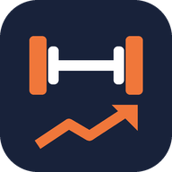

<!DOCTYPE html>
<html lang="es">
<head>
<meta charset="utf-8">
<meta name="viewport" content="width=device-width, initial-scale=1, viewport-fit=cover">
<meta name="theme-color" content="#18223a">
<meta name="description" content="Registro de entrenamientos, rutinas, técnica de los ejercicios y progreso en el gimnasio.">
<link rel="manifest" href="app.webmanifest">
<link rel="icon" type="image/png" href="icon-192.png">
<link rel="apple-touch-icon" href="icon-192.png">
<link rel="preconnect" href="https://fonts.googleapis.com">
<link rel="preconnect" href="https://fonts.gstatic.com" crossorigin>
<link href="https://fonts.googleapis.com/css2?family=Public+Sans:ital,wght@0,400;0,500;0,600;0,700;1,400&display=swap" rel="stylesheet">
<title>Mi Gym</title>
<script>(function(){try{var u=JSON.parse(localStorage.getItem('migym_ui')||'{}'),t=u.theme;if(t!=='light'&&t!=='dark')t=window.matchMedia&&matchMedia('(prefers-color-scheme: dark)').matches?'dark':'light';document.documentElement.dataset.theme=t;if(t==='dark'){var m=document.querySelector('meta[name=theme-color]');if(m)m.content='#0b0e15';}}catch(e){}})();</script>
<style>
:root{color-scheme:light;
  --paper:#f4f5f7;--panel:#fff;--ink:#18223a;--ink-2:#3b465c;--muted:#5b6579;--faint:#8a93a5;--line:#e1e5ec;--line-strong:#cbd2de;
  --accent:#c2410c;--accent-ink:#9a3412;--accent-soft:#fff1e8;--accent-line:#f5c4a5;
  --field:#fff;--hover:#f2f4f8;--chip:#eef1f6;--chip-ink:#3c475d;--subtle:#f8f9fb;--sunken:#eceff4;--track:#e3e7ee;
  --done:#1c7a4f;--done-soft:#e6f3ec;--done-line:#a9d6bd;--warn:#a45200;--warn-bg:#fff8ec;--warn-line:#f0d6a8;--warn-ink:#6e4500;
  --danger:#b42318;--danger-soft:#fdf0ee;--danger-line:#efc7c2;--info-bg:#e6f1fb;--info-ink:#1d5f99;--info-line:#bcd8f2;
  --pE:#1c7a4f;--pI:#c99212;--pP:#8a93a5;
  --nav:#18223a;--nav-ink:#cdd4e4;--nav-muted:#8792ab;--nav-hover:rgba(255,255,255,.06);--nav-active:rgba(255,255,255,.12);
  --head-bg:rgba(244,245,247,.94);--sidebar-w:232px;
  --font:"Public Sans",system-ui,-apple-system,"Segoe UI",Roboto,sans-serif}
:root[data-theme=dark]{color-scheme:dark;
  --paper:#10141d;--panel:#181e2b;--field:#121722;--ink:#e4e8f1;--ink-2:#c3cad8;--muted:#a1a9ba;--faint:#727c94;--line:#272f42;--line-strong:#364056;
  --accent:#f0773a;--accent-ink:#ff9a62;--accent-soft:#33200f;--accent-line:#6b3a1c;
  --hover:#222a3b;--chip:#242c3e;--chip-ink:#c3cad8;--subtle:#151a26;--sunken:#121722;--track:#2a3246;
  --done:#3aa874;--done-soft:#14291f;--done-line:#245c40;--warn:#f0a24e;--warn-bg:#2b2113;--warn-line:#5a4220;--warn-ink:#f3d29b;
  --danger:#ff8a80;--danger-soft:#3a1c1e;--danger-line:#5c2a2d;--info-bg:#16283d;--info-ink:#8cc4f5;--info-line:#24476b;
  --pE:#3aa874;--pI:#d9ab35;--pP:#727c94;
  --nav:#0b0e15;--nav-hover:rgba(255,255,255,.05);--nav-active:rgba(255,255,255,.1);--head-bg:rgba(16,20,29,.92)}
*{box-sizing:border-box}
html{-webkit-text-size-adjust:100%}
body{margin:0;font:15px/1.5 var(--font);background:var(--paper);color:var(--ink);overflow-x:hidden;-webkit-font-smoothing:antialiased;font-variant-numeric:tabular-nums;min-height:100dvh}
h1,h2,h3{line-height:1.25;margin:0}
p{margin:0}
a{color:var(--accent-ink)}
.ic{width:18px;height:18px;flex-shrink:0;stroke:currentColor;fill:none;stroke-width:1.8;stroke-linecap:round;stroke-linejoin:round}
.ic.sm{width:15px;height:15px}
.ic.lg{width:22px;height:22px}
button{font:inherit;font-weight:600;border:1px solid transparent;border-radius:9px;padding:8px 14px;cursor:pointer;display:inline-flex;align-items:center;justify-content:center;gap:7px;background:var(--accent);color:#fff;line-height:1.25;min-height:38px;transition:background .15s,border-color .15s,color .15s;-webkit-tap-highlight-color:transparent}
button:hover{background:var(--accent-ink)}
button.secondary{background:var(--panel);color:var(--ink);border-color:var(--line-strong)}
button.secondary:hover{background:var(--hover)}
button.ghost{background:transparent;color:var(--muted)}
button.ghost:hover{background:var(--hover);color:var(--ink)}
button.danger{background:var(--panel);color:var(--danger);border-color:var(--danger-line)}
button.danger:hover{background:var(--danger-soft)}
button.icon{padding:0;width:38px;height:38px}
button.small{padding:5px 10px;font-size:.86rem;min-height:32px}
button.small.icon{width:32px;height:32px}
button.big{padding:12px 18px;font-size:1rem;min-height:46px}
button.block{width:100%}
button:disabled{opacity:.45;cursor:not-allowed}
button:focus-visible,input:focus-visible,select:focus-visible,textarea:focus-visible{outline:2px solid var(--accent);outline-offset:2px}
input,select,textarea{font:inherit;color:var(--ink);background:var(--field);border:1px solid var(--line-strong);border-radius:9px;padding:8px 10px;min-width:0;width:100%}
textarea{resize:vertical;min-height:70px;line-height:1.45}
input::placeholder,textarea::placeholder{color:var(--faint)}
label.field{display:flex;flex-direction:column;gap:5px;font-size:.86rem;font-weight:600;color:var(--muted);min-width:0}
label.field>span{display:flex;align-items:center;gap:6px}
.grid2{display:grid;grid-template-columns:repeat(2,minmax(0,1fr));gap:12px}
.grid3{display:grid;grid-template-columns:repeat(3,minmax(0,1fr));gap:12px}
.stack{display:flex;flex-direction:column;gap:12px}
.row{display:flex;align-items:center;gap:8px;flex-wrap:wrap}
.row.nowrap{flex-wrap:nowrap}
.spacer{flex:1}
.muted{color:var(--muted)}
.faint{color:var(--faint)}
.small{font-size:.86rem}
.hidden,[hidden]{display:none!important}
.sr{position:absolute;width:1px;height:1px;overflow:hidden;clip:rect(0 0 0 0);white-space:nowrap}

/* ---- Estructura ---- */
.app{display:grid;grid-template-columns:var(--sidebar-w) minmax(0,1fr);min-height:100dvh}
.sidebar{background:var(--nav);color:var(--nav-ink);padding:18px 12px;position:sticky;top:0;height:100dvh;display:flex;flex-direction:column;gap:4px;overflow-y:auto}
.brand{display:flex;align-items:center;gap:10px;font-weight:700;font-size:1.12rem;color:#fff;padding:4px 10px 16px}
.brand img{width:30px;height:30px;border-radius:8px}
.nav-btn{background:transparent;color:var(--nav-ink);justify-content:flex-start;width:100%;font-weight:500;padding:10px 12px;border-radius:9px;gap:12px}
.nav-btn:hover{background:var(--nav-hover)}
.nav-btn.active{background:var(--nav-active);color:#fff;font-weight:600}
.nav-sep{flex:1}
.nav-live{margin:6px 0 10px;background:var(--accent);color:#fff;justify-content:flex-start}
.nav-live:hover{background:var(--accent-ink)}
main{padding:0 32px 120px;max-width:920px;width:100%;margin:0 auto}
.page-head{display:flex;align-items:center;gap:12px;padding:26px 0 16px;flex-wrap:wrap}
.page-head h1{font-size:1.6rem;flex:1;min-width:0;overflow-wrap:anywhere}
.page-head .back{margin-left:-8px}
.sub-head{font-size:.8rem;font-weight:700;letter-spacing:.04em;text-transform:uppercase;color:var(--muted);margin:22px 0 10px;display:flex;align-items:center;gap:8px}
.card{background:var(--panel);border:1px solid var(--line);border-radius:14px;padding:14px 16px}
.card+.card{margin-top:10px}
.list{display:flex;flex-direction:column;gap:10px}
.empty{color:var(--muted);text-align:center;padding:30px 10px;border:1px dashed var(--line-strong);border-radius:14px}
.chip{display:inline-flex;align-items:center;gap:5px;font-size:.78rem;font-weight:600;padding:2px 9px;border-radius:99px;background:var(--chip);color:var(--chip-ink);white-space:nowrap}
.chip.care{background:var(--warn-bg);color:var(--warn-ink);border:1px solid var(--warn-line)}
.chip.care .ic{width:13px;height:13px}
.chip.accent{background:var(--accent-soft);color:var(--accent-ink)}
.dot{width:9px;height:9px;border-radius:50%;display:inline-block;flex-shrink:0}
.dot.E{background:var(--pE)}.dot.I{background:var(--pI)}.dot.P{background:var(--pP)}
.seg{display:inline-flex;background:var(--sunken);border-radius:10px;padding:3px;gap:2px;flex-wrap:wrap}
.seg button{background:transparent;color:var(--muted);font-weight:600;padding:6px 12px;min-height:34px;border-radius:8px}
.seg button:hover{color:var(--ink);background:transparent}
.seg button.active{background:var(--panel);color:var(--ink);box-shadow:0 1px 3px rgba(10,16,30,.12)}
.search{position:relative;flex:1;min-width:0}
.search .ic{position:absolute;left:11px;top:50%;transform:translateY(-50%);color:var(--faint)}
.search input{padding-left:36px}
.chips-scroll{display:flex;gap:6px;overflow-x:auto;padding:2px 0 8px;scrollbar-width:none}
.chips-scroll::-webkit-scrollbar{display:none}
.chips-scroll button{flex-shrink:0;background:var(--panel);color:var(--ink-2);border:1px solid var(--line-strong);border-radius:99px;padding:5px 12px;min-height:34px;font-weight:500;font-size:.88rem}
.chips-scroll button.active{background:var(--nav);border-color:var(--nav);color:#fff}

/* ---- Entrenar ---- */
.live-card{background:var(--accent-soft);border:1px solid var(--accent-line);border-radius:14px;padding:14px 16px;display:flex;align-items:center;gap:12px;margin-bottom:14px}
.live-card b{display:block}
.week{display:grid;grid-template-columns:repeat(7,1fr);gap:6px}
.week .d{display:flex;flex-direction:column;align-items:center;gap:4px;font-size:.78rem;color:var(--muted);padding:8px 0;border-radius:10px;background:var(--panel);border:1px solid var(--line)}
.week .d i{width:26px;height:26px;border-radius:50%;display:grid;place-items:center;font-style:normal;font-weight:700;color:var(--faint);background:var(--sunken);font-size:.78rem}
.week .d.on i{background:var(--done);color:#fff}
.week .d.today{border-color:var(--accent-line)}
.week .d.today>span{color:var(--accent-ink);font-weight:700}
.rt-card{display:flex;align-items:center;gap:12px}
.rt-card .rt-main{flex:1;min-width:0;cursor:pointer}
.rt-card h3{font-size:1.06rem}
.rt-card .meta{font-size:.86rem;color:var(--muted)}

/* ---- Sesión ---- */
.sess-head{position:sticky;top:0;z-index:20;background:var(--head-bg);backdrop-filter:blur(8px);-webkit-backdrop-filter:blur(8px);margin:0 -32px;padding:14px 32px 12px;display:flex;align-items:center;gap:10px;border-bottom:1px solid var(--line)}
.sess-head .t{flex:1;min-width:0}
.sess-head h1{font-size:1.2rem;white-space:nowrap;overflow:hidden;text-overflow:ellipsis}
.sess-head .clock{font-size:.88rem;color:var(--muted);display:flex;gap:12px;flex-wrap:wrap}
.ex-card{background:var(--panel);border:1px solid var(--line);border-radius:14px;padding:12px 14px 12px;margin-top:12px}
.ex-top{display:flex;align-items:flex-start;gap:6px}
.ex-name{flex:1;min-width:0;background:transparent;color:var(--ink);justify-content:flex-start;text-align:left;padding:4px 0;font-size:1.04rem;font-weight:700;min-height:0;display:block}
.ex-name:hover{background:transparent;color:var(--accent-ink)}
.ex-badges{display:flex;gap:5px;flex-wrap:wrap;margin:2px 0 4px}
.ex-info{display:flex;flex-direction:column;gap:3px;font-size:.86rem;color:var(--muted);margin:4px 0 8px}
.ex-info .line{display:flex;gap:6px;align-items:flex-start}
.ex-info .line .ic{margin-top:2px;width:15px;height:15px}
.note-prev{background:var(--warn-bg);color:var(--warn-ink);border:1px solid var(--warn-line);border-radius:9px;padding:6px 10px;font-size:.88rem;display:flex;gap:8px;align-items:flex-start;margin:2px 0 6px}
.note-prev .ic{margin-top:2px;width:15px;height:15px}
.note-fixed{background:var(--info-bg);color:var(--info-ink);border:1px solid var(--info-line)}
.sugg{background:var(--done-soft);color:var(--done);border:1px solid var(--done-line)}
.sets{display:grid;grid-template-columns:40px minmax(0,1fr) 76px 66px 46px;gap:6px;align-items:center}
.sets.t-reps{grid-template-columns:40px minmax(0,1fr) 76px 46px}
.sets.t-tiempo{grid-template-columns:40px minmax(0,1fr) 80px 46px}
.sets.t-distancia{grid-template-columns:40px minmax(0,1fr) 70px 70px 46px}
.sets .h{font-size:.74rem;font-weight:700;color:var(--faint);text-transform:uppercase;letter-spacing:.03em;text-align:center}
.sets .h.l{text-align:left}
.unit-btn{background:transparent;color:var(--accent-ink);font-size:.74rem;font-weight:700;padding:2px 4px;min-height:24px;text-transform:uppercase;border:1px dashed var(--accent-line);border-radius:6px;justify-self:center;gap:3px}
.unit-btn:hover{background:var(--accent-soft)}
.set-row{display:contents}
.set-lbl{background:var(--sunken);color:var(--ink-2);font-weight:700;min-height:40px;padding:0;border-radius:8px;font-size:.9rem}
.set-lbl:hover{background:var(--track)}
.set-lbl.warmup{color:var(--warn);}
.set-lbl.drop{color:var(--info-ink)}
.set-lbl.fallo{color:var(--danger)}
.prev{font-size:.84rem;color:var(--faint);white-space:nowrap;overflow:hidden;text-overflow:ellipsis;text-align:center}
.sets input{text-align:center;padding:8px 4px;min-height:40px;font-weight:600}
.chk{width:46px;height:40px;padding:0;background:var(--sunken);color:var(--faint);min-height:40px;border-radius:8px}
.chk:hover{background:var(--track);color:var(--ink)}
.chk.on{background:var(--done);color:#fff}
.set-row.done>input,.set-row.done>.prev,.set-row.done>.set-lbl{background:var(--done-soft)}
.set-row.done>input{border-color:var(--done-line)}
.set-row.done>.prev{border-radius:8px;align-self:stretch;display:flex;align-items:center;justify-content:center}
.ex-foot{display:flex;gap:8px;margin-top:10px;flex-wrap:wrap}
.ex-foot button{flex:1}
.ex-note{margin-top:8px;min-height:40px;font-size:.92rem}
.sess-foot{display:flex;flex-direction:column;gap:10px;margin-top:18px}
.flash{animation:flash .6s}
@keyframes flash{0%,100%{box-shadow:none}30%{box-shadow:0 0 0 3px var(--danger-line)}}

/* ---- Descanso ---- */
.rest-bar{position:fixed;z-index:310;left:calc(var(--sidebar-w) + 20px);right:20px;bottom:20px;max-width:560px;margin:0 auto;background:var(--nav);color:#fff;border-radius:14px;padding:10px 10px 10px 16px;display:flex;align-items:center;gap:10px;box-shadow:0 12px 32px rgba(10,16,30,.35);overflow:hidden}
.rest-bar .prog{position:absolute;left:0;bottom:0;height:4px;background:var(--accent);transition:width .25s linear}
.rest-bar .time{font-size:1.5rem;font-weight:700;min-width:64px}
.rest-bar .lbl{flex:1;min-width:0;font-size:.82rem;color:var(--nav-ink);overflow:hidden;text-overflow:ellipsis;white-space:nowrap}
.rest-bar button{background:rgba(255,255,255,.1);color:#fff;min-height:40px;padding:6px 10px}
.rest-bar button:hover{background:rgba(255,255,255,.18)}
.rest-bar.over .time{color:#ffb38a}

/* ---- Historial ---- */
.h-card{cursor:pointer}
.h-card:hover{border-color:var(--line-strong)}
.h-card h3{font-size:1rem;display:flex;gap:8px;align-items:center}
.h-card .meta{font-size:.84rem;color:var(--muted);display:flex;gap:12px;flex-wrap:wrap;margin:2px 0 6px}
.h-card ul{margin:0;padding:0;list-style:none;font-size:.88rem;color:var(--ink-2)}
.h-card li{white-space:nowrap;overflow:hidden;text-overflow:ellipsis}
.stats3{display:grid;grid-template-columns:repeat(4,minmax(0,1fr));gap:10px;margin-bottom:14px}
.stat{background:var(--panel);border:1px solid var(--line);border-radius:12px;padding:10px 12px}
.stat b{display:block;font-size:1.2rem}
.stat span{font-size:.8rem;color:var(--muted)}
table.sets-t{width:100%;border-collapse:collapse;font-size:.9rem;margin-top:6px}
table.sets-t td,table.sets-t th{padding:5px 6px;border-bottom:1px solid var(--line);text-align:left}
table.sets-t th{font-size:.74rem;text-transform:uppercase;color:var(--faint);letter-spacing:.03em}
table.sets-t td.k{color:var(--muted);width:44px}

/* ---- Ejercicios y técnica ---- */
.ex-row{display:flex;align-items:center;gap:12px;padding:10px 14px;cursor:pointer;background:var(--panel);border:1px solid var(--line);border-radius:12px}
.ex-row:hover{border-color:var(--line-strong)}
.ex-row .m{flex:1;min-width:0}
.ex-row b{display:block;font-weight:600;overflow-wrap:anywhere}
.ex-row .meta{font-size:.82rem;color:var(--muted)}
.tech h3{font-size:.95rem;margin:14px 0 6px;display:flex;align-items:center;gap:8px}
.tech ol,.tech ul{margin:0;padding-left:22px}
.tech li{margin:4px 0}
.tech .avoid li::marker{color:var(--warn)}
.guide h2{font-size:1.08rem;margin:22px 0 8px}
.guide ol,.guide ul{margin:0;padding-left:22px}
.guide li{margin:6px 0}
.guide .two{display:grid;grid-template-columns:repeat(2,minmax(0,1fr));gap:12px}
.guide .box{background:var(--panel);border:1px solid var(--line);border-radius:12px;padding:12px 14px}
.guide .box h3{font-size:.95rem;margin-bottom:6px}
.guide .box.stop{border-left:4px solid var(--danger)}
.guide .box.go{border-left:4px solid var(--done)}
.signal{background:var(--warn-bg);border:1px solid var(--warn-line);color:var(--warn-ink);border-radius:12px;padding:10px 14px;margin-top:8px}
.signal b{display:block}

/* ---- Rutinas ---- */
.ri{display:flex;align-items:center;gap:10px;padding:10px 12px;background:var(--panel);border:1px solid var(--line);border-radius:12px}
.ri .m{flex:1;min-width:0;cursor:pointer}
.ri b{font-weight:600;display:flex;gap:7px;align-items:center}
.ri .meta{font-size:.84rem;color:var(--muted)}
.ri .n{width:26px;height:26px;border-radius:50%;background:var(--sunken);display:grid;place-items:center;font-size:.8rem;font-weight:700;color:var(--muted);flex-shrink:0}
.ri .ctrl{display:flex;gap:2px}

/* ---- Ajustes e instrucciones ---- */
.set-sec{background:var(--panel);border:1px solid var(--line);border-radius:14px;padding:16px;margin-top:12px}
.set-sec h2{font-size:1.02rem;margin-bottom:12px;display:flex;align-items:center;gap:8px}
.set-line{display:flex;align-items:center;gap:12px;padding:8px 0;border-top:1px solid var(--line);flex-wrap:wrap}
.set-line:first-of-type{border-top:0}
.set-line .lbl{flex:1;min-width:180px}
.set-line input.num{width:96px;text-align:center}
.switch{position:relative;width:46px;height:28px;border-radius:99px;background:var(--track);padding:0;min-height:0;border:0;flex-shrink:0}
.switch::after{content:"";position:absolute;top:3px;left:3px;width:22px;height:22px;border-radius:50%;background:#fff;box-shadow:0 1px 3px rgba(0,0,0,.25);transition:left .15s}
.switch:hover{background:var(--line-strong)}
.switch.on{background:var(--done)}
.switch.on::after{left:21px}
.help h2{font-size:1.06rem;margin:22px 0 8px}
.help p,.help li{color:var(--ink-2)}
.help ul,.help ol{padding-left:22px;margin:6px 0}
.help li{margin:4px 0}
kbd{font:600 .82rem var(--font);background:var(--panel);border:1px solid var(--line-strong);border-bottom-width:2px;border-radius:6px;padding:1px 7px;color:var(--ink)}
table.keys{border-collapse:collapse;width:100%;max-width:560px}
table.keys td{padding:6px 8px;border-bottom:1px solid var(--line)}

/* ---- Hojas, avisos ---- */
.scrim{position:fixed;inset:0;background:rgba(18,26,44,.45);z-index:350}
.sheet{position:fixed;z-index:500;background:var(--panel);left:50%;top:50%;transform:translate(-50%,-50%);width:min(560px,calc(100vw - 40px));max-height:min(86dvh,760px);overflow-y:auto;border-radius:16px;padding:18px 20px 20px;box-shadow:0 24px 60px rgba(10,16,30,.35);animation:pop-in .16s ease-out}
.sheet-handle{display:none}
.sheet-head{display:flex;align-items:center;gap:8px;margin-bottom:12px}
.sheet-head h3{font-size:1.1rem;flex:1;min-width:0;overflow-wrap:anywhere}
.sheet-item{display:flex;width:100%;justify-content:flex-start;gap:12px;padding:12px 8px;background:transparent;color:var(--ink);border-radius:10px;font-weight:500;font-size:1rem;border-bottom:1px solid var(--line);text-align:left;min-height:48px}
.sheet-item:hover{background:var(--hover)}
.sheet-item.danger{color:var(--danger)}
.sheet-item .ic{color:var(--muted)}
.sheet-item.danger .ic{color:var(--danger)}
.sheet-item small{margin-left:auto;color:var(--faint);font-weight:400;font-size:.85rem;text-align:right}
.sheet-item .tick{margin-left:auto;color:var(--accent)}
.sheet-sec{font-size:.8rem;font-weight:700;color:var(--muted);text-transform:uppercase;letter-spacing:.04em;margin:14px 0 4px}
.sheet-actions{display:flex;gap:8px;margin-top:16px;justify-content:flex-end;flex-wrap:wrap}
.sheet-actions button{min-width:110px}
.pick-list{display:flex;flex-direction:column;max-height:46dvh;overflow-y:auto;margin-top:8px}
.toast-wrap{position:fixed;right:20px;bottom:20px;z-index:600}
body.resting .toast-wrap{bottom:92px}
.toast{background:var(--nav);color:#fff;padding:8px 8px 8px 14px;border-radius:10px;display:flex;gap:10px;align-items:center;box-shadow:0 12px 32px rgba(10,16,30,.3);max-width:min(560px,calc(100vw - 40px));animation:toast-in .2s ease-out}
:root[data-theme=dark] .toast,:root[data-theme=dark] .rest-bar{border:1px solid var(--line-strong)}
.toast>.ic{color:#ffb38a}
.toast span{flex:1;min-width:0}
.toast button{background:transparent;color:#ffc7a6;padding:5px 8px;font-size:.9rem;min-height:34px}
.toast button:hover{background:rgba(255,255,255,.08)}
.toast .toast-x{color:#9aa4ba;width:32px;padding:0}
@keyframes toast-in{from{opacity:0;transform:translateY(8px)}to{opacity:1;transform:none}}
@keyframes pop-in{from{opacity:0;transform:translate(-50%,-48%)}to{opacity:1;transform:translate(-50%,-50%)}}
@keyframes sheet-in{from{transform:translateY(30px);opacity:.6}to{transform:none;opacity:1}}
.bottom-nav{display:none}

/* ================= Móvil ================= */
@media(max-width:760px){
  .app{display:block}
  .sidebar{display:none}
  main{padding:0 12px calc(96px + env(safe-area-inset-bottom))}
  body.resting main{padding-bottom:calc(170px + env(safe-area-inset-bottom))}
  .page-head{padding:calc(14px + env(safe-area-inset-top)) 0 12px}
  .page-head h1{font-size:1.4rem}
  .sess-head{margin:0 -12px;padding:calc(10px + env(safe-area-inset-top)) 8px 10px;gap:4px}
  .sess-head h1{font-size:1.05rem;white-space:normal;display:-webkit-box;-webkit-line-clamp:2;-webkit-box-orient:vertical}
  .sess-head>button:last-child{padding:8px 12px}
  .grid3.keep{grid-template-columns:repeat(3,minmax(0,1fr));gap:8px}
  .card{padding:12px 14px}
  .ex-card{padding:10px 10px 12px;margin-top:10px}
  .sets{grid-template-columns:36px minmax(0,1fr) 70px 58px 46px;gap:5px}
  .sets.t-reps{grid-template-columns:36px minmax(0,1fr) 72px 46px}
  .sets.t-tiempo{grid-template-columns:36px minmax(0,1fr) 76px 46px}
  .sets.t-distancia{grid-template-columns:36px minmax(0,1fr) 62px 62px 46px}
  input,select,textarea{font-size:16px}
  .grid2,.grid3,.guide .two{grid-template-columns:minmax(0,1fr)}
  .grid2.keep{grid-template-columns:repeat(2,minmax(0,1fr))}
  .stats3{grid-template-columns:repeat(2,minmax(0,1fr))}
  .bottom-nav{display:grid;grid-template-columns:repeat(4,1fr);position:fixed;left:0;right:0;bottom:0;z-index:300;background:var(--nav);padding:6px 6px calc(6px + env(safe-area-inset-bottom));box-shadow:0 -6px 20px rgba(10,16,30,.18)}
  :root[data-theme=dark] .bottom-nav{border-top:1px solid var(--line-strong)}
  .bottom-nav button{flex-direction:column;gap:2px;background:transparent;color:var(--nav-muted);font-size:.7rem;font-weight:600;padding:6px 2px;border-radius:10px;min-height:52px;position:relative}
  .bottom-nav button .ic{width:22px;height:22px}
  .bottom-nav button.active{color:#fff}
  .bottom-nav button.live::after{content:"";position:absolute;top:6px;left:calc(50% + 8px);width:9px;height:9px;border-radius:50%;background:var(--accent);box-shadow:0 0 0 2px var(--nav)}
  .rest-bar{left:8px;right:8px;bottom:calc(74px + env(safe-area-inset-bottom));padding:8px 8px 8px 14px;gap:6px}
  .rest-bar .time{font-size:1.35rem;min-width:56px}
  .rest-bar button{padding:6px 8px}
  .toast-wrap{left:12px;right:12px;bottom:calc(80px + env(safe-area-inset-bottom))}
  body.resting .toast-wrap{bottom:calc(146px + env(safe-area-inset-bottom))}
  .toast{max-width:none}
  .sheet{left:0;right:0;top:auto;bottom:0;transform:none;width:auto;max-height:82dvh;border-radius:16px 16px 0 0;padding:8px 16px calc(16px + env(safe-area-inset-bottom));animation:sheet-in .2s ease-out}
  .sheet-handle{display:block;width:40px;height:4px;border-radius:99px;background:var(--line-strong);margin:4px auto 10px}
  .sheet-actions button{flex:1}
  .set-line .lbl{min-width:0;flex-basis:100%}
}
@media(min-width:761px){
  .sets{max-width:560px}
  .sets.t-reps,.sets.t-tiempo{max-width:440px}
}
@media (prefers-reduced-motion:reduce){*,*::before,*::after{animation:none!important;transition:none!important}}
</style>
</head>
<body>
<svg width="0" height="0" style="position:absolute" aria-hidden="true">
 <defs>
  <symbol id="i-dumbbell" viewBox="0 0 24 24"><path d="M14.4 14.4 9.6 9.6"/><path d="M18.657 21.485a2 2 0 1 1-2.829-2.828l-1.767 1.768a2 2 0 1 1-2.829-2.829l6.364-6.364a2 2 0 1 1 2.829 2.829l-1.768 1.767a2 2 0 1 1 2.828 2.829z"/><path d="m21.5 21.5-1.4-1.4"/><path d="M3.9 3.9 2.5 2.5"/><path d="M6.404 12.768a2 2 0 1 1-2.829-2.829l1.768-1.767a2 2 0 1 1-2.828-2.829l2.828-2.828a2 2 0 1 1 2.829 2.828l1.767-1.768a2 2 0 1 1 2.829 2.829z"/></symbol>
  <symbol id="i-history" viewBox="0 0 24 24"><path d="M3 12a9 9 0 1 0 9-9 9.75 9.75 0 0 0-6.74 2.74L3 8"/><path d="M3 3v5h5"/><path d="M12 7v5l4 2"/></symbol>
  <symbol id="i-book" viewBox="0 0 24 24"><path d="M2 3h6a4 4 0 0 1 4 4v14a3 3 0 0 0-3-3H2z"/><path d="M22 3h-6a4 4 0 0 0-4 4v14a3 3 0 0 1 3-3h7z"/></symbol>
  <symbol id="i-sliders" viewBox="0 0 24 24"><path d="M21 4h-7"/><path d="M10 4H3"/><path d="M21 12h-9"/><path d="M8 12H3"/><path d="M21 20h-5"/><path d="M12 20H3"/><path d="M14 2v4"/><path d="M8 10v4"/><path d="M16 18v4"/></symbol>
  <symbol id="i-help" viewBox="0 0 24 24"><circle cx="12" cy="12" r="10"/><path d="M9.09 9a3 3 0 0 1 5.83 1c0 2-3 3-3 3"/><path d="M12 17h.01"/></symbol>
  <symbol id="i-plus" viewBox="0 0 24 24"><path d="M5 12h14"/><path d="M12 5v14"/></symbol>
  <symbol id="i-minus" viewBox="0 0 24 24"><path d="M5 12h14"/></symbol>
  <symbol id="i-x" viewBox="0 0 24 24"><path d="M18 6 6 18"/><path d="m6 6 12 12"/></symbol>
  <symbol id="i-check" viewBox="0 0 24 24"><path d="M20 6 9 17l-5-5"/></symbol>
  <symbol id="i-check-circle" viewBox="0 0 24 24"><circle cx="12" cy="12" r="10"/><path d="m9 12 2 2 4-4"/></symbol>
  <symbol id="i-play" viewBox="0 0 24 24"><path d="M6 3v18l14-9z"/></symbol>
  <symbol id="i-timer" viewBox="0 0 24 24"><path d="M10 2h4"/><path d="m12 14 3-3"/><circle cx="12" cy="14" r="8"/></symbol>
  <symbol id="i-skip" viewBox="0 0 24 24"><path d="m5 4 10 8-10 8z"/><path d="M19 5v14"/></symbol>
  <symbol id="i-swap" viewBox="0 0 24 24"><path d="M8 3 4 7l4 4"/><path d="M4 7h16"/><path d="m16 21 4-4-4-4"/><path d="M20 17H4"/></symbol>
  <symbol id="i-more" viewBox="0 0 24 24"><circle cx="12" cy="12" r="1"/><circle cx="19" cy="12" r="1"/><circle cx="5" cy="12" r="1"/></symbol>
  <symbol id="i-pencil" viewBox="0 0 24 24"><path d="M17 3a2.85 2.83 0 1 1 4 4L7.5 20.5 2 22l1.5-5.5Z"/></symbol>
  <symbol id="i-trash" viewBox="0 0 24 24"><path d="M3 6h18"/><path d="M19 6v14c0 1-1 2-2 2H7c-1 0-2-1-2-2V6"/><path d="M8 6V4c0-1 1-2 2-2h4c1 0 2 1 2 2v2"/></symbol>
  <symbol id="i-undo" viewBox="0 0 24 24"><path d="M3 7v6h6"/><path d="M21 17a9 9 0 0 0-9-9 9 9 0 0 0-6 2.3L3 13"/></symbol>
  <symbol id="i-chev-left" viewBox="0 0 24 24"><path d="m15 18-6-6 6-6"/></symbol>
  <symbol id="i-chev-right" viewBox="0 0 24 24"><path d="m9 18 6-6-6-6"/></symbol>
  <symbol id="i-arrow-up" viewBox="0 0 24 24"><path d="m5 12 7-7 7 7"/><path d="M12 19V5"/></symbol>
  <symbol id="i-arrow-down" viewBox="0 0 24 24"><path d="M12 5v14"/><path d="m19 12-7 7-7-7"/></symbol>
  <symbol id="i-note" viewBox="0 0 24 24"><path d="M16 3H5a2 2 0 0 0-2 2v14a2 2 0 0 0 2 2h14a2 2 0 0 0 2-2V8Z"/><path d="M15 3v4a2 2 0 0 0 2 2h4"/></symbol>
  <symbol id="i-pin" viewBox="0 0 24 24"><path d="M12 17v5"/><path d="M9 10.76a2 2 0 0 1-1.11 1.79l-1.78.9A2 2 0 0 0 5 15.24V16a1 1 0 0 0 1 1h12a1 1 0 0 0 1-1v-.76a2 2 0 0 0-1.11-1.79l-1.78-.9A2 2 0 0 1 15 10.76V7a1 1 0 0 1 1-1 2 2 0 0 0 0-4H8a2 2 0 0 0 0 4 1 1 0 0 1 1 1z"/></symbol>
  <symbol id="i-trend" viewBox="0 0 24 24"><path d="M22 7 13.5 15.5 8.5 10.5 2 17"/><path d="M16 7h6v6"/></symbol>
  <symbol id="i-shield" viewBox="0 0 24 24"><path d="M20 13c0 5-3.5 7.5-7.66 8.95a1 1 0 0 1-.67-.01C7.5 20.5 4 18 4 13V6a1 1 0 0 1 1-1c2 0 4.5-1.2 6.24-2.72a1.17 1.17 0 0 1 1.52 0C14.51 3.81 17 5 19 5a1 1 0 0 1 1 1z"/><path d="M12 8v4"/><path d="M12 16h.01"/></symbol>
  <symbol id="i-clock" viewBox="0 0 24 24"><circle cx="12" cy="12" r="10"/><path d="M12 6v6l4 2"/></symbol>
  <symbol id="i-calendar" viewBox="0 0 24 24"><rect width="18" height="18" x="3" y="4" rx="2"/><path d="M16 2v4"/><path d="M8 2v4"/><path d="M3 10h18"/></symbol>
  <symbol id="i-list" viewBox="0 0 24 24"><path d="M8 6h13"/><path d="M8 12h13"/><path d="M8 18h13"/><path d="M3 6h.01"/><path d="M3 12h.01"/><path d="M3 18h.01"/></symbol>
  <symbol id="i-search" viewBox="0 0 24 24"><circle cx="11" cy="11" r="8"/><path d="m21 21-4.3-4.3"/></symbol>
  <symbol id="i-download" viewBox="0 0 24 24"><path d="M21 15v4a2 2 0 0 1-2 2H5a2 2 0 0 1-2-2v-4"/><path d="m7 10 5 5 5-5"/><path d="M12 15V3"/></symbol>
  <symbol id="i-upload" viewBox="0 0 24 24"><path d="M21 15v4a2 2 0 0 1-2 2H5a2 2 0 0 1-2-2v-4"/><path d="m17 8-5-5-5 5"/><path d="M12 3v12"/></symbol>
  <symbol id="i-share" viewBox="0 0 24 24"><path d="M4 12v8a2 2 0 0 0 2 2h12a2 2 0 0 0 2-2v-8"/><path d="m16 6-4-4-4 4"/><path d="M12 2v13"/></symbol>
  <symbol id="i-monitor-down" viewBox="0 0 24 24"><rect width="20" height="14" x="2" y="3" rx="2"/><path d="M12 17v4"/><path d="M8 21h8"/><path d="m15 10-3 3-3-3"/><path d="M12 13V6"/></symbol>
  <symbol id="i-copy" viewBox="0 0 24 24"><rect width="14" height="14" x="8" y="8" rx="2"/><path d="M4 16c-1.1 0-2-.9-2-2V4c0-1.1.9-2 2-2h10c1.1 0 2 .9 2 2"/></symbol>
  <symbol id="i-repeat" viewBox="0 0 24 24"><path d="m17 2 4 4-4 4"/><path d="M3 11v-1a4 4 0 0 1 4-4h14"/><path d="m7 22-4-4 4-4"/><path d="M21 13v1a4 4 0 0 1-4 4H3"/></symbol>
  <symbol id="i-alert" viewBox="0 0 24 24"><path d="m21.73 18-8-14a2 2 0 0 0-3.48 0l-8 14A2 2 0 0 0 4 21h16a2 2 0 0 0 1.73-3"/><path d="M12 9v4"/><path d="M12 17h.01"/></symbol>
  <symbol id="i-sun" viewBox="0 0 24 24"><circle cx="12" cy="12" r="4"/><path d="M12 2v2"/><path d="M12 20v2"/><path d="m4.93 4.93 1.41 1.41"/><path d="m17.66 17.66 1.41 1.41"/><path d="M2 12h2"/><path d="M20 12h2"/><path d="m6.34 17.66-1.41 1.41"/><path d="m19.07 4.93-1.41 1.41"/></symbol>
  <symbol id="i-save" viewBox="0 0 24 24"><path d="M15.2 3a2 2 0 0 1 1.4.6l3.8 3.8a2 2 0 0 1 .6 1.4V19a2 2 0 0 1-2 2H5a2 2 0 0 1-2-2V5a2 2 0 0 1 2-2z"/><path d="M17 21v-7a1 1 0 0 0-1-1H8a1 1 0 0 0-1 1v7"/><path d="M7 3v4a1 1 0 0 0 1 1h7"/></symbol>
  <symbol id="i-archive" viewBox="0 0 24 24"><rect width="20" height="5" x="2" y="3" rx="1"/><path d="M4 8v11a2 2 0 0 0 2 2h12a2 2 0 0 0 2-2V8"/><path d="M10 12h4"/></symbol>
  <symbol id="i-flag" viewBox="0 0 24 24"><path d="M4 15s1-1 4-1 5 2 8 2 4-1 4-1V3s-1 1-4 1-5-2-8-2-4 1-4 1z"/><path d="M4 22v-7"/></symbol>
  <symbol id="i-zap" viewBox="0 0 24 24"><path d="M4 14a1 1 0 0 1-.78-1.63l9.9-10.2a.5.5 0 0 1 .86.46l-1.92 6.02A1 1 0 0 0 13 10h7a1 1 0 0 1 .78 1.63l-9.9 10.2a.5.5 0 0 1-.86-.46l1.92-6.02A1 1 0 0 0 11 14z"/></symbol>
  <symbol id="i-bell" viewBox="0 0 24 24"><path d="M6 8a6 6 0 0 1 12 0c0 7 3 9 3 9H3s3-2 3-9"/><path d="M10.3 21a1.94 1.94 0 0 0 3.4 0"/></symbol>
 </defs>
</svg>

<div class="app">
  <aside class="sidebar" aria-label="Navegación">
    <div class="brand">Mi Gym</div>
    <button type="button" class="nav-btn nav-live" id="navLive" hidden></button>
    <button type="button" class="nav-btn" data-view="train"></button>
    <button type="button" class="nav-btn" data-view="history"></button>
    <button type="button" class="nav-btn" data-view="exercises"></button>
    <div class="nav-sep"></div>
    <button type="button" class="nav-btn" data-view="settings"></button>
    <button type="button" class="nav-btn" data-view="help"></button>
    <button type="button" class="nav-btn" id="installBtn" hidden></button>
  </aside>
  <main id="main" tabindex="-1"></main>
</div>
<nav class="bottom-nav" aria-label="Navegación">
  <button type="button" data-view="train"></button>
  <button type="button" data-view="history"></button>
  <button type="button" data-view="exercises"></button>
  <button type="button" data-view="settings"></button>
</nav>
<div class="rest-bar" id="restBar" hidden role="timer" aria-live="off"></div>
<div class="scrim" id="scrim" hidden></div>
<div class="sheet" id="sheet" hidden role="dialog" aria-modal="true"></div>
<div class="toast-wrap" id="toastWrap" aria-live="polite"></div>
<input type="file" id="fileInput" hidden>

<script>
/* ================= Datos iniciales (ejercicios con su técnica y rutinas) ================= */
const SEED={"exercises":[{"id":"ex:curl-femoral","name":"Curl femoral sentado","muscle":"isquios","secondary":[],"equipment":"maquina","type":"peso_reps","careFlags":[],"restSec":90,"tech":{"how":["Ajusta el respaldo para que la rodilla quede alineada con el eje de la máquina y el rodillo justo por encima del tobillo.","Baja la almohadilla de los muslos hasta que te sujete bien e inclina un poco el tronco hacia delante: el isquio se estira más.","Flexiona hasta el final del recorrido y aguanta 1 s.","Vuelve en 2–3 s hasta estirar la pierna, sin soltar la tensión."],"avoid":["No despegues la cadera del asiento ni arquees la lumbar para terminar la repetición.","Sin golpes al final de la bajada: la rodilla no se bloquea de golpe.","Si notas tirón detrás de la rodilla, revisa la alineación con el eje."],"alts":["curl femoral tumbado","curl de pie en polea baja con tobillera (unilateral)","curl femoral con fitball"]},"hevy":["Seated Leg Curl (Machine)"],"archived":false},{"id":"ex:prensa","name":"Prensa horizontal","muscle":"cuadriceps","secondary":["gluteos"],"equipment":"maquina","type":"peso_reps","careFlags":["lumbar"],"restSec":120,"tech":{"how":["Espalda y glúteos pegados al respaldo durante toda la serie; agarra las asas.","Pies a la anchura de las caderas, en el centro de la plataforma y con las puntas algo abiertas.","Baja en 2–3 s hasta unos 90° de rodilla o justo antes de que la pelvis se despegue.","Empuja con todo el pie y para antes de bloquear las rodillas."],"avoid":["El límite lo marca la pelvis: si el coxis se levanta del asiento, la lumbar se flexiona con carga. Acorta el recorrido.","Rodillas en la línea de los pies, sin que se cierren hacia dentro.","Abdomen firme; no aguantes el aire varias repeticiones seguidas."],"alts":["hack squat","sentadilla goblet con mancuerna","sentadilla búlgara con mancuernas"]},"hevy":["Leg Press Horizontal (Machine)"],"archived":false},{"id":"ex:hip-thrust","name":"Hip thrust en máquina","muscle":"gluteos","secondary":["isquios"],"equipment":"maquina","type":"peso_reps","careFlags":["lumbar"],"restSec":120,"tech":{"how":["Escápulas apoyadas en el respaldo; la almohadilla o el cinturón de la máquina sobre la cadera.","Pies a la anchura de las caderas, colocados para que la tibia quede vertical arriba.","Barbilla recogida y mirada al frente; sube empujando con los talones hasta alinear hombros, cadera y rodillas.","Aprieta el glúteo 1 s arriba y baja controlando."],"avoid":["Sube con la cadera, no con la lumbar: arriba, costillas abajo y pelvis hacia atrás, sin arquear.","¿Notas más el isquio? Acerca los pies. ¿El cuádriceps? Aléjalos.","En la alternativa con barra, usa siempre almohadilla."],"alts":["hip thrust con barra en banco","hip thrust en Multipower","puente de glúteo en el suelo con mancuerna o disco"]},"hevy":["Hip Thrust (Machine)"],"archived":false},{"id":"ex:pm-rumano-mancuernas","name":"Peso muerto rumano con mancuernas","muscle":"isquios","secondary":["gluteos","lumbar"],"equipment":"mancuernas","type":"peso_reps","careFlags":["lumbar"],"restSec":120,"tech":{"how":["De pie, pies a la anchura de las caderas, mancuernas delante de los muslos y rodillas ligeramente flexionadas.","Lleva la cadera hacia atrás, como si cerraras una puerta con los glúteos; las mancuernas bajan pegadas a las piernas.","Baja hasta notar estiramiento en los isquios (suele ser a media tibia) con la espalda neutra.","Sube empujando la cadera hacia delante y aprieta el glúteo arriba, sin echar el tronco hacia atrás."],"avoid":["La espalda no se redondea: el recorrido termina justo donde empezaría a curvarse.","Abdomen apretado y mancuernas cerca del cuerpo; si se separan, la carga pasa a la lumbar.","Dos series de aproximación antes de las de trabajo. Si molesta la lumbar, cambia al pull-through."],"alts":["pull-through en polea baja con cuerda","peso muerto rumano con barra, con peso moderado","puente de glúteo con mancuerna"]},"hevy":["Romanian Deadlift (Dumbbell)"],"archived":false},{"id":"ex:pull-through","name":"Pull-through en polea baja","muscle":"gluteos","secondary":["isquios"],"equipment":"polea","type":"peso_reps","careFlags":["lumbar"],"restSec":90,"tech":{"how":["Polea baja con cuerda. De espaldas a la polea, coge la cuerda entre las piernas y da 2–3 pasos adelante hasta que el peso se despegue.","Pies algo más abiertos que las caderas y rodillas ligeramente flexionadas; espalda neutra y abdomen firme.","Lleva la cadera hacia atrás, dejando que la cuerda pase entre las piernas, hasta notar tensión en los isquios.","Vuelve llevando la cadera adelante y aprieta el glúteo 1 s arriba, sin echarte hacia atrás."],"avoid":["Espalda neutra siempre: el recorrido acaba donde la espalda empezaría a redondearse.","Arriba terminas con el glúteo, no arqueando la lumbar: costillas abajo.","Si la polea te arrastra hacia atrás, sobra peso. Nunca al fallo."],"alts":["peso muerto rumano con mancuernas (el anterior), solo sin molestias lumbares: espalda neutra y nunca al fallo","curl femoral tumbado","puente de glúteo en el suelo con disco"]},"hevy":[],"archived":false},{"id":"ex:ext-cuad","name":"Extensión de cuádriceps","muscle":"cuadriceps","secondary":[],"equipment":"maquina","type":"peso_reps","careFlags":[],"restSec":90,"tech":{"how":["Rodilla alineada con el eje de la máquina; el rodillo sobre el empeine, justo encima del tobillo.","Espalda apoyada y manos en las asas para que la cadera no se levante.","Extiende hasta casi bloquear y aguanta 1 s arriba.","Baja en 2–3 s hasta unos 90° antes de la siguiente repetición."],"avoid":["Sin impulso ni balanceo: si la cadera se levanta del asiento, sobra peso.","Si molesta la rodilla, limita la bajada al rango sin dolor.","Fallo técnico: paras cuando la técnica se rompe, no cuando el peso deja de moverse."],"alts":["extensión unilateral en polea con tobillera","step-up a cajón con mancuernas","split squat con mancuernas"]},"hevy":["Leg Extension (Machine)"],"archived":false},{"id":"ex:abduccion","name":"Abducción de cadera en máquina","muscle":"gluteos","secondary":[],"equipment":"maquina","type":"peso_reps","careFlags":[],"restSec":60,"tech":{"how":["Siéntate al fondo con la espalda apoyada; inclinar un poco el tronco adelante implica más el glúteo.","Abre las piernas en 1 s y aguanta 1 s en la apertura máxima.","Cierra en 2–3 s sin dejar que las placas choquen.","La pelvis no se mueve del asiento en toda la serie."],"avoid":["No uses el tronco para impulsarte ni balancees las piernas.","Rango cómodo: forzar la apertura con mucho peso carga la cadera, no el glúteo.","Peso moderado y tensión constante en las 15–20 repeticiones."],"alts":["abducción en polea baja con tobillera","pasos laterales con banda elástica","abducción tumbado de lado"]},"hevy":["Hip Abduction (Machine)"],"archived":false},{"id":"ex:aduccion","name":"Aducción de cadera en máquina","muscle":"aductores","secondary":[],"equipment":"maquina","type":"peso_reps","careFlags":[],"restSec":60,"tech":{"how":["Siéntate al fondo con la espalda apoyada y las almohadillas por la cara interna de las rodillas.","Elige una apertura inicial en la que notes estiramiento sin tirón en la ingle.","Junta las piernas en 1 s y aguanta 1 s con las almohadillas casi juntas.","Abre en 2–3 s controlando, sin que las placas choquen."],"avoid":["No fuerces la apertura: los aductores se lesionan sobre todo en estiramiento con carga.","Pelvis quieta en el asiento; sin balanceos ni impulso.","Si molesta la ingle, reduce la apertura inicial antes que el peso."],"alts":["aducción en polea baja con tobillera","Copenhague corto (rodilla apoyada en banco)","sentadilla sumo con mancuerna"]},"hevy":["Hip Adduction (Machine)"],"archived":false},{"id":"ex:pm-rumano-barra","name":"Peso muerto rumano con barra","muscle":"isquios","secondary":["gluteos","lumbar"],"equipment":"barra","type":"peso_reps","careFlags":["lumbar"],"restSec":120,"tech":null,"hevy":["Romanian Deadlift (Barbell)"],"archived":false},{"id":"ex:sentadilla-smith","name":"Sentadilla en Smith","muscle":"cuadriceps","secondary":["gluteos"],"equipment":"smith","type":"peso_reps","careFlags":["lumbar"],"restSec":120,"tech":null,"hevy":["Squat (Smith Machine)"],"archived":false},{"id":"ex:sentadilla-goblet","name":"Sentadilla goblet","muscle":"cuadriceps","secondary":["gluteos"],"equipment":"mancuernas","type":"peso_reps","careFlags":[],"restSec":90,"tech":null,"hevy":["Goblet Squat","Kettlebell Goblet Squat"],"archived":false},{"id":"ex:split-squat","name":"Sentadilla búlgara con mancuernas","muscle":"cuadriceps","secondary":["gluteos"],"equipment":"mancuernas","type":"peso_reps","careFlags":[],"restSec":90,"tech":null,"hevy":["Split Squat (Dumbbell)"],"archived":false},{"id":"ex:puente-gluteo","name":"Puente de glúteo","muscle":"gluteos","secondary":[],"equipment":"peso_corporal","type":"reps","careFlags":[],"restSec":60,"tech":null,"hevy":["Glute Bridge"],"archived":false},{"id":"ex:puente-gluteo-1","name":"Puente de glúteo a una pierna","muscle":"gluteos","secondary":[],"equipment":"peso_corporal","type":"reps","careFlags":[],"restSec":60,"tech":null,"hevy":["Single Leg Glute Bridge"],"archived":false},{"id":"ex:hip-thrust-1","name":"Hip thrust a una pierna","muscle":"gluteos","secondary":[],"equipment":"peso_corporal","type":"reps","careFlags":[],"restSec":60,"tech":null,"hevy":["Single Leg Hip Thrust"],"archived":false},{"id":"ex:frog-pumps","name":"Frog pumps con mancuerna","muscle":"gluteos","secondary":[],"equipment":"mancuernas","type":"peso_reps","careFlags":[],"restSec":60,"tech":null,"hevy":["Frog Pumps (Dumbbell)"],"archived":false},{"id":"ex:patada-gluteo","name":"Patada de glúteo en máquina","muscle":"gluteos","secondary":[],"equipment":"maquina","type":"peso_reps","careFlags":[],"restSec":60,"tech":{"how":["Apoya el pecho o los antebrazos en el soporte y el pie en la plataforma.","Empuja hacia atrás y arriba con el talón, extendiendo la cadera; aprieta el glúteo 1 s.","Vuelve en 2–3 s, controlando.","Haz todas las repeticiones con una pierna antes de cambiar."],"avoid":["No arquees la lumbar al final: el movimiento acaba cuando la cadera está extendida.","Pelvis quieta y abdomen apretado.","Peso moderado: aquí manda la contracción, no la carga."],"alts":["patada de glúteo en polea baja con tobillera","hip thrust a una pierna","puente de glúteo a una pierna"]},"hevy":["Rear Kick (Machine)"],"archived":false},{"id":"ex:gemelos","name":"Gemelos de pie en máquina","muscle":"gemelos","secondary":[],"equipment":"maquina","type":"peso_reps","careFlags":[],"restSec":60,"tech":null,"hevy":["Standing Calf Raise (Machine)"],"archived":true},{"id":"ex:ext-lumbar","name":"Extensión lumbar en máquina","muscle":"lumbar","secondary":["gluteos"],"equipment":"maquina","type":"peso_reps","careFlags":["lumbar"],"restSec":60,"tech":null,"hevy":["Back Extension (Machine)"],"archived":false},{"id":"ex:hiperextensiones","name":"Hiperextensiones","muscle":"lumbar","secondary":["gluteos"],"equipment":"peso_corporal","type":"reps","careFlags":["lumbar"],"restSec":60,"tech":null,"hevy":["Back Extension (Hyperextension)"],"archived":false},{"id":"ex:press-inclinado-mancuernas","name":"Press inclinado con mancuernas","muscle":"pecho","secondary":["hombros","triceps"],"equipment":"mancuernas","type":"peso_reps","careFlags":["hombro"],"restSec":120,"tech":{"how":["Banco a unos 30°: más inclinación carga más el hombro.","Apoya las mancuernas en los muslos, siéntate y túmbate llevándolas al pecho; pies firmes en el suelo.","Escápulas atrás y abajo. Baja en 2–3 s con los codos a unos 45° del tronco, hasta que las mancuernas queden a la altura del pecho.","Empuja hacia arriba y un poco hacia dentro, sin chocarlas ni bloquear del todo los codos."],"avoid":["No abras los codos en cruz: es la postura que más molesta al hombro.","Recorrido hasta donde el hombro esté cómodo, sin rebotar abajo.","Para terminar, lleva las mancuernas al pecho y súbelas a los muslos al incorporarte; no las sueltes con los brazos abiertos."],"alts":["press de banca en Smith","press inclinado en máquina","press de pecho en máquina"]},"hevy":["Incline Bench Press (Dumbbell)"],"archived":false},{"id":"ex:press-banca-smith","name":"Press de banca en Smith","muscle":"pecho","secondary":["hombros","triceps"],"equipment":"smith","type":"peso_reps","careFlags":["hombro"],"restSec":120,"tech":{"how":["Coloca el banco para que la barra baje a la parte baja del pecho, a la altura del esternón.","Escápulas atrás y abajo, la curva natural de la espalda y los pies firmes.","Agarre algo más ancho que los hombros; baja en 2–3 s con los codos a unos 45°.","Empuja hasta casi estirar los brazos y gira la barra para engancharla al terminar."],"avoid":["Pon los topes de seguridad justo por debajo de la altura del pecho.","Barra al esternón y codos a 45°, nunca hacia el cuello: así se protege el hombro.","Sin rebotar en el pecho ni despegar los glúteos del banco."],"alts":["press inclinado con mancuernas","press de pecho en máquina","press inclinado en máquina"]},"hevy":["Bench Press (Smith Machine)"],"archived":false},{"id":"ex:press-inclinado-maquina","name":"Press inclinado en máquina","muscle":"pecho","secondary":["hombros","triceps"],"equipment":"maquina","type":"peso_reps","careFlags":["hombro"],"restSec":120,"tech":{"how":["Ajusta el asiento para que las asas queden a la altura de la parte alta del pecho, justo por debajo de la clavícula.","Espalda y glúteos apoyados, escápulas juntas y abajo, pecho alto y pies firmes en el suelo.","Empuja hacia arriba y algo hacia delante, con los codos a 45–60° del tronco, sin bloquearlos de golpe.","Vuelve en 2–3 s hasta notar estiramiento en el pecho, sin que las placas descansen."],"avoid":["La lumbar no se despega del respaldo: si arqueas para empujar, sobra peso.","Si el asiento está bajo, empujas con el hombro y no con el pecho: revisa la altura cada vez.","Los hombros no se adelantan al final del empuje: escápulas fijas contra el respaldo."],"alts":["press inclinado con mancuernas (el anterior): súbelas y bájalas apoyándolas en los muslos","press inclinado en Multipower","flexiones con los pies elevados"]},"hevy":[],"archived":false},{"id":"ex:press-pecho-maquina","name":"Press de pecho en máquina","muscle":"pecho","secondary":["triceps","hombros"],"equipment":"maquina","type":"peso_reps","careFlags":[],"restSec":120,"tech":{"how":["Ajusta el asiento para que las asas queden a la altura de la mitad del pecho.","Espalda apoyada, escápulas juntas y abajo, pies firmes en el suelo.","Empuja sin bloquear los codos de golpe, con los codos a 45–60° del tronco.","Vuelve en 2–3 s hasta notar estiramiento en el pecho, sin que las placas descansen."],"avoid":["Escápulas fijas: el hombro no se despega del respaldo al final del empuje.","Si el asiento está bajo, el hombro trabaja forzado: revisa la altura cada vez.","No arquees la lumbar para mover más peso."],"alts":["press con mancuernas en banco plano","press de banca en Multipower","flexiones"]},"hevy":["Chest Press (Machine)"],"archived":false},{"id":"ex:press-suelo","name":"Press de suelo con barra","muscle":"pecho","secondary":["triceps"],"equipment":"barra","type":"peso_reps","careFlags":[],"restSec":120,"tech":null,"hevy":["Floor Press (Barbell)"],"archived":false},{"id":"ex:pec-deck","name":"Aperturas en máquina (pec deck)","muscle":"pecho","secondary":[],"equipment":"maquina","type":"peso_reps","careFlags":["hombro"],"restSec":75,"tech":{"how":["Asiento a la altura que deja las asas a nivel del pecho y los codos algo por debajo de los hombros.","Espalda apoyada, escápulas atrás y pecho alto.","Codos ligeramente flexionados y fijos; junta las manos delante dibujando un arco.","Abre en 2–3 s hasta notar estiramiento en el pecho."],"avoid":["No abras más allá de la línea del cuerpo: ahí el hombro queda más expuesto.","Hombros abajo, lejos de las orejas.","Que las placas no descansen entre repeticiones."],"alts":["cruce de poleas","aperturas con mancuernas en banco","aperturas en polea baja de pie"]},"hevy":["Chest Fly (Machine)"],"archived":false},{"id":"ex:fondos-maquina","name":"Fondos en máquina","muscle":"triceps","secondary":["pecho"],"equipment":"maquina","type":"peso_reps","careFlags":["hombro"],"restSec":90,"tech":null,"hevy":["Seated Dip Machine"],"archived":false},{"id":"ex:flexiones-cerradas","name":"Flexiones con agarre cerrado","muscle":"triceps","secondary":["pecho"],"equipment":"peso_corporal","type":"reps","careFlags":[],"restSec":60,"tech":null,"hevy":["Push Up - Close Grip"],"archived":false},{"id":"ex:flexiones-serrato","name":"Flexiones de serrato","muscle":"hombros","secondary":[],"equipment":"peso_corporal","type":"reps","careFlags":[],"restSec":60,"tech":null,"hevy":["Serratus Push Up"],"archived":false},{"id":"ex:jalon","name":"Jalón al pecho","muscle":"espalda","secondary":["biceps"],"equipment":"polea","type":"peso_reps","careFlags":[],"restSec":120,"tech":{"how":["Muslos sujetos bajo el rodillo y tronco algo inclinado hacia atrás (10–15°).","Empieza bajando las escápulas; después tira llevando los codos hacia los costados.","La barra llega a la parte alta del pecho, nunca detrás de la nuca.","Sube controlando hasta estirar los brazos y notar el dorsal."],"avoid":["Nada de jalón tras nuca: fuerza el hombro en su peor posición.","Sin balanceo: echar el cuerpo atrás para mover más peso carga la lumbar.","Día 3, agarre cerrado: más recorrido y más amable para el hombro; codos pegados al cuerpo."],"alts":["jalón en máquina de palanca","jalón unilateral en polea alta","dominadas asistidas"]},"hevy":["Lat Pulldown (Cable)"],"archived":false},{"id":"ex:jalon-cerrado","name":"Jalón con agarre cerrado","muscle":"espalda","secondary":["biceps"],"equipment":"polea","type":"peso_reps","careFlags":[],"restSec":120,"tech":{"how":["Muslos sujetos bajo el rodillo y tronco algo inclinado hacia atrás (10–15°).","Empieza bajando las escápulas; después tira llevando los codos hacia los costados.","La barra llega a la parte alta del pecho, nunca detrás de la nuca.","Sube controlando hasta estirar los brazos y notar el dorsal."],"avoid":["Nada de jalón tras nuca: fuerza el hombro en su peor posición.","Sin balanceo: echar el cuerpo atrás para mover más peso carga la lumbar.","Día 3, agarre cerrado: más recorrido y más amable para el hombro; codos pegados al cuerpo."],"alts":["jalón en máquina de palanca","jalón unilateral en polea alta","dominadas asistidas"]},"hevy":["Lat Pulldown - Close Grip (Cable)"],"archived":false},{"id":"ex:remo-maquina","name":"Remo sentado en máquina","muscle":"espalda","secondary":["biceps"],"equipment":"maquina","type":"peso_reps","careFlags":[],"restSec":120,"tech":{"how":["Ajusta el asiento para que las asas queden a la altura del pecho; pecho bien apoyado.","Inicia el movimiento llevando las escápulas hacia atrás.","Tira con los codos hacia la cadera, cerca del cuerpo, y aguanta 1 s.","Vuelve controlando y deja que las escápulas se separen al final."],"avoid":["Si despegas el pecho del apoyo, estás usando impulso: baja el peso.","No subas los hombros hacia las orejas.","El apoyo descarga la lumbar: es tu remo más seguro, aprovéchalo."],"alts":["remo con mancuernas tumbado en banco inclinado","remo con mancuerna a un brazo apoyado","remo en polea baja sentado"]},"hevy":["Seated Row (Machine)"],"archived":false},{"id":"ex:remo-mancuerna","name":"Remo con mancuerna a un brazo","muscle":"espalda","secondary":["biceps"],"equipment":"mancuernas","type":"peso_reps","careFlags":["lumbar"],"restSec":90,"tech":{"how":["Apoya la mano y la rodilla del mismo lado en un banco o, si no hay banco libre, solo la mano en un soporte con las piernas separadas.","Espalda neutra, paralela al suelo o algo inclinada; la mancuerna cuelga bajo el hombro.","Tira llevando el codo hacia la cadera, cerca del cuerpo, y aprieta la escápula 1 s.","Baja en 2–3 s hasta estirar el brazo, dejando que la escápula se desplace."],"avoid":["El tronco no gira para subir el peso: cadera y hombros siguen mirando al suelo.","Con la mano de apoyo bien firme, la lumbar no trabaja; si la notas, apóyate más o baja el peso.","Peso que puedas controlar sin tirones."],"alts":["remo sentado en máquina","remo en polea baja a una mano","remo con banda elástica"]},"hevy":["Dumbbell Row"],"archived":false},{"id":"ex:remo-polea-barra","name":"Remo sentado en polea con barra","muscle":"espalda","secondary":["biceps"],"equipment":"polea","type":"peso_reps","careFlags":[],"restSec":90,"tech":null,"hevy":["Seated Cable Row - Bar Grip"],"archived":false},{"id":"ex:remo-banda","name":"Remo sentado con banda","muscle":"espalda","secondary":[],"equipment":"banda","type":"reps","careFlags":[],"restSec":60,"tech":null,"hevy":["Remo Sentado Con Banda"],"archived":false},{"id":"ex:remo-banda-1","name":"Remo a una mano con banda","muscle":"espalda","secondary":[],"equipment":"banda","type":"reps","careFlags":[],"restSec":60,"tech":null,"hevy":["Remo unilateral con banda"],"archived":false},{"id":"ex:press-hombro","name":"Press de hombro en máquina","muscle":"hombros","secondary":["triceps"],"equipment":"maquina","type":"peso_reps","careFlags":["hombro"],"restSec":120,"tech":{"how":["Asiento a la altura que deja las asas a nivel de los hombros o algo por debajo.","Espalda entera apoyada, abdomen firme y pies en el suelo.","Codos ligeramente por delante del tronco, no abiertos del todo a los lados.","Empuja hasta casi estirar y baja en 2–3 s."],"avoid":["No arquees la lumbar para subir: si la espalda se separa del respaldo, sobra peso.","Si notas pinchazo al bajar, no pases de la altura de las orejas.","Dos series de aproximación antes de la primera serie, como ya haces."],"alts":["press con mancuernas sentado con respaldo vertical","press landmine","press Arnold"]},"hevy":["Seated Shoulder Press (Machine)"],"archived":false},{"id":"ex:laterales-mancuernas","name":"Elevaciones laterales con mancuernas","muscle":"hombros","secondary":[],"equipment":"mancuernas","type":"peso_reps","careFlags":["hombro"],"restSec":60,"tech":{"how":["De pie, rodillas sueltas, el tronco un poco inclinado hacia delante y las mancuernas a los lados.","Sube los brazos hacia los lados con los codos algo flexionados, hasta la altura de los hombros.","Dirige el movimiento con los codos, como si alejaras las mancuernas del cuerpo.","Baja en 2–3 s, sin dejarlas caer."],"avoid":["No subas por encima de los hombros ni encojas el trapecio.","Sin balanceos: si necesitas impulso, baja el peso.","Pulgares neutros o un poco hacia arriba; girarlos hacia abajo pinza el hombro."],"alts":["laterales en polea, unilateral","laterales con banda elástica","laterales sentado con mancuernas"]},"hevy":["Lateral Raise (Dumbbell)"],"archived":false},{"id":"ex:laterales-polea","name":"Elevaciones laterales en polea, unilateral","muscle":"hombros","secondary":[],"equipment":"polea","type":"peso_reps","careFlags":["hombro"],"restSec":60,"tech":{"how":["De lado a la polea, coge el estribo con la mano más alejada; la otra se apoya en la máquina.","Tronco un poco inclinado hacia fuera y codo ligeramente flexionado.","Sube el brazo hacia el lado hasta la altura del hombro, guiando con el codo.","Baja en 2–3 s sin que la placa llegue a tocar."],"avoid":["No subas por encima del hombro ni encojas el trapecio.","Muñeca neutra: no gires el pulgar hacia abajo («vaciar la jarra»).","Progresa en repeticiones antes que en peso: las placas pegan saltos grandes."],"alts":["elevaciones laterales con mancuernas (como el 06/10)","máquina de laterales","elevaciones con banda elástica"]},"hevy":["Single Arm Lateral Raise (Cable)"],"archived":false},{"id":"ex:laterales-banda","name":"Elevaciones laterales con banda","muscle":"hombros","secondary":[],"equipment":"banda","type":"reps","careFlags":[],"restSec":60,"tech":null,"hevy":["Lateral Raise (Band)"],"archived":false},{"id":"ex:y-raise","name":"Y-raise con apoyo en pecho","muscle":"hombros","secondary":["espalda"],"equipment":"mancuernas","type":"peso_reps","careFlags":["hombro"],"restSec":60,"tech":{"how":["Boca abajo en un banco inclinado a 30–45°, pecho apoyado y una mancuerna ligera en cada mano.","Antes de subir, lleva los hombros hacia abajo y atrás.","Sube los brazos estirados en diagonal formando una «Y», con los pulgares hacia arriba.","Llega a la altura de la cabeza, aguanta 1 s y baja en 3 s."],"avoid":["Si los hombros suben hacia las orejas, sobra peso: debe trabajar el trapecio inferior.","Pulgares arriba: es la posición más segura para el hombro.","El pecho no se despega del banco; sin impulso de la lumbar."],"alts":["Y-raise en polea baja","Y-raise tumbado en el suelo sin peso","Y-raise con banda"]},"hevy":["Chest Supported Y Raise (Dumbbell)"],"archived":false},{"id":"ex:y-raise-polea","name":"Y-raise en polea baja","muscle":"hombros","secondary":["espalda"],"equipment":"polea","type":"peso_reps","careFlags":["hombro"],"restSec":60,"tech":null,"hevy":["Y-Raise en polea baja"],"archived":false},{"id":"ex:face-pull","name":"Face pull en polea con cuerda","muscle":"hombros","secondary":["espalda"],"equipment":"polea","type":"peso_reps","careFlags":[],"restSec":60,"tech":{"how":["Polea a la altura de los ojos o un poco más alta; agarra la cuerda con los pulgares hacia ti.","Da un paso atrás con el pecho alto y el abdomen firme.","Tira hacia la frente separando las manos, con los codos por encima de las muñecas.","Al final gira los antebrazos hacia arriba y aguanta 1 s."],"avoid":["Peso ligero y nunca al fallo: el objetivo es activar, no agotar.","No tires hacia el cuello ni con los codos bajos: se convierte en un remo.","No te eches hacia atrás para compensar."],"alts":["face pull con banda elástica","pull-apart con banda","pájaros en pec deck inverso"]},"hevy":["Face Pull"],"archived":false},{"id":"ex:pajaros-maquina","name":"Pájaros en máquina","muscle":"hombros","secondary":["espalda"],"equipment":"maquina","type":"peso_reps","careFlags":[],"restSec":60,"tech":null,"hevy":["Rear Delt Reverse Fly (Machine)"],"archived":false},{"id":"ex:pajaros-banda","name":"Pájaros con banda","muscle":"hombros","secondary":["espalda"],"equipment":"banda","type":"reps","careFlags":[],"restSec":60,"tech":null,"hevy":["Reverse Fly Bandas"],"archived":false},{"id":"ex:separacion-banda","name":"Separación de banda","muscle":"hombros","secondary":["espalda"],"equipment":"banda","type":"reps","careFlags":[],"restSec":60,"tech":null,"hevy":["Band Pullaparts"],"archived":false},{"id":"ex:rotacion-externa","name":"Rotación externa de hombro","muscle":"hombros","secondary":[],"equipment":"banda","type":"reps","careFlags":[],"restSec":60,"tech":null,"hevy":["Rotación Externa de Hombro"],"archived":false},{"id":"ex:curl-inclinado","name":"Curl inclinado con mancuernas","muscle":"biceps","secondary":[],"equipment":"mancuernas","type":"peso_reps","careFlags":[],"restSec":75,"tech":{"how":["Inclinado: banco a 45–60°, espalda apoyada y brazos colgando verticales, por detrás del tronco.","En polea: de espaldas a la polea baja, un paso adelante, con el brazo ligeramente por detrás del cuerpo.","Sube flexionando solo el codo, palma hacia arriba; aprieta 1 s.","Baja en 2–3 s hasta estirar el brazo: el estiramiento es lo que hace eficaces estos dos curls."],"avoid":["El hombro no se adelanta al subir: el codo se queda donde empezó.","Peso moderado: en estiramiento, el tendón del bíceps trabaja más expuesto.","Siempre después del jalón y del remo."],"alts":["el otro de los dos curls","curl con mancuernas de pie","curl con barra Z"]},"hevy":["Seated Incline Curl (Dumbbell)"],"archived":false},{"id":"ex:curl-polea-detras","name":"Curl en polea por detrás","muscle":"biceps","secondary":[],"equipment":"polea","type":"peso_reps","careFlags":[],"restSec":75,"tech":{"how":["Inclinado: banco a 45–60°, espalda apoyada y brazos colgando verticales, por detrás del tronco.","En polea: de espaldas a la polea baja, un paso adelante, con el brazo ligeramente por detrás del cuerpo.","Sube flexionando solo el codo, palma hacia arriba; aprieta 1 s.","Baja en 2–3 s hasta estirar el brazo: el estiramiento es lo que hace eficaces estos dos curls."],"avoid":["El hombro no se adelanta al subir: el codo se queda donde empezó.","Peso moderado: en estiramiento, el tendón del bíceps trabaja más expuesto.","Siempre después del jalón y del remo."],"alts":["el otro de los dos curls","curl con mancuernas de pie","curl con barra Z"]},"hevy":["Behind the Back Curl (Cable)"],"archived":false},{"id":"ex:martillo","name":"Curl martillo con mancuernas","muscle":"biceps","secondary":["antebrazo"],"equipment":"mancuernas","type":"peso_reps","careFlags":[],"restSec":75,"tech":{"how":["De pie, rodillas suaves y abdomen firme; mancuernas a los lados con las palmas mirándose.","Codos pegados al costado durante toda la serie.","Sube sin girar la muñeca hasta que la mancuerna llegue a la altura del hombro.","Baja en 2–3 s hasta estirar el brazo."],"avoid":["Sin balanceo del tronco: con la lumbar delicada, la trampa no compensa.","Muñeca recta y firme; el pulgar mira al techo todo el recorrido.","Si alternas brazos, el tronco no gira hacia el lado que sube."],"alts":["curl martillo en polea con cuerda","curl con mancuernas","curl con barra Z"]},"hevy":["Hammer Curl (Dumbbell)"],"archived":false},{"id":"ex:martillo-banda","name":"Curl martillo con banda","muscle":"biceps","secondary":["antebrazo"],"equipment":"banda","type":"reps","careFlags":[],"restSec":60,"tech":null,"hevy":["Hammer Curl (Band)"],"archived":false},{"id":"ex:curl-z","name":"Curl con barra Z","muscle":"biceps","secondary":[],"equipment":"barra","type":"peso_reps","careFlags":[],"restSec":75,"tech":null,"hevy":["EZ Bar Biceps Curl"],"archived":false},{"id":"ex:curl-maquina","name":"Curl de bíceps en máquina","muscle":"biceps","secondary":[],"equipment":"maquina","type":"peso_reps","careFlags":[],"restSec":75,"tech":null,"hevy":["Bicep Curl (Machine)"],"archived":false},{"id":"ex:triceps","name":"Extensión de tríceps en polea (pushdown)","muscle":"triceps","secondary":[],"equipment":"polea","type":"peso_reps","careFlags":[],"restSec":75,"tech":{"how":["Polea alta con barra o cuerda; tronco ligeramente inclinado y abdomen firme.","Codos pegados al costado y quietos durante toda la serie.","Extiende hasta abajo y aguanta 1 s; con cuerda, separa los extremos al final.","Sube controlando hasta que el antebrazo pase de la horizontal."],"avoid":["Solo se mueve el antebrazo: si los codos suben y bajan, sobra peso.","No te eches encima del agarre con el peso del cuerpo.","Si molesta el codo, cambia a cuerda o barra en V."],"alts":["extensión con cuerda","extensión por encima de la cabeza con mancuerna","fondos en banco"]},"hevy":["Triceps Pushdown"],"archived":false},{"id":"ex:triceps-cabeza","name":"Extensión de tríceps sobre la cabeza en polea","muscle":"triceps","secondary":[],"equipment":"polea","type":"peso_reps","careFlags":[],"restSec":75,"tech":{"how":["De espaldas a la polea, cuerda por detrás de la cabeza y un pie adelantado.","Tronco ligeramente inclinado, abdomen firme y costillas abajo.","Codos apuntando al frente y quietos; extiende hasta estirar los brazos por delante de la cabeza.","Vuelve en 2–3 s hasta notar estiramiento en el tríceps."],"avoid":["No arquees la lumbar al extender: el pie adelantado y el abdomen firme lo evitan.","Codos cerca de la cabeza; si se abren, sobra peso.","Si molesta el hombro en el estiramiento, acorta el recorrido."],"alts":["extensión por encima de la cabeza con mancuerna","press francés con mancuernas","extensión en polea alta"]},"hevy":["Overhead Triceps Extension (Cable)"],"archived":false},{"id":"ex:triceps-maquina","name":"Extensión de tríceps en máquina","muscle":"triceps","secondary":[],"equipment":"maquina","type":"peso_reps","careFlags":[],"restSec":75,"tech":null,"hevy":["Triceps Extension (Machine)"],"archived":false},{"id":"ex:dead-bug","name":"Dead bug","muscle":"core","secondary":[],"equipment":"peso_corporal","type":"reps","careFlags":[],"restSec":45,"tech":{"how":["Boca arriba, brazos hacia el techo y caderas y rodillas a 90°.","Pega la zona lumbar al suelo; una mano debajo te sirve para comprobarlo.","Extiende a la vez brazo y pierna contrarios sin que la lumbar se despegue, expulsando el aire.","Vuelve al centro y cambia de lado. Unos 3 s por repetición; las 20 son en total, 10 por lado."],"avoid":["Si la lumbar se separa del suelo, no estires tanto la pierna.","No aguantes la respiración.","Es control, no fatiga: calidad antes que número de repeticiones."],"alts":["dead bug moviendo solo las piernas (más fácil)","dead bug con banda elástica sujeta a un poste (más difícil)"]},"hevy":["Dead Bug"],"archived":false},{"id":"ex:bird-dog","name":"Bird-dog","muscle":"core","secondary":["lumbar"],"equipment":"peso_corporal","type":"reps","careFlags":[],"restSec":45,"tech":{"how":["A cuatro patas: manos bajo los hombros, rodillas bajo las caderas y espalda neutra.","Aprieta un poco el abdomen, como si fueran a darte un toque en la tripa.","Estira a la vez un brazo y la pierna contraria hasta la línea del cuerpo y aguanta 2–3 s.","Vuelve despacio y cambia de lado."],"avoid":["La pierna no sube por encima de la cadera: si la lumbar se arquea, te pasas.","La pelvis no gira: imagina un vaso de agua apoyado en la zona lumbar.","Despacio: si va rápido, deja de trabajar el control."],"alts":["moviendo solo el brazo o solo la pierna (más fácil)","tocando codo y rodilla bajo el cuerpo entre repeticiones (más difícil)"]},"hevy":["Bird Dog"],"archived":false},{"id":"ex:plancha-frontal","name":"Plancha frontal","muscle":"core","secondary":[],"equipment":"peso_corporal","type":"tiempo","careFlags":[],"restSec":45,"tech":{"how":["Antebrazos en el suelo con los codos bajo los hombros; piernas estiradas y pies a la anchura de las caderas.","Aprieta glúteos y abdomen y lleva las costillas hacia abajo: cuerpo en línea de la cabeza a los talones.","Empuja el suelo con los antebrazos para no hundirte entre los hombros.","Respira con normalidad y mantén la posición."],"avoid":["La cadera no se hunde: si la lumbar se arquea, para la serie.","Tampoco subas la cadera para descansar.","Si cuesta mantener la línea, apoya las rodillas o acorta el tiempo."],"alts":["plancha frontal con las rodillas apoyadas (más fácil)","hollow rock (el anterior), 2 × 25 s, solo sin molestias lumbares"]},"hevy":["Plank"],"archived":false},{"id":"ex:plancha-lateral","name":"Plancha lateral","muscle":"core","secondary":[],"equipment":"peso_corporal","type":"tiempo","careFlags":[],"restSec":45,"tech":{"how":["De lado, antebrazo bajo el hombro y piernas estiradas, un pie delante del otro.","Eleva la cadera hasta formar una línea recta de la cabeza a los pies.","Empuja el suelo con el antebrazo para no hundirte en el hombro.","Respira con normalidad y mantén 30 s; después, cambia de lado."],"avoid":["La cadera no cae ni se va hacia atrás.","Codo justo debajo del hombro para no cargar la articulación.","Si cuesta mantener la línea, apoya las rodillas."],"alts":["plancha lateral con las rodillas apoyadas (más fácil)","paseo con una sola mancuerna (suitcase carry) si estás en el gimnasio"]},"hevy":["Side Plank"],"archived":false},{"id":"ex:crunch-maquina","name":"Crunch en máquina","muscle":"core","secondary":[],"equipment":"maquina","type":"peso_reps","careFlags":[],"restSec":60,"tech":null,"hevy":["Crunch (Machine)"],"archived":false},{"id":"ex:rueda","name":"Rueda abdominal","muscle":"core","secondary":[],"equipment":"otro","type":"reps","careFlags":["lumbar"],"restSec":60,"tech":null,"hevy":["Ab Wheel"],"archived":false},{"id":"ex:hollow","name":"Hollow rock","muscle":"core","secondary":[],"equipment":"peso_corporal","type":"tiempo","careFlags":["lumbar"],"restSec":45,"tech":null,"hevy":["Hollow Rock"],"archived":false},{"id":"ex:superman","name":"Superman","muscle":"lumbar","secondary":[],"equipment":"peso_corporal","type":"reps","careFlags":[],"restSec":45,"tech":null,"hevy":["Superman"],"archived":false},{"id":"ex:gato-camello","name":"Gato-camello","muscle":"lumbar","secondary":[],"equipment":"peso_corporal","type":"reps","careFlags":[],"restSec":30,"tech":null,"hevy":["Cat-Camel"],"archived":false},{"id":"ex:comba","name":"Comba","muscle":"cardio","secondary":[],"equipment":"comba","type":"tiempo","careFlags":[],"restSec":20,"tech":{"how":["Cuerda a tu medida: pisándola por el centro, las asas llegan a las axilas.","Codos pegados al cuerpo; la cuerda gira con las muñecas, no con los brazos.","Saltos bajos (1–2 cm) sobre la parte delantera del pie, con las rodillas sueltas.","Intervalos cortos (por ejemplo, 40 s) con descanso entre ellos."],"avoid":["Sobre suelo con algo de amortiguación (de gimnasio o tarima), nunca sobre cemento.","Si después notas la lumbar rígida, ese día cambia a cardio sin impacto.","Calzado con amortiguación; aterriza suave y en silencio."],"alts":["cardio sin impacto: elíptica, bici o cinta inclinada caminando","el gesto de la comba sin cuerda, con menos impacto","escaladora"]},"hevy":["Jump Rope"],"archived":false},{"id":"ex:cardio-sin-impacto","name":"Cardio sin impacto (elíptica, bici o caminar)","muscle":"cardio","secondary":[],"equipment":"otro","type":"tiempo","careFlags":[],"restSec":60,"tech":{"how":["Elíptica, bici estática (mejor reclinada, con respaldo, si la hay) o caminar rápido; en cinta, con algo de inclinación.","Ritmo moderado: puedes hablar con frases cortas, pero no cantar.","Empieza 2–3 min suave y sube el ritmo poco a poco.","Termina con 1–2 min suaves antes del core."],"avoid":["En la elíptica, tronco erguido y sin descargar el peso en los brazos.","En la bici, sillín a la altura que deja la pierna casi estirada abajo, sin redondear la espalda.","Si al acabar notas rigidez lumbar, baja la intensidad antes que el tiempo."],"alts":["comba (la anterior): 15 × 40 s con 20 s de descanso, solo sin molestias lumbares","natación"]},"hevy":[],"archived":false},{"id":"ex:caminar","name":"Caminar","muscle":"cardio","secondary":[],"equipment":"otro","type":"distancia","careFlags":[],"restSec":60,"tech":null,"hevy":["Walking"],"archived":false},{"id":"ex:escaladora","name":"Escaladora","muscle":"cardio","secondary":[],"equipment":"maquina","type":"tiempo","careFlags":[],"restSec":60,"tech":null,"hevy":["Stair Machine (Floors)"],"archived":false},{"id":"ex:natacion","name":"Natación","muscle":"cardio","secondary":[],"equipment":"otro","type":"distancia","careFlags":[],"restSec":60,"tech":null,"hevy":["Swimming"],"archived":false}],"routines":[{"id":"rt:piernas","name":"Piernas","note":"El día con más carga lumbar: series de aproximación en prensa, hip thrust y peso muerto rumano.","items":[{"exerciseId":"ex:curl-femoral","alts":[],"sets":3,"repMin":10,"repMax":12,"prio":"E","warmup":1,"note":"RIR 1","id":"ri:piernas:1","restSec":0},{"exerciseId":"ex:prensa","alts":[],"sets":3,"repMin":8,"repMax":10,"prio":"E","warmup":2,"note":"Calentamiento obligatorio · RIR 1","id":"ri:piernas:2","restSec":0},{"exerciseId":"ex:hip-thrust","alts":[],"sets":3,"repMin":10,"repMax":12,"prio":"E","warmup":1,"note":"RIR 1","id":"ri:piernas:3","restSec":0},{"exerciseId":"ex:pm-rumano-mancuernas","alts":["ex:pull-through"],"sets":2,"repMin":8,"repMax":10,"prio":"I","warmup":1,"note":"Calentamiento obligatorio · RIR 2","id":"ri:piernas:4","restSec":0},{"exerciseId":"ex:ext-cuad","alts":[],"sets":3,"repMin":12,"repMax":15,"prio":"I","warmup":0,"note":"Fallo técnico","id":"ri:piernas:5","restSec":0},{"exerciseId":"ex:abduccion","alts":[],"sets":2,"repMin":15,"repMax":20,"prio":"P","warmup":0,"note":"RIR 1","id":"ri:piernas:6","restSec":0},{"exerciseId":"ex:aduccion","alts":[],"sets":2,"repMin":15,"repMax":20,"prio":"P","warmup":0,"note":"RIR 1","id":"ri:piernas:7","restSec":0}]},{"id":"rt:torso","name":"Torso + Hombro","note":"Escápulas atrás y abajo en todos los empujes y tirones. Los cuatro primeros alternan empuje y tirón.","items":[{"exerciseId":"ex:press-inclinado-mancuernas","alts":["ex:press-banca-smith","ex:press-inclinado-maquina"],"sets":3,"repMin":8,"repMax":10,"prio":"E","warmup":2,"note":"RIR 1 · 2 series de aproximación","id":"ri:torso:1","restSec":0},{"exerciseId":"ex:jalon","alts":[],"sets":3,"repMin":8,"repMax":10,"prio":"E","warmup":1,"note":"RIR 1","id":"ri:torso:2","restSec":0},{"exerciseId":"ex:press-hombro","alts":[],"sets":2,"repMin":8,"repMax":10,"prio":"I","warmup":0,"note":"RIR 1","id":"ri:torso:3","restSec":0},{"exerciseId":"ex:remo-maquina","alts":[],"sets":3,"repMin":10,"repMax":12,"prio":"E","warmup":0,"note":"RIR 1","id":"ri:torso:4","restSec":0},{"exerciseId":"ex:pec-deck","alts":[],"sets":2,"repMin":12,"repMax":15,"prio":"P","warmup":0,"note":"RIR 1 · tras el press inclinado","id":"ri:torso:5","restSec":0},{"exerciseId":"ex:laterales-mancuernas","alts":["ex:laterales-polea"],"sets":2,"repMin":12,"repMax":15,"prio":"I","warmup":0,"note":"RIR 1","id":"ri:torso:6","restSec":0},{"exerciseId":"ex:curl-inclinado","alts":["ex:curl-polea-detras"],"sets":2,"repMin":10,"repMax":12,"prio":"P","warmup":0,"note":"RIR 1 · alterna con el curl en polea entre semanas","id":"ri:torso:7","restSec":0},{"exerciseId":"ex:triceps","alts":[],"sets":2,"repMin":10,"repMax":12,"prio":"P","warmup":0,"note":"RIR 1","id":"ri:torso:8","restSec":0},{"exerciseId":"ex:y-raise","alts":["ex:y-raise-polea"],"sets":2,"repMin":15,"repMax":20,"prio":"P","warmup":0,"note":"RIR 2 · tras el press de hombro","id":"ri:torso:9","restSec":0},{"exerciseId":"ex:face-pull","alts":[],"sets":2,"repMin":15,"repMax":20,"prio":"I","warmup":0,"note":"RIR 2","id":"ri:torso:10","restSec":0}]},{"id":"rt:fullbody","name":"Full Body + Brazos","note":"La sesión más flexible. El remo sentado en máquina, el mismo del día de torso, lleva el remo a 6 series por semana.","items":[{"exerciseId":"ex:press-pecho-maquina","alts":[],"sets":3,"repMin":8,"repMax":10,"prio":"E","warmup":2,"note":"RIR 1 · 2 series de aproximación","id":"ri:fullbody:1","restSec":0},{"exerciseId":"ex:prensa","alts":[],"sets":3,"repMin":8,"repMax":10,"prio":"E","warmup":1,"note":"RIR 1","id":"ri:fullbody:2","restSec":0},{"exerciseId":"ex:jalon-cerrado","alts":[],"sets":3,"repMin":10,"repMax":12,"prio":"I","warmup":0,"note":"RIR 1","id":"ri:fullbody:3","restSec":0},{"exerciseId":"ex:remo-maquina","alts":["ex:remo-mancuerna"],"sets":3,"repMin":10,"repMax":12,"prio":"E","warmup":0,"note":"RIR 1","id":"ri:fullbody:4","restSec":0},{"exerciseId":"ex:curl-femoral","alts":[],"sets":2,"repMin":12,"repMax":15,"prio":"P","warmup":0,"note":"RIR 1","id":"ri:fullbody:5","restSec":0},{"exerciseId":"ex:hip-thrust","alts":["ex:patada-gluteo"],"sets":2,"repMin":10,"repMax":12,"prio":"I","warmup":0,"note":"RIR 1","id":"ri:fullbody:6","restSec":0},{"exerciseId":"ex:laterales-polea","alts":["ex:laterales-mancuernas"],"sets":3,"repMin":12,"repMax":15,"prio":"P","warmup":0,"note":"RIR 1","id":"ri:fullbody:7","restSec":0},{"exerciseId":"ex:martillo","alts":[],"sets":2,"repMin":10,"repMax":12,"prio":"P","warmup":0,"note":"RIR 1","id":"ri:fullbody:8","restSec":0},{"exerciseId":"ex:triceps-cabeza","alts":[],"sets":2,"repMin":10,"repMax":12,"prio":"P","warmup":0,"note":"RIR 1","id":"ri:fullbody:9","restSec":0},{"exerciseId":"ex:face-pull","alts":[],"sets":2,"repMin":15,"repMax":20,"prio":"I","warmup":0,"note":"RIR 2","id":"ri:fullbody:10","restSec":0}]},{"id":"rt:comba","name":"Comba + core","note":"Si la lumbar queda rígida después de la comba, la próxima vez haz la rutina sin impacto.","items":[{"exerciseId":"ex:comba","alts":["ex:cardio-sin-impacto"],"sets":15,"repMin":40,"repMax":40,"prio":"E","warmup":0,"note":"","id":"ri:comba:1","restSec":0},{"exerciseId":"ex:dead-bug","alts":[],"sets":3,"repMin":20,"repMax":20,"prio":"I","warmup":0,"note":"20 en total (10 por lado)","id":"ri:comba:2","restSec":0},{"exerciseId":"ex:plancha-lateral","alts":[],"sets":3,"repMin":30,"repMax":30,"prio":"E","warmup":0,"note":"30 s por lado","id":"ri:comba:3","restSec":0},{"exerciseId":"ex:bird-dog","alts":[],"sets":3,"repMin":20,"repMax":20,"prio":"E","warmup":0,"note":"","id":"ri:comba:4","restSec":0},{"exerciseId":"ex:plancha-frontal","alts":[],"sets":2,"repMin":25,"repMax":25,"prio":"P","warmup":0,"note":"","id":"ri:comba:5","restSec":0}]},{"id":"rt:sinimpacto","name":"Sin impacto + core","note":"Cardio sin saltos para no castigar los discos; el core va después del cardio.","items":[{"exerciseId":"ex:cardio-sin-impacto","alts":["ex:comba"],"sets":1,"repMin":600,"repMax":900,"prio":"I","warmup":0,"note":"10–15 min · elíptica, bici o caminar","id":"ri:sinimpacto:1","restSec":0},{"exerciseId":"ex:dead-bug","alts":[],"sets":3,"repMin":20,"repMax":20,"prio":"I","warmup":0,"note":"20 en total (10 por lado)","id":"ri:sinimpacto:2","restSec":0},{"exerciseId":"ex:plancha-lateral","alts":[],"sets":3,"repMin":30,"repMax":30,"prio":"E","warmup":0,"note":"30 s por lado","id":"ri:sinimpacto:3","restSec":0},{"exerciseId":"ex:bird-dog","alts":[],"sets":3,"repMin":20,"repMax":20,"prio":"E","warmup":0,"note":"","id":"ri:sinimpacto:4","restSec":0},{"exerciseId":"ex:plancha-frontal","alts":[],"sets":2,"repMin":25,"repMax":25,"prio":"P","warmup":0,"note":"","id":"ri:sinimpacto:5","restSec":0}]}]};
'use strict';
/* ================= Constantes ================= */
const APP='migym', UI_KEY='migym_ui', SYNC_KEY='migym_sync', LS_KEY='migym_state';
const IDB_NAME='migym_db', IDB_STORE='kv', IDB_KEY='state';
const STATE_VERSION=1, TOMB_DAYS=180, DAY_MS=864e5, LB=0.45359237;
const MUSCLES={pecho:'Pecho',espalda:'Espalda',hombros:'Hombros',biceps:'Bíceps',triceps:'Tríceps',antebrazo:'Antebrazo',
  cuadriceps:'Cuádriceps',isquios:'Isquiotibiales',gluteos:'Glúteos',aductores:'Aductores',gemelos:'Gemelos',core:'Core',lumbar:'Lumbar',cardio:'Cardio',otro:'Otro'};
const EQUIP={maquina:'Máquina',polea:'Polea',mancuernas:'Mancuernas',barra:'Barra',smith:'Smith',banco:'Banco',peso_corporal:'Peso corporal',banda:'Banda elástica',comba:'Comba',kettlebell:'Kettlebell',otro:'Otro'};
const TYPES={peso_reps:'Peso y repeticiones',reps:'Solo repeticiones',tiempo:'Tiempo',distancia:'Distancia y tiempo'};
const CARE={lumbar:'Cuida lumbar',hombro:'Cuida hombro',rodilla:'Cuida rodilla'};
const KINDS={normal:'Normal',warmup:'Calentamiento',drop:'Drop set',fallo:'Al fallo'};
const KIND_LBL={warmup:'C',drop:'D',fallo:'F'};
const PRIO={E:'Esencial',I:'Importante',P:'Prescindible'};
const MODES=[{k:'full',t:'Completa',p:['E','I','P']},{k:'45',t:'45 min',p:['E','I']},{k:'30',t:'30 min',p:['E']}];
const TOAST_ICON={'🗑️':'trash','✅':'check-circle','🔁':'repeat','💾':'save','📥':'download','📤':'upload','↩️':'undo','📲':'monitor-down','📅':'calendar','📦':'archive','⏱️':'timer','🏋️':'dumbbell','⚠️':'alert','✏️':'pencil','⧉':'copy','⇄':'swap'};

/* ================= Utilidades ================= */
const $=id=>document.getElementById(id);
const clone=o=>JSON.parse(JSON.stringify(o));
const clamp=(n,a,b)=>Math.min(b,Math.max(a,n));
const validIso=v=>typeof v==='string'&&v!==''&&!isNaN(Date.parse(v));
const pl=(n,s,p)=>`${n} ${n===1?s:p}`;
const norm=s=>String(s||'').normalize('NFD').replace(/[̀-ͯ]/g,'').toLowerCase().trim();
const stripEmoji=s=>String(s).replace(/^[\p{Extended_Pictographic}←-⇿⬀-⯿⧉️‍\s]+/u,'');
const SVGNS='http://www.w3.org/2000/svg';
const isMobile=()=>!!(window.matchMedia&&matchMedia('(max-width:760px)').matches);
function ic(name,cls=''){ const s=document.createElementNS(SVGNS,'svg'); s.setAttribute('class','ic '+cls); s.setAttribute('aria-hidden','true'); const u=document.createElementNS(SVGNS,'use'); u.setAttribute('href','#i-'+name); s.append(u); return s; }
function el(tag,cls,text){ const e=document.createElement(tag); if(cls) e.className=cls; if(text!=null) e.textContent=text; return e; }
function opt(v,t,sel){ const o=document.createElement('option'); o.value=v; o.textContent=t; if(sel) o.selected=true; return o; }
function btn(text,cls,label,fn,icon){
  const b=el('button',cls); b.type='button';
  if(icon) b.append(ic(icon,text?'sm':''));
  if(text) b.append(document.createTextNode(text));
  if(label){ b.title=label; b.setAttribute('aria-label',label); }
  if(fn) b.addEventListener('click',fn);
  return b;
}
function chip(text,cls='',icon){ const c=el('span','chip '+cls); if(icon) c.append(ic(icon)); c.append(document.createTextNode(text)); return c; }
function newId(){
  try{ if(window.crypto&&typeof crypto.randomUUID==='function') return crypto.randomUUID(); }catch(e){}
  const b=crypto.getRandomValues(new Uint8Array(16)); b[6]=(b[6]&15)|64; b[8]=(b[8]&63)|128;
  const h=[...b].map(x=>x.toString(16).padStart(2,'0')).join('');
  return `${h.slice(0,8)}-${h.slice(8,12)}-${h.slice(12,16)}-${h.slice(16,20)}-${h.slice(20)}`;
}
/* Números en formato español; se acepta coma o punto al leer */
const NF={};
const nf=(d)=>NF[d]||(NF[d]=new Intl.NumberFormat('es-ES',{maximumFractionDigits:d,useGrouping:true}));
const fmtNum=(n,d=1)=>n==null||isNaN(n)?'':nf(d).format(n);
function parseNum(v){ if(v==null) return null; const s=String(v).trim().replace(/\s/g,'').replace(',','.'); if(s==='') return null; const n=Number(s); return isFinite(n)?n:null; }
const round=(n,d=2)=>{ const f=10**d; return Math.round(n*f)/f; };
/* Peso: siempre se guarda en kg; se muestra en la unidad elegida */
const toUnit=(kg,u)=>kg==null?null:(u==='lb'?Math.round(kg/LB*2)/2:Math.round(kg*10)/10);
const fromUnit=(v,u)=>v==null?null:(u==='lb'?round(v*LB,3):round(v,3));
const fmtW=(kg,u='kg')=>kg==null?'':fmtNum(toUnit(kg,u),1);
function fmtSecs(s){ s=Math.max(0,Math.round(s||0)); const m=Math.floor(s/60), r=s%60; return m?`${m}:${String(r).padStart(2,'0')}`:`${r} s`; }
function fmtClock(s){ s=Math.max(0,Math.round(s)); const h=Math.floor(s/3600), m=Math.floor(s%3600/60), r=s%60; return h?`${h}:${String(m).padStart(2,'0')}:${String(r).padStart(2,'0')}`:`${m}:${String(r).padStart(2,'0')}`; }
function fmtDur(min){ min=Math.round(min); if(min<60) return `${min} min`; return `${Math.floor(min/60)} h ${String(min%60).padStart(2,'0')} min`; }
/* Lee «1:30», «90» o «1,5 min» como segundos */
function parseSecs(v){ const s=String(v??'').trim(); if(!s) return null; const m=s.match(/^(\d+):(\d{1,2})$/); if(m) return (+m[1])*60+(+m[2]); const n=parseNum(s); return n==null?null:Math.round(n); }

/* ---- Fechas (siempre en hora local) ---- */
const pad=n=>String(n).padStart(2,'0');
const ymd=d=>`${d.getFullYear()}-${pad(d.getMonth()+1)}-${pad(d.getDate())}`;
function parseYMD(s){ if(typeof s!=='string'||!/^\d{4}-\d{2}-\d{2}$/.test(s)) return null; const [y,m,d]=s.split('-').map(Number); const dt=new Date(y,m-1,d); return isNaN(dt)?null:dt; }
const todayStr=()=>ymd(new Date());
const addDays=(d,n)=>new Date(d.getFullYear(),d.getMonth(),d.getDate()+n);
const startOfDay=d=>new Date(d.getFullYear(),d.getMonth(),d.getDate());
const weekStart=d=>addDays(startOfDay(d),-((d.getDay()+6)%7));
const DTF={};
const dtf=(key,o)=>DTF[key]||(DTF[key]=new Intl.DateTimeFormat('es-ES',o));
function fmtDate(s,{weekday=false,year=null}={}){
  const d=parseYMD(s); if(!d) return '';
  const y=year==null?d.getFullYear()!==new Date().getFullYear():year;
  return dtf('d'+(+weekday)+(+y),Object.assign({day:'numeric',month:'short'},weekday?{weekday:'short'}:{},y?{year:'numeric'}:{})).format(d).replace(/\./g,'');
}
const fmtDMY=s=>{ const d=parseYMD(s); return d?`${pad(d.getDate())}/${pad(d.getMonth()+1)}/${d.getFullYear()}`:''; };
const fmtTime=iso=>validIso(iso)?dtf('hm',{hour:'2-digit',minute:'2-digit'}).format(new Date(iso)):'';
const fmtMonth=d=>{ const t=dtf('my',{month:'long',year:'numeric'}).format(d); return t.charAt(0).toUpperCase()+t.slice(1); };
function relDay(s){
  const d=parseYMD(s); if(!d) return '';
  const n=Math.round((startOfDay(new Date())-d)/DAY_MS);
  if(n<=0) return 'hoy'; if(n===1) return 'ayer'; if(n<7) return `hace ${n} días`;
  if(n<14) return 'hace 1 semana'; if(n<60) return `hace ${Math.floor(n/7)} semanas`;
  return fmtDate(s);
}
const isoLocal=iso=>{ const d=new Date(iso); return `${ymd(d)}T${pad(d.getHours())}:${pad(d.getMinutes())}`; };

/* ================= Estado: saneado ================= */
const str=(v,max=4000)=>String(v??'').slice(0,max);
const strList=(a,max=40)=>(Array.isArray(a)?a:[]).map(x=>str(x,600).trim()).filter(Boolean).slice(0,max);
const intOr=(v,d,a,b)=>{ const n=parseInt(v,10); return isNaN(n)?d:clamp(n,a,b); };
const numOrNull=(v,a,b)=>{ if(v==null||v==='') return null; const n=Number(v); return isFinite(n)?clamp(n,a,b):null; };
function normalizeTech(t){
  if(!t||typeof t!=='object') return null;
  const o={how:strList(t.how),avoid:strList(t.avoid),alts:strList(t.alts)};
  return (o.how.length||o.avoid.length||o.alts.length)?o:null;
}
function normalizeExercise(e){
  e=e&&typeof e==='object'?e:{};
  return {
    id:str(e.id,80)||newId(),
    name:str(e.name,120).trim()||'Ejercicio sin nombre',
    muscle:MUSCLES[e.muscle]?e.muscle:'otro',
    secondary:[...new Set((Array.isArray(e.secondary)?e.secondary:[]).filter(m=>MUSCLES[m]&&m!==e.muscle))],
    equipment:EQUIP[e.equipment]?e.equipment:'otro',
    type:TYPES[e.type]?e.type:'peso_reps',
    unit:e.unit==='lb'?'lb':'kg',
    restSec:intOr(e.restSec,90,0,900),
    careFlags:[...new Set((Array.isArray(e.careFlags)?e.careFlags:[]).filter(c=>CARE[c]))],
    note:str(e.note,600),
    tech:normalizeTech(e.tech),
    hevy:strList(e.hevy,20),
    archived:e.archived===true,
    updatedAt:validIso(e.updatedAt)?e.updatedAt:''
  };
}
function normalizeRoutineItem(it){
  it=it&&typeof it==='object'?it:{};
  const repMin=intOr(it.repMin,8,0,3600), repMax=Math.max(repMin,intOr(it.repMax,repMin,0,3600));
  return {id:str(it.id,80)||newId(),exerciseId:str(it.exerciseId,80),alts:strList(it.alts,10),sets:intOr(it.sets,3,1,40),repMin,repMax,
    prio:PRIO[it.prio]?it.prio:'E',warmup:intOr(it.warmup,0,0,5),restSec:intOr(it.restSec,0,0,900),note:str(it.note,300)};
}
function normalizeRoutine(r){
  r=r&&typeof r==='object'?r:{};
  return {id:str(r.id,80)||newId(),name:str(r.name,80).trim()||'Rutina',note:str(r.note,600),
    items:(Array.isArray(r.items)?r.items:[]).map(normalizeRoutineItem),archived:r.archived===true,updatedAt:validIso(r.updatedAt)?r.updatedAt:''};
}
function normalizeSet(x){
  x=x&&typeof x==='object'?x:{};
  return {id:str(x.id,80)||newId(),kind:KINDS[x.kind]?x.kind:'normal',kg:numOrNull(x.kg,-500,2000),reps:numOrNull(x.reps,0,10000),
    secs:numOrNull(x.secs,0,86400),km:numOrNull(x.km,0,1000),done:x.done===true};
}
function normalizeEntry(e){
  e=e&&typeof e==='object'?e:{};
  return {id:str(e.id,80)||newId(),exerciseId:str(e.exerciseId,80),itemId:str(e.itemId,80),unit:e.unit==='lb'?'lb':'kg',note:str(e.note,1000),
    sets:(Array.isArray(e.sets)?e.sets:[]).map(normalizeSet).slice(0,60)};
}
function normalizeSession(s){
  s=s&&typeof s==='object'?s:{};
  const startedAt=validIso(s.startedAt)?new Date(s.startedAt).toISOString():new Date().toISOString();
  return {id:str(s.id,80)||newId(),routineId:str(s.routineId,80),name:str(s.name,100).trim()||'Entrenamiento',
    date:parseYMD(s.date)?s.date:ymd(new Date(startedAt)),startedAt,endedAt:validIso(s.endedAt)?new Date(s.endedAt).toISOString():'',
    notes:str(s.notes,2000),src:s.src==='hevy'?'hevy':'',mode:['full','45','30'].includes(s.mode)?s.mode:'full',
    entries:(Array.isArray(s.entries)?s.entries:[]).map(normalizeEntry),updatedAt:validIso(s.updatedAt)?s.updatedAt:''};
}
function normalizeSettings(s){
  s=s&&typeof s==='object'?s:{};
  return {restDefault:intOr(s.restDefault,90,0,900),autoRest:s.autoRest!==false,sound:s.sound!==false,vibrate:s.vibrate!==false,
    kgStep:clamp(parseNum(s.kgStep)??2.5,0.25,20),lbStep:clamp(parseNum(s.lbStep)??5,0.5,40),
    lastBackup:validIso(s.lastBackup)?s.lastBackup:'',backupSnooze:validIso(s.backupSnooze)?s.backupSnooze:''};
}
function normalizeDeleted(d){
  const out={}; if(!d||typeof d!=='object') return out;
  const lim=Date.now()-TOMB_DAYS*DAY_MS;
  Object.keys(d).forEach(k=>{ const v=d[k]; if(k&&validIso(v)&&Date.parse(v)>lim) out[k]=new Date(v).toISOString(); });
  return out;
}
function uniqById(list){ const seen=new Set(); return list.filter(x=>{ if(seen.has(x.id)) x.id=newId(); seen.add(x.id); return true; }); }
function normalizeState(x){
  if(!x||typeof x!=='object'||!Array.isArray(x.exercises)) return null;
  const exercises=uniqById(x.exercises.filter(e=>e&&typeof e==='object').map(normalizeExercise));
  const exIds=new Set(exercises.map(e=>e.id));
  const routines=uniqById((Array.isArray(x.routines)?x.routines:[]).map(normalizeRoutine));
  routines.forEach(r=>{ r.items=uniqById(r.items.filter(it=>exIds.has(it.exerciseId))); r.items.forEach(it=>{ it.alts=it.alts.filter(a=>exIds.has(a)&&a!==it.exerciseId); }); });
  const sessions=uniqById((Array.isArray(x.sessions)?x.sessions:[]).map(normalizeSession));
  sessions.forEach(s=>{ s.entries=uniqById(s.entries.filter(e=>exIds.has(e.exerciseId))); s.entries.forEach(e=>uniqById(e.sets)); });
  /* Solo una sesión en curso: si hubiera más (p. ej. tras sincronizar), se cierran las antiguas */
  const live=sessions.filter(s=>!s.endedAt).sort((a,b)=>b.startedAt.localeCompare(a.startedAt));
  live.slice(1).forEach(s=>{ s.endedAt=s.startedAt; });
  sessions.sort((a,b)=>b.startedAt.localeCompare(a.startedAt));
  return {version:STATE_VERSION,exercises,routines,sessions,settings:normalizeSettings(x.settings),deleted:normalizeDeleted(x.deleted)};
}
function blankState(){
  return normalizeState({exercises:clone(SEED.exercises),routines:clone(SEED.routines),sessions:[],settings:{},deleted:{}});
}
/* Sin datos propios: solo lo precargado y sin tocar */
function isPristine(st){
  return !st.sessions.length&&!Object.keys(st.deleted).length&&st.exercises.every(e=>!e.updatedAt)&&st.routines.every(r=>!r.updatedAt);
}

/* ================= Interfaz (solo en este dispositivo) ================= */
function loadUI(){
  const d={view:'train',exId:'',routineId:'',sessionId:'',theme:'auto',exMuscle:'',exSearch:'',exTab:'list',histMonths:4,rest:null,lastMode:{}};
  try{
    const u=JSON.parse(localStorage.getItem(UI_KEY));
    if(u&&typeof u==='object'){
      if(VIEWS[u.view]) d.view=u.view;
      ['exId','routineId','sessionId','exMuscle','exSearch'].forEach(k=>{ if(typeof u[k]==='string') d[k]=u[k]; });
      if(['list','guide'].includes(u.exTab)) d.exTab=u.exTab;
      if(['auto','light','dark'].includes(u.theme)) d.theme=u.theme;
      if(u.rest&&typeof u.rest==='object'&&u.rest.end>Date.now()-60000) d.rest=u.rest;
      if(u.lastMode&&typeof u.lastMode==='object') d.lastMode=u.lastMode;
    }
  }catch(e){}
  return d;
}
function saveUI(){ try{ localStorage.setItem(UI_KEY,JSON.stringify(ui)); }catch(e){} }

/* ================= Almacenamiento (IndexedDB, con respaldo en localStorage) ================= */
let idbP=null;
function idbOpen(){
  if(idbP) return idbP;
  idbP=new Promise((res,rej)=>{
    if(!window.indexedDB){ rej(new Error('sin IndexedDB')); return; }
    const r=indexedDB.open(IDB_NAME,1);
    r.onupgradeneeded=()=>{ if(!r.result.objectStoreNames.contains(IDB_STORE)) r.result.createObjectStore(IDB_STORE); };
    r.onsuccess=()=>{ const db=r.result; db.onversionchange=()=>{ db.close(); idbP=null; }; res(db); };
    r.onerror=()=>rej(r.error||new Error('error de IndexedDB'));
    r.onblocked=()=>rej(new Error('IndexedDB bloqueada'));
  });
  idbP.catch(()=>{ idbP=null; });
  return idbP;
}
const idbGet=k=>idbOpen().then(db=>new Promise((res,rej)=>{ const q=db.transaction(IDB_STORE,'readonly').objectStore(IDB_STORE).get(k); q.onsuccess=()=>res(q.result); q.onerror=()=>rej(q.error); }));
const idbPut=(k,v)=>idbOpen().then(db=>new Promise((res,rej)=>{ const t=db.transaction(IDB_STORE,'readwrite'); t.objectStore(IDB_STORE).put(v,k); t.oncomplete=()=>res(); t.onerror=()=>rej(t.error); t.onabort=()=>rej(t.error||new Error('operación cancelada')); }));

let storeReady=false, storeMode='idb', persisting=false, persistAgain=false, lastJson='', saveErrorShown=false;
const bc=('BroadcastChannel' in window)?new BroadcastChannel('migym_tabs'):null;
function showSaveError(){
  if(saveErrorShown) return; saveErrorShown=true;
  alert('No se han podido guardar los cambios en este navegador (almacenamiento lleno o bloqueado). Exporta una copia de seguridad cuanto antes desde Ajustes.');
}
let dataRev=0;
function save(){
  if(!storeReady) return;
  dataRev++;
  stampChanges(appState);
  persist();
}
function persist(){
  if(storeMode==='ls'){
    try{ localStorage.setItem(LS_KEY,JSON.stringify(appState)); saveErrorShown=false; }catch(e){ showSaveError(); }
    return;
  }
  lastJson=JSON.stringify(appState);
  if(persisting){ persistAgain=true; return; }
  persisting=true;
  idbPut(IDB_KEY,lastJson).then(()=>{ saveErrorShown=false; if(bc) bc.postMessage('saved'); }).catch(showSaveError)
    .finally(()=>{ persisting=false; if(persistAgain){ persistAgain=false; persist(); } });
}
/* Guardado diferido para lo que se escribe en los campos de la sesión */
let saveTimer=null;
function saveSoon(){ clearTimeout(saveTimer); saveTimer=setTimeout(save,350); }
function flushSave(){ if(saveTimer){ clearTimeout(saveTimer); saveTimer=null; save(); } }
async function bootStore(){
  let st=null;
  try{
    const raw=await idbGet(IDB_KEY);
    if(raw){
      try{ st=normalizeState(JSON.parse(raw)); }catch(e){}
      if(!st) await idbPut('state_ilegible_'+Date.now(),raw);
    }
    storeMode='idb';
    try{ if(navigator.storage&&navigator.storage.persist) navigator.storage.persist(); }catch(e){}
  }catch(e){
    storeMode='ls';
    try{ const raw=localStorage.getItem(LS_KEY); if(raw){ try{ st=normalizeState(JSON.parse(raw)); }catch(e2){} if(!st) localStorage.setItem('migym_state_ilegible_'+Date.now(),raw); } }catch(e2){}
  }
  appState=st||blankState();
  baseSigs=sigsOf(indexState(appState));
  storeReady=true;
  if(!st) persist();
}
if(bc) bc.onmessage=async()=>{
  if(!storeReady||storeMode!=='idb') return;
  try{
    const raw=await idbGet(IDB_KEY); if(!raw||raw===lastJson) return;
    const st=normalizeState(JSON.parse(raw)); if(!st) return;
    lastJson=raw; appState=st; baseSigs=sigsOf(indexState(st)); dataRev++;
    if(isTyping()) renderPending=true; else renderApp();
  }catch(e){}
};

/* ================= Seguimiento de cambios (para sincronizar) ================= */
/* Cada ejercicio, rutina y sesión lleva su updatedAt; lo que desaparece se anota en deleted */
const sigOf=o=>JSON.stringify(o,(k,v)=>k==='updatedAt'?undefined:v);
function indexState(st){
  const m=new Map();
  st.exercises.forEach(e=>m.set(e.id,{ref:e,sig:'E'+sigOf(e)}));
  st.routines.forEach(r=>m.set(r.id,{ref:r,sig:'R'+sigOf(r)}));
  st.sessions.forEach(s=>m.set(s.id,{ref:s,sig:'S'+sigOf(s)}));
  return m;
}
const sigsOf=idx=>{ const m=new Map(); idx.forEach((e,k)=>m.set(k,e.sig)); return m; };
let baseSigs=new Map();
function stampChanges(st){
  const now=new Date().toISOString(), cur=indexState(st); let changed=false;
  cur.forEach((e,k)=>{ if(baseSigs.get(k)!==e.sig){ e.ref.updatedAt=now; delete st.deleted[k]; changed=true; } });
  baseSigs.forEach((sig,k)=>{ if(!cur.has(k)){ st.deleted[k]=now; changed=true; } });
  baseSigs=sigsOf(cur);
  return changed;
}
const tsOf=s=>{ const n=Date.parse(s); return isNaN(n)?0:n; };
/* Fusión elemento a elemento: gana el updatedAt más reciente; un borrado gana salvo que el elemento cambiara después */
function unionWinners(la,ra){
  const lm=new Map(la.map(x=>[x.id,x])), rm=new Map(ra.map(x=>[x.id,x])), seen=new Set(), out=[];
  [...la,...ra].forEach(x=>{
    if(seen.has(x.id)) return; seen.add(x.id);
    const a=lm.get(x.id), b=rm.get(x.id); let w;
    if(!a) w=b; else if(!b) w=a;
    else { const ta=tsOf(a.updatedAt), tb=tsOf(b.updatedAt); w=ta!==tb?(ta>tb?a:b):(sigOf(a)>=sigOf(b)?a:b); }
    out.push(w);
  });
  return out;
}
function mergeStates(local,remote){
  const del={};
  [local.deleted,remote.deleted].forEach(d=>Object.keys(d||{}).forEach(k=>{ if(!del[k]||tsOf(d[k])>tsOf(del[k])) del[k]=d[k]; }));
  const alive=x=>{ const t=del[x.id]; if(t===undefined) return true; if(tsOf(x.updatedAt)>tsOf(t)){ delete del[x.id]; return true; } return false; };
  const pick=k=>unionWinners(local[k],remote[k]).filter(alive).map(clone);
  return normalizeState({version:STATE_VERSION,exercises:pick('exercises'),routines:pick('routines'),sessions:pick('sessions'),settings:local.settings,deleted:del});
}

/* ================= Estado en memoria ================= */
let appState=null;
const undoStack=[];
let renderPending=false, deferredPrompt=null, swReg=null;
const getEx=id=>appState.exercises.find(e=>e.id===id)||null;
const getRt=id=>appState.routines.find(r=>r.id===id)||null;
const getSess=id=>appState.sessions.find(s=>s.id===id)||null;
const liveSession=()=>appState.sessions.find(s=>!s.endedAt)||null;
const finished=()=>appState.sessions.filter(s=>s.endedAt);
const exName=id=>{ const e=getEx(id); return e?e.name:'Ejercicio'; };

/* Historial por ejercicio (se recalcula solo cuando cambian los datos) */
let histCache={rev:-1,map:new Map()};
function exHistory(exId){
  if(histCache.rev!==dataRev){
    const m=new Map();
    appState.sessions.forEach(s=>{ if(!s.endedAt) return; s.entries.forEach(en=>{ if(!en.sets.some(x=>x.done)) return; if(!m.has(en.exerciseId)) m.set(en.exerciseId,[]); m.get(en.exerciseId).push({s,en}); }); });
    histCache={rev:dataRev,map:m};
  }
  return histCache.map.get(exId)||[];
}
const lastOf=(exId,exceptSessionId)=>exHistory(exId).find(h=>h.s.id!==exceptSessionId)||null;

/* ================= Avisos y deshacer ================= */
let toastTimer=null;
function showToast(msg,{action,fn,timeout=7000,undo=false,icon}={}){
  const wrap=$('toastWrap'); wrap.replaceChildren(); clearTimeout(toastTimer);
  const m=String(msg); const lead=Object.keys(TOAST_ICON).find(k=>m.startsWith(k));
  const t=el('div','toast'); t.dataset.undo=undo?'1':'';
  t.append(ic(icon||(lead?TOAST_ICON[lead]:'check-circle')),el('span','',stripEmoji(m)));
  if(action&&fn) t.append(btn(action,'',null,()=>{ hideToast(); fn(); },action==='Deshacer'?'undo':null));
  t.append(btn('','toast-x','Cerrar aviso',hideToast,'x'));
  wrap.append(t);
  toastTimer=setTimeout(hideToast,timeout);
}
function hideToast(){ clearTimeout(toastTimer); $('toastWrap').replaceChildren(); }
/* Todo cambio de datos pasa por aquí: instantánea para deshacer, guardar, repintar y aviso */
function commit(msg,fn){
  flushSave();
  const snap=JSON.stringify(appState);
  const r=fn();
  if(r===false) return false;
  undoStack.push(snap); if(undoStack.length>60) undoStack.shift();
  save(); renderApp();
  const m=typeof r==='string'?r:msg;
  if(m) showToast(m,{action:'Deshacer',fn:undo,undo:true,timeout:8000});
  return true;
}
function undo(){
  const snap=undoStack.pop();
  if(!snap){ showToast('No hay nada que deshacer',{icon:'undo'}); return false; }
  const st=normalizeState(JSON.parse(snap)); if(!st) return false;
  st.settings=appState.settings;
  st.deleted=Object.assign({},st.deleted,appState.deleted);
  appState=st; save(); closeSheet(); renderApp(); showToast('Cambio deshecho',{icon:'undo'});
  return true;
}

/* ================= Hojas (abajo en el móvil, centradas en el PC) ================= */
let sheetOpen=false, sheetPushed=false, ignorePop=0, sheetOnClose=null;
function openSheet(title,content,{actions,onClose}={}){
  const sh=$('sheet'); sh.replaceChildren();
  sh.append(el('div','sheet-handle'));
  const head=el('div','sheet-head'); head.append(el('h3','',title),btn('','ghost icon','Cerrar',()=>closeSheet(),'x'));
  sh.append(head);
  if(content) sh.append(content);
  if(actions&&actions.length){ const a=el('div','sheet-actions'); actions.forEach(b=>a.append(b)); sh.append(a); }
  sh.setAttribute('aria-label',title);
  sh.hidden=false; $('scrim').hidden=false; sh.scrollTop=0;
  sheetOnClose=onClose||null;
  if(!sheetOpen){ sheetOpen=true; sheetPushed=true; histDo(()=>{ try{ history.pushState(Object.assign({},history.state,{sheet:1}),''); }catch(e){ sheetPushed=false; } }); }
  const f=sh.querySelector('[autofocus]'); if(f&&!isMobile()) setTimeout(()=>f.focus(),30);
  return sh;
}
function closeSheet(fromPop=false){
  if(!sheetOpen) return;
  sheetOpen=false; $('sheet').hidden=true; $('scrim').hidden=true; $('sheet').replaceChildren();
  const cb=sheetOnClose; sheetOnClose=null; if(cb) cb();
  if(!fromPop&&sheetPushed){ ignorePop++; history.back(); }
  sheetPushed=false;
  if(renderPending){ renderPending=false; renderApp(); }
}
function sheetItem(icon,text,fn,{small,cls='',tick}={}){
  const b=btn('', 'sheet-item '+cls,null,fn,icon); b.append(document.createTextNode(text));
  if(small) b.append(el('small','',small));
  if(tick) b.append(ic('check','tick'));
  return b;
}
function confirmSheet(title,text,okText,onOk,{danger=false}={}){
  const c=el('div'); if(text) c.append(el('p','muted',text));
  openSheet(title,c,{actions:[btn('Cancelar','secondary',null,()=>closeSheet()),btn(okText,danger?'danger':'',null,()=>{ closeSheet(); onOk(); })]});
}
const isTyping=()=>{ const a=document.activeElement; return !!(a&&(a.tagName==='INPUT'||a.tagName==='TEXTAREA'||a.tagName==='SELECT')); };

/* ================= Navegación ================= */
const VIEWS={
  train:{top:true,label:'Entrenar',icon:'dumbbell',render:renderTrain},
  history:{top:true,label:'Historial',icon:'history',render:renderHistory},
  exercises:{top:true,label:'Ejercicios',icon:'book',render:renderExercises},
  settings:{top:true,label:'Ajustes',icon:'sliders',render:renderSettings},
  help:{top:true,label:'Instrucciones',icon:'help',render:renderHelp},
  session:{parent:'train',render:renderSession},
  sessionDetail:{parent:'history',render:renderSessionDetail},
  exercise:{parent:'exercises',render:renderExercise},
  routine:{parent:'train',render:renderRoutine}
};
const ui=loadUI();
/* Historial del navegador: cada vista de detalle es una entrada (el botón «atrás» de Android vuelve) */
let histQueue=[];
function histState(depth=0){ return {view:ui.view,exId:ui.exId,routineId:ui.routineId,sessionId:ui.sessionId,depth}; }
function histDo(fn){ if(ignorePop>0) histQueue.push(fn); else fn(); }
function nav(view,params={},{replace=false}={}){
  if(sheetOpen) closeSheet();
  Object.assign(ui,{view},params); saveUI();
  const top=VIEWS[view].top;
  histDo(()=>{ try{
    const d=(history.state&&history.state.depth)||0;
    if(top) history.replaceState(histState(0),'');
    else if(replace) history.replaceState(histState(d),'');
    else history.pushState(histState(d+1),'');
  }catch(e){} });
  renderApp({top:true});
}
function goBack(){
  const v=VIEWS[ui.view];
  if(!v.top&&history.state&&history.state.depth>0&&!history.state.sheet) history.back();
  else nav(v.parent||'train',{},{replace:true});
}
window.addEventListener('popstate',e=>{
  if(ignorePop>0){ ignorePop--; if(!ignorePop){ const q=histQueue; histQueue=[]; q.forEach(f=>f()); } return; }
  if(sheetOpen){ closeSheet(true); return; }
  const st=e.state;
  if(st&&VIEWS[st.view]){ ['view','exId','routineId','sessionId'].forEach(k=>{ if(typeof st[k]==='string') ui[k]=st[k]; }); }
  else ui.view='train';
  saveUI(); renderApp({top:true});
});

/* ================= Pintado general ================= */
let lastRenderKey='';
function renderApp({top=false}={}){
  if(!appState) return;
  if(!VIEWS[ui.view]) ui.view='train';
  const key=[ui.view,ui.exId,ui.routineId,ui.sessionId].join('|');
  const sy=window.scrollY;
  const main=$('main'); main.replaceChildren();
  VIEWS[ui.view].render(main);
  if(top||key!==lastRenderKey) window.scrollTo(0,0); else window.scrollTo(0,sy);
  lastRenderKey=key;
  renderNav(); renderRestBar(); updateWakeLock();
  document.title=ui.view==='session'&&liveSession()?'Entrenando · Mi Gym':'Mi Gym';
}
function renderNav(){
  const live=liveSession(), top=VIEWS[ui.view].top?ui.view:VIEWS[ui.view].parent;
  document.querySelectorAll('[data-view]').forEach(b=>{
    const v=VIEWS[b.dataset.view]; if(!v) return;
    if(!b.firstChild){ b.append(ic(v.icon),el('span','',b.closest('.bottom-nav')&&b.dataset.view==='settings'?'Más':v.label)); b.addEventListener('click',()=>{ flushSave(); nav(b.dataset.view); }); }
    const act=b.dataset.view===top||(b.dataset.view==='settings'&&top==='help'&&b.closest('.bottom-nav'));
    b.classList.toggle('active',!!act);
    if(act) b.setAttribute('aria-current','page'); else b.removeAttribute('aria-current');
    b.classList.toggle('live',b.dataset.view==='train'&&!!live);
  });
  const nl=$('navLive');
  nl.hidden=!live||ui.view==='session';
  if(live){ nl.replaceChildren(ic('timer'),el('span','',live.name),el('span','spacer'),el('span','',fmtClock((Date.now()-tsOf(live.startedAt))/1000))); nl.querySelector('span:last-child').dataset.elapsed='1'; }
}
$('navLive').addEventListener('click',()=>{ const l=liveSession(); if(l) nav('session',{sessionId:l.id}); });
function pageHead(title,{back,actions=[]}={}){
  const h=el('header','page-head');
  if(back) h.append(btn('','ghost icon back','Volver',back,'chev-left'));
  h.append(el('h1','',title));
  actions.forEach(a=>a&&h.append(a));
  return h;
}
function subHead(text,...extra){ const h=el('h2','sub-head',text); extra.forEach(x=>x&&h.append(x)); return h; }

/* ================= Cálculos de sesiones ================= */
const doneSets=en=>en.sets.filter(x=>x.done);
function sessionStats(s){
  let sets=0,vol=0,reps=0;
  s.entries.forEach(en=>en.sets.forEach(x=>{ if(!x.done||x.kind==='warmup') return; sets++; if(x.reps) reps+=x.reps; if(x.kg&&x.reps) vol+=x.kg*x.reps; }));
  const end=s.endedAt?tsOf(s.endedAt):Date.now();
  return {sets,vol,reps,min:Math.max(0,(end-tsOf(s.startedAt))/60000),exercises:s.entries.filter(en=>en.sets.some(x=>x.done)).length};
}
function setText(x,ex,unit='kg'){
  const t=ex?ex.type:'peso_reps';
  if(t==='tiempo') return x.secs!=null?fmtSecs(x.secs):'—';
  if(t==='distancia') return [x.km!=null?fmtNum(x.km,2)+' km':'',x.secs!=null?fmtSecs(x.secs):''].filter(Boolean).join(' · ')||'—';
  if(t==='reps'||x.kg==null) return x.reps!=null?`${fmtNum(x.reps,0)} rep.`:'—';
  return `${fmtW(x.kg,unit)} ${unit} × ${x.reps!=null?fmtNum(x.reps,0):'—'}`;
}
function setsSummary(en,ex,unit){
  const w=en.sets.filter(x=>x.done&&x.kind!=='warmup');
  if(!w.length) return '';
  const parts=w.map(x=>setText(x,ex,unit));
  /* 36 kg × 8, 36 kg × 8, 36 kg × 8 → 3 × 36 kg × 8 */
  return parts.every(p=>p===parts[0])&&parts.length>1?`${parts.length} × ${parts[0]}`:parts.join(' · ');
}
const kindLabel=(x,n)=>KIND_LBL[x.kind]||String(n);

/* ---- Progresión: propuesta para la siguiente sesión ---- */
function lastBefore(exId,s){ return exHistory(exId).find(h=>h.s.id!==s.id&&h.s.startedAt<s.startedAt)||null; }
function suggestFor(ex,item,last,unit){
  if(!ex||!last) return null;
  const work=last.en.sets.filter(x=>x.done&&x.kind!=='warmup'&&x.reps!=null);
  if(!work.length) return null;
  const top=item?item.repMax:null, low=item?item.repMin:null;
  if(ex.type==='peso_reps'&&work.some(x=>x.kg!=null)){
    const w=Math.max(...work.map(x=>x.kg??0));
    const atW=work.filter(x=>Math.abs((x.kg??0)-w)<0.01);
    if(top==null) return {kg:w,reps:atW.map(x=>x.reps),text:null};
    if(atW.length>=Math.min(work.length,item.sets)&&atW.every(x=>x.reps>=top)){
      const st=appState.settings, cur=toUnit(w,unit), step=unit==='lb'?st.lbStep:st.kgStep;
      const nk=fromUnit(Math.round((cur+step)*100)/100,unit);
      return {kg:nk,reps:[low],up:true,text:`Sube a ${fmtW(nk,unit)} ${unit} × ${low}: llegaste a ${top} en todas las series`};
    }
    const reps=atW.map(x=>Math.min(x.reps+1,top));
    return {kg:w,reps,text:`${fmtW(w,unit)} ${unit}: una repetición más en cada serie, hasta ${top}`};
  }
  if(ex.type==='reps'&&top!=null){
    if(work.every(x=>x.reps>=top)) return {kg:null,reps:work.map(x=>x.reps),text:null};
    return {kg:null,reps:work.map(x=>Math.min(x.reps+1,top)),text:`Una repetición más en cada serie, hasta ${top}`};
  }
  return null;
}
/* Valores de referencia de cada serie: la última vez y la propuesta */
function planFor(s,en){
  const ex=getEx(en.exerciseId), rt=getRt(s.routineId), item=rt?rt.items.find(i=>i.id===en.itemId):null;
  const last=lastBefore(en.exerciseId,s);
  const sugg=item?suggestFor(ex,item,last,en.unit):null;
  const lw=last?last.en.sets.filter(x=>x.done&&x.kind==='warmup'):[], ln=last?last.en.sets.filter(x=>x.done&&x.kind!=='warmup'):[];
  let iw=0,inn=0;
  const rows=en.sets.map(x=>{
    let prev,ph=null;
    if(x.kind==='warmup'){ prev=lw[iw++]||null; ph=prev; }
    else {
      const i=inn++; prev=ln[i]||null;
      if(sugg){ const r=sugg.reps[Math.min(i,sugg.reps.length-1)]; ph={kg:sugg.kg,reps:r,secs:prev&&prev.secs,km:prev&&prev.km}; }
      else ph=prev||(ex&&ex.type==='tiempo'&&item?{secs:item.repMin}:null);
    }
    return {prev,ph};
  });
  return {ex,item,last,sugg,rows};
}

/* ================= Entrenar ================= */
function renderTrain(main){
  main.append(pageHead('Entrenar'));
  const live=liveSession();
  if(live){
    const st=sessionStats(live), total=live.entries.reduce((n,en)=>n+en.sets.filter(x=>x.kind!=='warmup').length,0);
    const c=el('div','live-card'); const t=el('div'); t.style.flex='1'; t.style.minWidth='0';
    const b=el('b','',live.name), m=el('span','small muted'); const e=el('span','',fmtClock((Date.now()-tsOf(live.startedAt))/1000)); e.dataset.elapsed='1';
    m.append(e,document.createTextNode(` · ${st.sets}/${total} series`)); t.append(b,m);
    c.append(ic('timer','lg'),t,btn('Continuar','',null,()=>nav('session',{sessionId:live.id}),'play'));
    main.append(c);
  }
  /* Semana actual (lunes a domingo) */
  const ws=weekStart(new Date()), days=new Set(finished().map(s=>s.date));
  const wk=el('div','week'); let n=0;
  for(let i=0;i<7;i++){ const d=addDays(ws,i), k=ymd(d), on=days.has(k); if(on) n++;
    const c=el('div','d'+(on?' on':'')+(k===todayStr()?' today':'')); c.append(el('span','',['L','M','X','J','V','S','D'][i]),el('i','',String(d.getDate()))); wk.append(c); }
  main.append(subHead(`Esta semana · ${pl(n,'día','días')}`),wk);
  main.append(subHead('Rutinas',el('span','spacer'),btn('Nueva','small secondary','Nueva rutina',newRoutine,'plus')));
  const list=el('div','list');
  appState.routines.filter(r=>!r.archived).forEach(r=>{
    const last=finished().find(s=>s.routineId===r.id);
    const c=el('div','card rt-card');
    const m=el('div','rt-main'); m.tabIndex=0; m.setAttribute('role','button');
    m.append(el('h3','',r.name),el('div','meta',`${pl(r.items.length,'ejercicio','ejercicios')} · ${last?relDay(last.date):'sin hacer'}`));
    m.addEventListener('click',()=>nav('routine',{routineId:r.id}));
    m.addEventListener('keydown',e=>{ if(e.key==='Enter') nav('routine',{routineId:r.id}); });
    c.append(m,btn('Empezar','',`Empezar ${r.name}`,()=>askStart(r),'play'));
    list.append(c);
  });
  if(!appState.routines.some(r=>!r.archived)) list.append(el('div','empty','No hay rutinas'));
  main.append(list);
  const free=btn('Entrenamiento libre','secondary block big',null,()=>startSession(null,'full'),'plus'); free.style.marginTop='12px';
  main.append(free);
  if(!finished().length){
    const c=el('div','card'); c.style.marginTop='18px';
    c.append(el('b','','¿Vienes de Hevy?'),el('p','muted small','Trae tu historial para ver «la última vez» y las sugerencias desde el primer día.'));
    const b=btn('Importar historial de Hevy','secondary',null,pickHevyFile,'download'); b.style.marginTop='10px'; c.append(b);
    main.append(c);
  }
}
function askStart(r){
  const live=liveSession();
  if(live){
    const c=el('div'); c.append(el('p','muted',`«${live.name}» sigue abierta.`));
    openSheet('Hay una sesión en curso',c,{actions:[
      btn('Descartarla','danger',null,()=>{ closeSheet(); commit('🗑️ Sesión descartada',()=>{ appState.sessions=appState.sessions.filter(s=>s!==live); stopRest(); }); askStart(r); }),
      btn('Ir a la sesión','',null,()=>nav('session',{sessionId:live.id}))]});
    return;
  }
  if(!r.items.length){ startSession(r,'full'); return; }
  const c=el('div');
  if(r.note) c.append(el('p','muted small',r.note));
  const cur=ui.lastMode[r.id]||'full';
  MODES.forEach(md=>{
    const items=r.items.filter(i=>md.p.includes(i.prio));
    if(md.k!=='full'&&(!items.length||items.length===r.items.length)) return;
    const b=sheetItem(md.k==='full'?'list':'clock',md.t,()=>{ closeSheet(); startSession(r,md.k); },{small:pl(items.length,'ejercicio','ejercicios'),tick:md.k===cur});
    const dots=el('span','row'); dots.style.gap='3px'; md.p.forEach(p=>{ const d=el('span','dot '+p); d.title=PRIO[p]; dots.append(d); });
    b.insertBefore(dots,b.querySelector('small'));
    c.append(b);
  });
  openSheet(r.name,c);
}
function startSession(r,mode){
  if(liveSession()){ askStart(r||{items:[],name:''}); return; }
  const now=new Date(), s=normalizeSession({id:newId(),routineId:r?r.id:'',name:r?r.name:'Entrenamiento libre',date:ymd(now),startedAt:now.toISOString(),endedAt:'',mode,entries:[]});
  if(r){
    const md=MODES.find(m=>m.k===mode)||MODES[0];
    /* Si la última vez cambiaste un ejercicio por su alternativa, se repite el cambio */
    const prevRt=finished().find(x=>x.routineId===r.id);
    r.items.filter(i=>md.p.includes(i.prio)).forEach(it=>{
      const prevEn=prevRt&&prevRt.entries.find(en=>en.itemId===it.id);
      const exId=prevEn&&getEx(prevEn.exerciseId)?prevEn.exerciseId:it.exerciseId;
      s.entries.push(newEntry(exId,it));
    });
    ui.lastMode[r.id]=mode;
  }
  commit(null,()=>{ appState.sessions.unshift(s); });
  nav('session',{sessionId:s.id});
}
function newEntry(exId,item){
  const ex=getEx(exId), last=exHistory(exId)[0];
  const lastW=last?last.en.sets.filter(x=>x.done&&x.kind==='warmup').length:0;
  const lastN=last?last.en.sets.filter(x=>x.done&&x.kind!=='warmup').length:0;
  const nw=item?(last?Math.min(lastW,3):item.warmup):Math.min(lastW,3), nn=item?item.sets:(lastN||3);
  const sets=[]; for(let i=0;i<nw;i++) sets.push(normalizeSet({kind:'warmup'})); for(let i=0;i<nn;i++) sets.push(normalizeSet({}));
  return normalizeEntry({id:newId(),exerciseId:exId,itemId:item?item.id:'',unit:ex?ex.unit:'kg',sets});
}

/* ================= Sesión (en curso o editando una terminada) ================= */
function currentSession(){ return getSess(ui.sessionId)||null; }
function renderSession(main){
  const s=currentSession()||liveSession();
  if(!s){ ui.view='train'; renderTrain(main); return; }
  ui.sessionId=s.id;
  const live=!s.endedAt, rt=getRt(s.routineId);
  const head=el('header','sess-head');
  head.append(btn('','ghost icon','Volver',()=>{ flushSave(); if(live) nav('train'); else nav('sessionDetail',{sessionId:s.id},{replace:true}); },'chev-left'));
  const t=el('div','t'); t.append(el('h1','',s.name));
  const clock=el('div','clock');
  if(live){ const e=el('span','',fmtClock((Date.now()-tsOf(s.startedAt))/1000)); e.dataset.elapsed='1'; const st=sessionStats(s); clock.append(e,el('span','',pl(st.sets,'serie','series'))); clock.lastChild.dataset.count='1'; }
  else clock.append(el('span','',`${fmtDate(s.date,{weekday:true,year:true})} · ${fmtTime(s.startedAt)}`));
  t.append(clock); head.append(t);
  head.append(btn('','ghost icon','Más opciones',()=>sessionMenu(s),'more'));
  head.append(live?btn('Terminar','',null,()=>askFinish(s),'check'):btn('Hecho','',null,()=>doneEditing(s),'check'));
  main.append(head);
  if(live&&rt&&rt.note){ const p=el('p','small muted',rt.note); p.style.marginTop='10px'; main.append(p); }
  const wrap=el('div'); wrap.id='entries';
  s.entries.forEach((en,i)=>wrap.append(entryCard(s,en,i)));
  if(!s.entries.length) { const e=el('div','empty','Sin ejercicios'); e.style.marginTop='14px'; wrap.append(e); }
  main.append(wrap);
  const foot=el('div','sess-foot');
  foot.append(btn('Añadir ejercicio','secondary big block',null,()=>pickExercise('Añadir ejercicio',id=>addEntry(s,id)),'plus'));
  const notes=el('textarea'); notes.placeholder='Notas de la sesión'; notes.value=s.notes; notes.rows=2;
  notes.addEventListener('input',()=>{ s.notes=notes.value; saveSoon(); });
  foot.append(notes);
  if(live) foot.append(btn('Terminar sesión','big block',null,()=>askFinish(s),'check'));
  main.append(foot);
}
function entryCard(s,en,idx){
  const live=!s.endedAt, P=planFor(s,en), ex=P.ex, item=P.item, unit=en.unit;
  const card=el('section','ex-card'); card.dataset.entry=en.id;
  const top=el('div','ex-top');
  const name=btn(ex.name,'ex-name','Ver la técnica',()=>techSheet(ex));
  top.append(name);
  if(ex.tech) top.append(btn('','ghost icon','Técnica',()=>techSheet(ex),'book'));
  top.append(btn('','ghost icon','Cambiar ejercicio',()=>swapSheet(s,en),'swap'));
  top.append(btn('','ghost icon','Opciones del ejercicio',()=>entryMenu(s,en,idx),'more'));
  card.append(top);
  const badges=el('div','ex-badges');
  ex.careFlags.forEach(c=>badges.append(chip(CARE[c],'care','shield')));
  if(badges.childNodes.length) card.append(badges);
  const info=el('div','ex-info');
  const line=(icon,text)=>{ const l=el('div','line'); l.append(ic(icon),el('span','',text)); info.append(l); };
  if(item){
    const target=ex.type==='tiempo'?`${item.sets} × ${item.repMin===item.repMax?fmtSecs(item.repMin):fmtSecs(item.repMin)+'–'+fmtSecs(item.repMax)}`:`${item.sets} × ${item.repMin===item.repMax?item.repMin:item.repMin+'–'+item.repMax}`;
    line('flag',[target,item.note,`descanso ${fmtSecs(item.restSec||ex.restSec)}`].filter(Boolean).join(' · '));
    const d=el('span','dot '+item.prio); d.title=PRIO[item.prio]; d.style.margin='5px 3px 0'; const l=info.lastChild; l.replaceChild(d,l.firstChild);
  }
  if(P.last) line('history',`${fmtDate(P.last.s.date)}: ${setsSummary(P.last.en,ex,unit)}`);
  else line('history','Primera vez');
  card.append(info);
  if(ex.note){ const n=el('div','note-prev note-fixed'); n.append(ic('pin'),el('span','',ex.note)); card.append(n); }
  if(P.last&&P.last.en.note){ const n=el('div','note-prev'); n.append(ic('note'),el('span','',P.last.en.note)); card.append(n); }
  if(P.sugg&&P.sugg.text&&live){ const n=el('div','note-prev sugg'); n.append(ic(P.sugg.up?'trend':'zap'),el('span','',P.sugg.text)); card.append(n); }
  /* Tabla de series */
  const t=ex.type, grid=el('div','sets t-'+t);
  const h=c=>{ const e=el('div','h',c); return e; };
  grid.append(h('Serie'),h('Anterior'));
  if(t==='peso_reps'){ const ub=btn(unit,'unit-btn','Cambiar entre kg y lb',()=>toggleUnit(s,en),'swap'); grid.append(ub,h('Reps')); }
  else if(t==='reps') grid.append(h('Reps'));
  else if(t==='tiempo') grid.append(h('Tiempo'));
  else grid.append(h('km'),h('Tiempo'));
  grid.append(h(''));
  let n=0;
  en.sets.forEach((x,i)=>{
    if(x.kind!=='warmup') n++;
    const r=P.rows[i], row=el('div','set-row'+(x.done?' done':'')); row.dataset.set=x.id;
    const lb=btn(kindLabel(x,n),'set-lbl '+x.kind,`Serie ${kindLabel(x,n)}: tipo o quitar`,()=>setMenu(s,en,x));
    const prev=el('div','prev',r.prev?setText(r.prev,ex,unit).replace(` ${unit} ×`,' ×'):'—');
    row.append(lb,prev);
    const inp=(field,mode,ph,val)=>{ const ip=el('input'); ip.type='text'; ip.inputMode=mode; ip.autocomplete='off'; ip.enterKeyHint='done'; ip.dataset.f=field; ip.placeholder=ph; ip.value=val; ip.setAttribute('aria-label',{kg:`Peso (${unit})`,reps:'Repeticiones',secs:'Tiempo',km:'Kilómetros'}[field]); ip.addEventListener('input',()=>onSetInput(s,en,x,field,ip.value)); ip.addEventListener('keydown',e=>{ if(e.key==='Enter'){ e.preventDefault(); onEnter(s,en,x,ip); } }); ip.addEventListener('focus',()=>{ try{ ip.select(); }catch(e){} }); return ip; };
    const ph=r.ph||{};
    if(t==='peso_reps'){ row.append(inp('kg','decimal',ph.kg!=null?fmtW(ph.kg,unit):'',x.kg!=null?fmtW(x.kg,unit):''),inp('reps','numeric',ph.reps!=null?String(ph.reps):(item&&x.kind!=='warmup'?`${item.repMin}–${item.repMax}`:''),x.reps!=null?String(x.reps):'')); }
    else if(t==='reps') row.append(inp('reps','numeric',ph.reps!=null?String(ph.reps):'',x.reps!=null?String(x.reps):''));
    else if(t==='tiempo') row.append(inp('secs','numeric',ph.secs!=null?fmtSecs(ph.secs):'',x.secs!=null?fmtSecs(x.secs).replace(' s',''):''));
    else row.append(inp('km','decimal',ph.km!=null?fmtNum(ph.km,2):'',x.km!=null?fmtNum(x.km,2):''),inp('secs','numeric',ph.secs!=null?fmtSecs(ph.secs):'',x.secs!=null?fmtSecs(x.secs).replace(' s',''):''));
    const ck=btn('','chk'+(x.done?' on':''),x.done?'Desmarcar serie':'Marcar serie hecha',()=>toggleDone(s,en,x,r.ph),'check');
    ck.setAttribute('aria-pressed',String(x.done));
    row.append(ck);
    grid.append(row);
  });
  card.append(grid);
  const foot=el('div','ex-foot');
  foot.append(btn('Serie','secondary small',null,()=>addSet(s,en,'normal'),'plus'),btn('Calentamiento','secondary small',null,()=>addSet(s,en,'warmup'),'plus'));
  card.append(foot);
  const note=el('textarea','ex-note'); note.rows=1; note.placeholder='Nota para la próxima vez'; note.value=en.note;
  note.addEventListener('input',()=>{ en.note=note.value; saveSoon(); });
  card.append(note);
  return card;
}
function refreshCard(s,en){
  const old=document.querySelector(`.ex-card[data-entry="${en.id}"]`); if(!old) { renderApp(); return; }
  const idx=s.entries.indexOf(en); old.replaceWith(entryCard(s,en,idx));
  const c=document.querySelector('[data-count]'); if(c) c.textContent=pl(sessionStats(s).sets,'serie','series');
}
function onSetInput(s,en,x,f,v){
  if(f==='kg'){ const n=parseNum(v); x.kg=n==null?null:fromUnit(n,en.unit); }
  else if(f==='reps'){ const n=parseNum(v); x.reps=n==null?null:Math.max(0,Math.round(n)); }
  else if(f==='secs') x.secs=parseSecs(v);
  else if(f==='km'){ const n=parseNum(v); x.km=n==null?null:Math.max(0,n); }
  dataRev++; saveSoon();
}
function onEnter(s,en,x,ip){
  const row=ip.closest('.set-row'); const ins=[...row.querySelectorAll('input')];
  if(ip!==ins[ins.length-1]){ ins[ins.indexOf(ip)+1].focus(); return; }
  const P=planFor(s,en), i=en.sets.indexOf(x);
  if(!x.done) toggleDone(s,en,x,P.rows[i].ph);
  const card=document.querySelector(`.ex-card[data-entry="${en.id}"]`);
  const next=en.sets.slice(i+1).find(y=>!y.done);
  if(card&&next){ const f=card.querySelector(`[data-set="${next.id}"] input`); if(f) f.focus(); }
}
function setValid(ex,x){
  if(ex.type==='tiempo') return x.secs>0;
  if(ex.type==='distancia') return x.km>0||x.secs>0;
  return x.reps>0;
}
function toggleDone(s,en,x,ph){
  const ex=getEx(en.exerciseId);
  if(!x.done){
    if(ph){ if(x.kg==null&&ph.kg!=null&&ex.type==='peso_reps') x.kg=ph.kg; if(x.reps==null&&ph.reps!=null) x.reps=ph.reps; if(x.secs==null&&ph.secs!=null&&(ex.type==='tiempo'||ex.type==='distancia')) x.secs=ph.secs; if(x.km==null&&ph.km!=null&&ex.type==='distancia') x.km=ph.km; }
    if(!setValid(ex,x)){
      const row=document.querySelector(`[data-set="${x.id}"]`);
      if(row) row.querySelectorAll('input').forEach(i=>{ i.classList.remove('flash'); void i.offsetWidth; i.classList.add('flash'); });
      showToast(ex.type==='tiempo'?'⚠️ Escribe el tiempo de la serie':ex.type==='distancia'?'⚠️ Escribe la distancia o el tiempo':'⚠️ Escribe las repeticiones');
      return;
    }
    x.done=true;
    if(!s.endedAt&&appState.settings.autoRest){
      const rt=getRt(s.routineId), it=rt&&rt.items.find(i=>i.id===en.itemId);
      const secs=x.kind==='warmup'?Math.min(60,(it&&it.restSec)||ex.restSec||appState.settings.restDefault):(it&&it.restSec)||ex.restSec||appState.settings.restDefault;
      const all=s.entries.every(e=>e.sets.every(y=>y.done));
      if(secs>0&&!all) startRest(secs,ex.name);
    }
  } else x.done=false;
  dataRev++; clearTimeout(saveTimer); saveTimer=null; save(); refreshCard(s,en);
}
function addSet(s,en,kind){
  const nw=en.sets.filter(x=>x.kind==='warmup').length;
  const ns=normalizeSet({kind});
  if(kind==='warmup') en.sets.splice(nw,0,ns); else en.sets.push(ns);
  dataRev++; save(); refreshCard(s,en);
  const f=document.querySelector(`[data-set="${ns.id}"] input`); if(f&&!isMobile()) f.focus();
}
function toggleUnit(s,en){
  en.unit=en.unit==='kg'?'lb':'kg';
  const ex=getEx(en.exerciseId); if(ex) ex.unit=en.unit;
  dataRev++; save(); refreshCard(s,en);
  showToast(`Peso en ${en.unit==='kg'?'kilos':'libras'} para ${ex?ex.name:'este ejercicio'}`,{icon:'swap',timeout:3000});
}
function setMenu(s,en,x){
  const c=el('div');
  Object.keys(KINDS).forEach(k=>c.append(sheetItem(k==='warmup'?'sun':k==='normal'?'dumbbell':k==='drop'?'arrow-down':'zap',KINDS[k],()=>{
    closeSheet(); commit(null,()=>{ if(x.kind===k) return false; x.kind=k; const w=en.sets.filter(y=>y.kind==='warmup'), o=en.sets.filter(y=>y.kind!=='warmup'); en.sets=[...w,...o]; });
  },{tick:x.kind===k})));
  c.append(sheetItem('trash','Quitar serie',()=>{ closeSheet(); commit('🗑️ Serie quitada',()=>{ en.sets=en.sets.filter(y=>y!==x); }); },{cls:'danger'}));
  openSheet('Serie',c);
}
function entryMenu(s,en,idx){
  const ex=getEx(en.exerciseId), c=el('div');
  if(ex.tech) c.append(sheetItem('book','Técnica',()=>{ closeSheet(); techSheet(ex); }));
  c.append(sheetItem('pin','Nota fija del ejercicio',()=>{ closeSheet(); fixedNoteSheet(ex); },{small:ex.note?ex.note.slice(0,30):''}));
  c.append(sheetItem('timer','Descanso',()=>{ closeSheet(); restSheet(ex); },{small:fmtSecs(ex.restSec)}));
  c.append(sheetItem('chev-right','Ver historial del ejercicio',()=>{ closeSheet(); flushSave(); nav('exercise',{exId:ex.id}); }));
  if(idx>0) c.append(sheetItem('arrow-up','Subir',()=>{ closeSheet(); commit(null,()=>{ s.entries.splice(idx,1); s.entries.splice(idx-1,0,en); }); }));
  if(idx<s.entries.length-1) c.append(sheetItem('arrow-down','Bajar',()=>{ closeSheet(); commit(null,()=>{ s.entries.splice(idx,1); s.entries.splice(idx+1,0,en); }); }));
  c.append(sheetItem('trash','Quitar de la sesión',()=>{ closeSheet(); commit(`🗑️ ${ex.name} quitado de la sesión`,()=>{ s.entries=s.entries.filter(e=>e!==en); }); },{cls:'danger'}));
  openSheet(ex.name,c);
}
function fixedNoteSheet(ex){
  const c=el('div','stack'); const i=el('input'); i.value=ex.note; i.placeholder='Por ejemplo: polea en el 16, asiento en el 4'; i.setAttribute('autofocus','');
  c.append(i);
  const ok=()=>{ closeSheet(); commit('📌 Nota fija guardada',()=>{ if(ex.note===i.value.trim()) return false; ex.note=i.value.trim(); }); };
  i.addEventListener('keydown',e=>{ if(e.key==='Enter') ok(); });
  openSheet('Nota fija · '+ex.name,c,{actions:[btn('Cancelar','secondary',null,()=>closeSheet()),btn('Guardar','',null,ok)]});
}
function restSheet(ex){
  const c=el('div'); const opts=[30,45,60,75,90,120,150,180,240];
  opts.forEach(v=>c.append(sheetItem('timer',fmtSecs(v),()=>{ closeSheet(); commit(`⏱️ Descanso de ${fmtSecs(v)} para ${ex.name}`,()=>{ if(ex.restSec===v) return false; ex.restSec=v; }); },{tick:ex.restSec===v})));
  openSheet('Descanso · '+ex.name,c);
}
function swapSheet(s,en){
  const rt=getRt(s.routineId), it=rt&&rt.items.find(i=>i.id===en.itemId), c=el('div');
  const doSwap=id=>{
    if(id===en.exerciseId) return;
    const go=()=>commit(`⇄ Cambiado por ${exName(id)}`,()=>{ const nx=getEx(id); en.exerciseId=id; en.unit=nx.unit; en.sets=en.sets.map(x=>normalizeSet({kind:x.kind})); });
    if(en.sets.some(x=>x.done)) confirmSheet('Cambiar ejercicio','Se borrarán las series ya marcadas de este ejercicio.','Cambiar',go,{danger:true}); else go();
  };
  if(it){
    const opts=[it.exerciseId,...it.alts];
    c.append(el('div','sheet-sec','En la rutina'));
    opts.forEach(id=>{ const e=getEx(id); if(e) c.append(sheetItem('dumbbell',e.name,()=>{ closeSheet(); doSwap(id); },{tick:id===en.exerciseId,small:id===it.exerciseId?'principal':'alternativa'})); });
  }
  const ex=getEx(en.exerciseId);
  if(ex.tech&&ex.tech.alts.length){ c.append(el('div','sheet-sec','Si está ocupado (ficha)')); const p=el('p','small muted',ex.tech.alts.join(' · ')); p.style.margin='0 8px 6px'; c.append(p); }
  c.append(sheetItem('search','Otro ejercicio…',()=>{ closeSheet(); pickExercise('Cambiar por…',id=>doSwap(id)); }));
  openSheet('Cambiar '+ex.name,c);
}
function addEntry(s,id){
  const rt=getRt(s.routineId), it=rt&&rt.items.find(i=>(i.exerciseId===id||i.alts.includes(id))&&!s.entries.some(e=>e.itemId===i.id));
  const en=newEntry(id,it||null);
  commit(null,()=>{ s.entries.push(en); });
  const c=document.querySelector(`.ex-card[data-entry="${en.id}"]`); if(c) c.scrollIntoView({block:'start',behavior:'smooth'});
}
function sessionMenu(s){
  const live=!s.endedAt, c=el('div');
  c.append(sheetItem('pencil','Cambiar nombre',()=>{ closeSheet(); renameSheet('Nombre de la sesión',s.name,v=>commit(null,()=>{ s.name=v; })); }));
  c.append(sheetItem('calendar','Fecha y hora',()=>{ closeSheet(); timeSheet(s); },{small:`${fmtDMY(s.date)} ${fmtTime(s.startedAt)}`}));
  if(live) c.append(sheetItem('trash','Descartar sesión',()=>{ closeSheet(); confirmSheet('Descartar la sesión','Se borrará todo lo registrado en esta sesión.','Descartar',()=>{ commit('🗑️ Sesión descartada',()=>{ appState.sessions=appState.sessions.filter(x=>x!==s); stopRest(); }); nav('train',{},{replace:true}); },{danger:true}); },{cls:'danger'}));
  else c.append(sheetItem('trash','Borrar sesión',()=>{ closeSheet(); deleteSession(s); },{cls:'danger'}));
  openSheet(s.name,c);
}
function renameSheet(title,value,onOk){
  const c=el('div'); const i=el('input'); i.value=value; i.setAttribute('autofocus',''); c.append(i);
  const ok=()=>{ const v=i.value.trim(); if(!v) return; closeSheet(); if(v!==value) onOk(v); };
  i.addEventListener('keydown',e=>{ if(e.key==='Enter') ok(); });
  openSheet(title,c,{actions:[btn('Cancelar','secondary',null,()=>closeSheet()),btn('Guardar','',null,ok)]});
}
function timeSheet(s){
  const c=el('div','stack');
  const st=el('input'); st.type='datetime-local'; st.value=isoLocal(s.startedAt);
  const en=el('input'); en.type='datetime-local'; en.value=s.endedAt?isoLocal(s.endedAt):'';
  const l1=el('label','field'); l1.append(el('span','','Inicio'),st); c.append(l1);
  if(s.endedAt){ const l2=el('label','field'); l2.append(el('span','','Fin'),en); c.append(l2); }
  openSheet('Fecha y hora',c,{actions:[btn('Cancelar','secondary',null,()=>closeSheet()),btn('Guardar','',null,()=>{
    const a=new Date(st.value), b=s.endedAt?new Date(en.value):null;
    if(isNaN(a)||(b&&(isNaN(b)||b<a))){ showToast('⚠️ Revisa las fechas: el fin no puede ser antes del inicio'); return; }
    closeSheet(); commit('📅 Fecha cambiada',()=>{ s.startedAt=a.toISOString(); s.date=ymd(a); if(b) s.endedAt=b.toISOString(); appState.sessions.sort((x,y)=>y.startedAt.localeCompare(x.startedAt)); });
  })]});
}
function askFinish(s){
  flushSave();
  const st=sessionStats(s), pending=s.entries.reduce((n,en)=>n+en.sets.filter(x=>!x.done).length,0);
  const c=el('div');
  const g=el('div','stats3'); [[fmtDur(st.min),'Duración'],[String(st.sets),'Series'],[fmtNum(Math.round(st.vol),0)+' kg','Volumen'],[String(st.exercises),'Ejercicios']].forEach(([a,b])=>{ const d=el('div','stat'); d.append(el('b','',a),el('span','',b)); g.append(d); });
  c.append(g);
  if(!st.sets&&!s.entries.some(en=>en.sets.some(x=>x.done))){
    c.append(el('p','muted','No hay ninguna serie marcada.'));
    openSheet('Terminar sesión',c,{actions:[btn('Seguir','secondary',null,()=>closeSheet()),btn('Descartar sesión','danger',null,()=>{ closeSheet(); commit('🗑️ Sesión descartada',()=>{ appState.sessions=appState.sessions.filter(x=>x!==s); stopRest(); }); nav('train',{},{replace:true}); })]});
    return;
  }
  if(pending) c.append(el('p','muted',`${pl(pending,'serie sin marcar se descartará','series sin marcar se descartarán')}.`));
  openSheet('Terminar sesión',c,{actions:[btn('Seguir entrenando','secondary',null,()=>closeSheet()),btn('Terminar','',null,()=>{ closeSheet(); finishSession(s); },'check')]});
}
function finishSession(s){
  commit('✅ Sesión guardada',()=>{
    s.entries.forEach(en=>{ en.sets=en.sets.filter(x=>x.done); });
    s.entries=s.entries.filter(en=>en.sets.length);
    s.endedAt=new Date().toISOString();
  });
  stopRest();
  nav('sessionDetail',{sessionId:s.id},{replace:true});
}
function doneEditing(s){
  flushSave();
  const empty=s.entries.some(en=>en.sets.some(x=>!x.done));
  if(empty) commit(null,()=>{ s.entries.forEach(en=>{ en.sets=en.sets.filter(x=>x.done); }); s.entries=s.entries.filter(en=>en.sets.length); });
  nav('sessionDetail',{sessionId:s.id},{replace:true});
}
function deleteSession(s){
  confirmSheet('Borrar sesión',`${s.name} · ${fmtDate(s.date,{weekday:true,year:true})}`,'Borrar',()=>{
    commit('🗑️ Sesión borrada',()=>{ appState.sessions=appState.sessions.filter(x=>x!==s); });
    nav('history',{},{replace:true});
  },{danger:true});
}

/* ================= Descanso ================= */
let audioCtx=null;
function unlockAudio(){ try{ if(!audioCtx){ const A=window.AudioContext||window.webkitAudioContext; if(A) audioCtx=new A(); } if(audioCtx&&audioCtx.state==='suspended') audioCtx.resume(); }catch(e){} }
function beep(){
  if(!audioCtx) return;
  try{ const t0=audioCtx.currentTime; [0,.25,.5].forEach((d,i)=>{ const o=audioCtx.createOscillator(), g=audioCtx.createGain(); o.frequency.value=i===2?1175:880; o.type='sine'; g.gain.setValueAtTime(.0001,t0+d); g.gain.exponentialRampToValueAtTime(.35,t0+d+.02); g.gain.exponentialRampToValueAtTime(.0001,t0+d+.18); o.connect(g); g.connect(audioCtx.destination); o.start(t0+d); o.stop(t0+d+.2); }); }catch(e){}
}
function startRest(secs,label){ unlockAudio(); ui.rest={end:Date.now()+secs*1000,total:secs,label,fired:false}; saveUI(); renderRestBar(); }
function stopRest(){ ui.rest=null; saveUI(); renderRestBar(); }
function adjustRest(d){ if(!ui.rest) return; ui.rest.end+=d*1000; ui.rest.total=Math.max(1,ui.rest.total+d); if(ui.rest.end<=Date.now()) { stopRest(); return; } ui.rest.fired=false; saveUI(); tick(); }
function renderRestBar(){
  const bar=$('restBar'), r=ui.rest;
  const on=!!(r&&Date.now()<r.end+5000);
  document.body.classList.toggle('resting',on);
  if(!on){ bar.hidden=true; if(r&&Date.now()>=r.end+5000){ ui.rest=null; saveUI(); } return; }
  if(!bar.firstChild){
    bar.append(el('span','time'),el('span','lbl'),btn('15','','Restar 15 segundos',()=>adjustRest(-15),'minus'),btn('15','','Sumar 15 segundos',()=>adjustRest(15),'plus'),btn('Saltar','','Saltar el descanso',stopRest,'skip'),el('div','prog'));
  }
  bar.hidden=false; tick();
}
function restFired(){
  const r=ui.rest; if(!r||r.fired) return; r.fired=true; saveUI();
  const st=appState.settings;
  if(st.vibrate&&navigator.vibrate) try{ navigator.vibrate([250,120,250,120,400]); }catch(e){}
  if(st.sound) beep();
  if(document.hidden&&'Notification' in window&&Notification.permission==='granted'){
    const opts={body:r.label||'',tag:'migym-rest',renotify:true,vibrate:[250,120,250,120,400],icon:'icon-192.png'};
    const show=reg=>reg&&reg.showNotification('Descanso terminado',opts);
    if(swReg) show(swReg); else if(navigator.serviceWorker) navigator.serviceWorker.ready.then(show).catch(()=>{});
  }
}
function tick(){
  document.querySelectorAll('[data-elapsed]').forEach(e=>{ const l=liveSession(); if(l) e.textContent=fmtClock((Date.now()-tsOf(l.startedAt))/1000); });
  const r=ui.rest, bar=$('restBar');
  if(r&&!bar.hidden){
    const left=(r.end-Date.now())/1000;
    if(left<=0) restFired();
    if(left<=-5){ renderRestBar(); return; }
    bar.classList.toggle('over',left<=0);
    bar.querySelector('.time').textContent=left>0?fmtClock(Math.ceil(left)):'¡Ya!';
    bar.querySelector('.lbl').textContent=left>0?(r.label||'Descanso'):'Descanso terminado';
    bar.querySelector('.prog').style.width=clamp(100*(1-left/r.total),0,100)+'%';
  }
}
setInterval(tick,500);

/* Pantalla siempre encendida durante la sesión */
let wakeLock=null;
async function updateWakeLock(){
  const want=!!(appState&&liveSession()&&ui.view==='session'&&document.visibilityState==='visible');
  try{
    if(want&&!wakeLock&&navigator.wakeLock){ wakeLock=await navigator.wakeLock.request('screen'); wakeLock.addEventListener('release',()=>{ wakeLock=null; }); }
    else if(!want&&wakeLock){ const w=wakeLock; wakeLock=null; await w.release(); }
  }catch(e){ wakeLock=null; }
}
document.addEventListener('visibilitychange',()=>{ updateWakeLock(); if(document.visibilityState==='visible'){ tick(); renderRestBar(); } else flushSave(); });
window.addEventListener('pagehide',flushSave);

/* ================= Selector de ejercicios ================= */
function pickExercise(title,onPick){
  const c=el('div');
  const sw=el('div','search'); const q=el('input'); q.type='search'; q.placeholder='Buscar ejercicio'; q.setAttribute('autofocus',''); sw.append(ic('search'),q); c.append(sw);
  const list=el('div','pick-list'); c.append(list);
  const draw=()=>{
    list.replaceChildren(); const w=norm(q.value).split(/\s+/).filter(Boolean);
    const exs=appState.exercises.filter(e=>!e.archived&&w.every(x=>norm(e.name+' '+MUSCLES[e.muscle]+' '+EQUIP[e.equipment]).includes(x)))
      .sort((a,b)=>(exHistory(b.id).length?1:0)-(exHistory(a.id).length?1:0)||a.name.localeCompare(b.name,'es'));
    exs.slice(0,80).forEach(e=>list.append(sheetItem('dumbbell',e.name,()=>{ closeSheet(); onPick(e.id); },{small:MUSCLES[e.muscle]})));
    list.append(sheetItem('plus',q.value.trim()?`Crear «${q.value.trim()}»`:'Nuevo ejercicio',()=>{ const n=q.value.trim(); closeSheet(); editExerciseSheet(null,{name:n,onCreate:onPick}); }));
  };
  q.addEventListener('input',draw); draw();
  openSheet(title,c);
}

/* ================= Técnica ================= */
function techBlock(t){
  const d=el('div','tech');
  const sec=(icon,title,items,ordered,cls)=>{ if(!items.length) return; const h=el('h3'); h.append(ic(icon),document.createTextNode(title)); const l=el(ordered?'ol':'ul',cls||''); items.forEach(x=>l.append(el('li','',x))); d.append(h,l); };
  sec('check-circle','Cómo hacerlo',t.how,true);
  sec('shield','Evita lesiones',t.avoid,false,'avoid');
  sec('swap','Si está ocupado',t.alts,false);
  return d;
}
function techSheet(ex){
  const c=el('div');
  const b=el('div','ex-badges'); ex.careFlags.forEach(f=>b.append(chip(CARE[f],'care','shield'))); if(b.childNodes.length) c.append(b);
  if(ex.note){ const n=el('div','note-prev note-fixed'); n.append(ic('pin'),el('span','',ex.note)); c.append(n); }
  if(ex.tech) c.append(techBlock(ex.tech)); else c.append(el('p','muted','Este ejercicio aún no tiene ficha de técnica.'));
  openSheet(ex.name,c,{actions:[btn('Editar ficha','secondary',null,()=>{ closeSheet(); editExerciseSheet(ex); },'pencil'),btn('Cerrar','',null,()=>closeSheet())]});
}

/* ================= Historial ================= */
function renderHistory(main){
  main.append(pageHead('Historial'));
  const all=finished();
  if(!all.length){ main.append(el('div','empty','Aún no hay sesiones terminadas')); return; }
  const groups=[]; let cur=null;
  all.forEach(s=>{ const k=s.date.slice(0,7); if(!cur||cur.k!==k){ cur={k,list:[]}; groups.push(cur); } cur.list.push(s); });
  groups.slice(0,ui.histMonths).forEach(g=>{
    const d=parseYMD(g.k+'-01');
    main.append(subHead(`${fmtMonth(d)} · ${pl(g.list.length,'sesión','sesiones')}`));
    const list=el('div','list');
    g.list.forEach(s=>list.append(historyCard(s)));
    main.append(list);
  });
  if(groups.length>ui.histMonths){ const b=btn('Ver meses anteriores','secondary block',null,()=>{ ui.histMonths+=6; renderApp(); }); b.style.marginTop='14px'; main.append(b); }
}
function historyCard(s){
  const st=sessionStats(s), c=el('article','card h-card'); c.tabIndex=0; c.setAttribute('role','button');
  const h=el('h3','',s.name); c.append(h);
  const m=el('div','meta'); m.append(el('span','',`${fmtDate(s.date,{weekday:true})} · ${fmtTime(s.startedAt)}`),el('span','',fmtDur(st.min)),el('span','',pl(st.sets,'serie','series')));
  if(st.vol) m.append(el('span','',`${fmtNum(Math.round(st.vol),0)} kg`));
  c.append(m);
  const ul=el('ul');
  s.entries.slice(0,5).forEach(en=>{ const n=en.sets.filter(x=>x.done&&x.kind!=='warmup').length; ul.append(el('li','',`${n} × ${exName(en.exerciseId)}`)); });
  if(s.entries.length>5) ul.append(el('li','faint',`y ${pl(s.entries.length-5,'ejercicio más','ejercicios más')}`));
  c.append(ul);
  const open=()=>nav('sessionDetail',{sessionId:s.id});
  c.addEventListener('click',open); c.addEventListener('keydown',e=>{ if(e.key==='Enter') open(); });
  c.style.contentVisibility='auto'; c.style.containIntrinsicSize='auto 150px';
  return c;
}
function renderSessionDetail(main){
  const s=getSess(ui.sessionId);
  if(!s){ nav('history',{},{replace:true}); return; }
  if(!s.endedAt){ ui.view='session'; renderSession(main); return; }
  const more=btn('','ghost icon','Más opciones',()=>{
    const c=el('div');
    c.append(sheetItem('pencil','Editar',()=>{ closeSheet(); nav('session',{sessionId:s.id}); }));
    c.append(sheetItem('repeat','Repetir esta sesión',()=>{ closeSheet(); repeatSession(s); }));
    c.append(sheetItem('trash','Borrar sesión',()=>{ closeSheet(); deleteSession(s); },{cls:'danger'}));
    openSheet(s.name,c);
  },'more');
  main.append(pageHead(s.name,{back:goBack,actions:[btn('Editar','secondary',null,()=>nav('session',{sessionId:s.id}),'pencil'),more]}));
  const d=parseYMD(s.date);
  const when=dtf('full',{weekday:'long',day:'numeric',month:'long',year:'numeric'}).format(d);
  main.append(el('p','muted',`${when.charAt(0).toUpperCase()+when.slice(1)} · ${fmtTime(s.startedAt)}–${fmtTime(s.endedAt)}`));
  const st=sessionStats(s), g=el('div','stats3'); g.style.marginTop='12px';
  [[fmtDur(st.min),'Duración'],[String(st.sets),'Series'],[fmtNum(Math.round(st.vol),0)+' kg','Volumen'],[String(st.exercises),'Ejercicios']].forEach(([a,b])=>{ const x=el('div','stat'); x.append(el('b','',a),el('span','',b)); g.append(x); });
  main.append(g);
  if(s.notes){ const n=el('div','note-prev'); n.append(ic('note'),el('span','',s.notes)); main.append(n); }
  s.entries.forEach(en=>{
    const ex=getEx(en.exerciseId), c=el('section','card');
    const h=btn(ex.name,'ex-name','Ver el ejercicio',()=>nav('exercise',{exId:ex.id})); c.append(h);
    if(en.note){ const n=el('div','note-prev'); n.append(ic('note'),el('span','',en.note)); c.append(n); }
    const t=el('table','sets-t'); const tb=el('tbody'); let n=0;
    en.sets.forEach(x=>{ if(x.kind!=='warmup') n++; const tr=el('tr'); tr.append(el('td','k',kindLabel(x,n)),el('td','',setText(x,ex,en.unit))); tb.append(tr); });
    t.append(tb); c.append(t);
    main.append(c);
  });
}
function repeatSession(src){
  if(liveSession()){ askStart({items:[],name:''}); return; }
  const now=new Date(), rt=getRt(src.routineId);
  const s=normalizeSession({id:newId(),routineId:rt?rt.id:'',name:src.name,date:ymd(now),startedAt:now.toISOString(),endedAt:'',entries:src.entries.map(en=>({id:newId(),exerciseId:en.exerciseId,itemId:en.itemId,unit:en.unit,sets:en.sets.map(x=>({kind:x.kind}))}))});
  commit(null,()=>{ appState.sessions.unshift(s); });
  nav('session',{sessionId:s.id});
}

/* ================= Ejercicios ================= */
function renderExercises(main){
  main.append(pageHead('Ejercicios',{actions:[btn('Nuevo','secondary',null,()=>editExerciseSheet(null),'plus')]}));
  const seg=el('div','seg'); [['list','Ejercicios'],['guide','Guía']].forEach(([k,t])=>{ const b=btn(t,ui.exTab===k?'active':'',null,()=>{ ui.exTab=k; saveUI(); renderApp(); }); seg.append(b); });
  main.append(seg);
  if(ui.exTab==='guide'){ main.append(guideBlock()); return; }
  const bar=el('div','row nowrap'); bar.style.margin='14px 0 8px';
  const sw=el('div','search'); const q=el('input'); q.type='search'; q.id='exSearch'; q.placeholder='Buscar'; q.value=ui.exSearch; sw.append(ic('search'),q); bar.append(sw);
  main.append(bar);
  const chips=el('div','chips-scroll');
  const used=[...new Set(appState.exercises.filter(e=>!e.archived).map(e=>e.muscle))].sort((a,b)=>Object.keys(MUSCLES).indexOf(a)-Object.keys(MUSCLES).indexOf(b));
  [['','Todos'],...used.map(m=>[m,MUSCLES[m]])].forEach(([k,t])=>chips.append(btn(t,ui.exMuscle===k?'active':'',null,()=>{ ui.exMuscle=k; saveUI(); renderApp(); })));
  main.append(chips);
  const box=el('div'); main.append(box);
  const draw=()=>{
    box.replaceChildren();
    const w=norm(ui.exSearch).split(/\s+/).filter(Boolean);
    const match=e=>(!ui.exMuscle||e.muscle===ui.exMuscle||e.secondary.includes(ui.exMuscle))&&w.every(x=>norm(e.name+' '+EQUIP[e.equipment]).includes(x));
    const act=appState.exercises.filter(e=>!e.archived&&match(e)), arch=appState.exercises.filter(e=>e.archived&&match(e));
    const by={}; act.forEach(e=>{ (by[e.muscle]=by[e.muscle]||[]).push(e); });
    Object.keys(MUSCLES).filter(m=>by[m]).forEach(m=>{
      box.append(subHead(MUSCLES[m]));
      const l=el('div','list'); by[m].sort((a,b)=>a.name.localeCompare(b.name,'es')).forEach(e=>l.append(exRow(e))); box.append(l);
    });
    if(!act.length) box.append(el('div','empty','Ningún ejercicio coincide'));
    if(arch.length){ const d=el('details'); d.style.marginTop='20px'; const sm=el('summary','sub-head',`Archivados (${arch.length})`); sm.style.cursor='pointer'; d.append(sm); const l=el('div','list'); arch.forEach(e=>l.append(exRow(e))); d.append(l); box.append(d); }
  };
  q.addEventListener('input',()=>{ ui.exSearch=q.value; saveUI(); draw(); });
  draw();
}
function exRow(e){
  const r=el('div','ex-row'); r.tabIndex=0; r.setAttribute('role','button');
  const h=exHistory(e.id), m=el('div','m');
  m.append(el('b','',e.name),el('div','meta',[EQUIP[e.equipment],h.length?`${pl(h.length,'sesión','sesiones')} · ${relDay(h[0].s.date)}`:'',e.tech?'':'sin ficha'].filter(Boolean).join(' · ')));
  r.append(m);
  e.careFlags.forEach(c=>r.append(chip(CARE[c].replace('Cuida ',''),'care','shield')));
  r.append(ic('chev-right'));
  const open=()=>nav('exercise',{exId:e.id});
  r.addEventListener('click',open); r.addEventListener('keydown',ev=>{ if(ev.key==='Enter') open(); });
  r.style.contentVisibility='auto'; r.style.containIntrinsicSize='auto 60px';
  return r;
}
function renderExercise(main){
  const e=getEx(ui.exId);
  if(!e){ nav('exercises',{},{replace:true}); return; }
  const more=btn('','ghost icon','Más opciones',()=>exerciseMenu(e),'more');
  main.append(pageHead(e.name,{back:goBack,actions:[btn('Editar','secondary',null,()=>editExerciseSheet(e),'pencil'),more]}));
  const b=el('div','ex-badges');
  b.append(chip(MUSCLES[e.muscle],'accent')); e.secondary.forEach(m=>b.append(chip(MUSCLES[m]))); b.append(chip(EQUIP[e.equipment]));
  e.careFlags.forEach(c=>b.append(chip(CARE[c],'care','shield')));
  if(e.archived) b.append(chip('Archivado'));
  main.append(b);
  if(e.note){ const n=el('div','note-prev note-fixed'); n.append(ic('pin'),el('span','',e.note)); n.style.marginTop='8px'; main.append(n); }
  main.append(subHead('Técnica'));
  if(e.tech){ const c=el('div','card'); c.append(techBlock(e.tech)); c.firstChild.firstChild.style.marginTop='0'; main.append(c); }
  else { const c=el('div','empty'); c.append(el('p','','Sin ficha de técnica'),btn('Añadir ficha','secondary',null,()=>editExerciseSheet(e),'plus')); c.lastChild.style.marginTop='10px'; main.append(c); }
  const inR=appState.routines.filter(r=>r.items.some(i=>i.exerciseId===e.id||i.alts.includes(e.id)));
  if(inR.length){ main.append(subHead('En rutinas')); const r=el('div','row'); inR.forEach(x=>{ const it=x.items.find(i=>i.exerciseId===e.id); r.append(btn(x.name+(it?'':' (alternativa)'),'secondary small',null,()=>nav('routine',{routineId:x.id}))); }); main.append(r); }
  const h=exHistory(e.id);
  main.append(subHead(`Historial · ${pl(h.length,'sesión','sesiones')}`));
  if(!h.length){ main.append(el('div','empty','Aún no lo has registrado')); return; }
  const list=el('div','list'), shown=ui._exAll===e.id?h:h.slice(0,12);
  shown.forEach(({s,en})=>{
    const c=el('div','card h-card'); c.style.contentVisibility='auto'; c.style.containIntrinsicSize='auto 70px';
    const t=el('div','row nowrap'); t.append(el('b','',fmtDate(s.date,{weekday:true})),el('span','spacer'),el('span','small muted',s.name)); c.append(t);
    c.append(el('div','small',setsSummary(en,e,en.unit)||'—'));
    if(en.note){ const n=el('div','small faint',en.note); c.append(n); }
    c.addEventListener('click',()=>nav('sessionDetail',{sessionId:s.id}));
    list.append(c);
  });
  main.append(list);
  if(h.length>shown.length){ const b=btn(`Ver las ${h.length} sesiones`,'secondary block',null,()=>{ ui._exAll=e.id; renderApp(); }); b.style.marginTop='12px'; main.append(b); }
}
function exerciseMenu(e){
  const c=el('div'), h=exHistory(e.id).length;
  c.append(sheetItem('pin','Nota fija',()=>{ closeSheet(); fixedNoteSheet(e); }));
  c.append(sheetItem('archive',e.archived?'Recuperar del archivo':'Archivar',()=>{ closeSheet(); commit(e.archived?'📦 Ejercicio recuperado':'📦 Ejercicio archivado',()=>{ e.archived=!e.archived; }); }));
  c.append(sheetItem('trash','Borrar',()=>{ closeSheet();
    if(h||appState.sessions.some(s=>s.entries.some(en=>en.exerciseId===e.id))){ confirmSheet('No se puede borrar',`Aparece en ${pl(h,'sesión','sesiones')} del historial. Puedes archivarlo para que no salga en las listas.`,'Archivar',()=>commit('📦 Ejercicio archivado',()=>{ e.archived=true; })); return; }
    const inR=appState.routines.filter(r=>r.items.some(i=>i.exerciseId===e.id||i.alts.includes(e.id)));
    confirmSheet('Borrar ejercicio',inR.length?`También se quitará de: ${inR.map(r=>r.name).join(', ')}.`:e.name,'Borrar',()=>{ commit('🗑️ Ejercicio borrado',()=>{ appState.exercises=appState.exercises.filter(x=>x!==e); appState.routines.forEach(r=>{ r.items=r.items.filter(i=>i.exerciseId!==e.id); r.items.forEach(i=>{ i.alts=i.alts.filter(a=>a!==e.id); }); }); }); nav('exercises',{},{replace:true}); },{danger:true});
  },{cls:'danger'}));
  openSheet(e.name,c);
}
function editExerciseSheet(e,{name='',onCreate}={}){
  const isNew=!e, x=e?clone(e):normalizeExercise({id:newId(),name:name||'',muscle:'otro'});
  if(isNew&&!name) x.name='';
  const c=el('div','stack');
  const fld=(label,node)=>{ const l=el('label','field'); l.append(el('span','',label),node); return l; };
  const nm=el('input'); nm.value=x.name; nm.placeholder='Nombre'; if(isNew) nm.setAttribute('autofocus','');
  c.append(fld('Nombre',nm));
  const sel=(obj,val)=>{ const s=el('select'); Object.keys(obj).forEach(k=>s.append(opt(k,obj[k],k===val))); return s; };
  const mu=sel(MUSCLES,x.muscle), eq=sel(EQUIP,x.equipment), ty=sel(TYPES,x.type);
  const g=el('div','grid2'); g.append(fld('Músculo principal',mu),fld('Material',eq),fld('Tipo de registro',ty));
  const rs=el('input'); rs.inputMode='numeric'; rs.value=String(x.restSec); g.append(fld('Descanso (segundos)',rs));
  c.append(g);
  const checks=(label,obj,cur)=>{ const w=el('div','field'); w.append(el('span','',label)); const r=el('div','row'); r.style.gap='6px'; const set=new Set(cur);
    Object.keys(obj).forEach(k=>{ const b=btn(obj[k],'small '+(set.has(k)?'':'secondary'),null,()=>{ if(set.has(k)) set.delete(k); else set.add(k); b.className='small '+(set.has(k)?'':'secondary'); b.setAttribute('aria-pressed',String(set.has(k))); }); b.setAttribute('aria-pressed',String(set.has(k))); r.append(b); });
    w.append(r); return {node:w,get:()=>[...set]}; };
  const sec=checks('Músculos secundarios',MUSCLES,x.secondary), care=checks('Cuidados',CARE,x.careFlags);
  c.append(sec.node,care.node);
  const un=el('div','seg'); let unit=x.unit; ['kg','lb'].forEach(u=>{ const b=btn(u,unit===u?'active':'',null,()=>{ unit=u; un.querySelectorAll('button').forEach(y=>y.classList.toggle('active',y.textContent===u)); }); un.append(b); });
  c.append(fld('Unidad de peso',un));
  const no=el('input'); no.value=x.note; no.placeholder='Por ejemplo: polea en el 16';
  c.append(fld('Nota fija',no));
  const ta=(label,list)=>{ const t=el('textarea'); t.value=list.join('\n'); t.rows=Math.max(3,list.length+1); return {node:fld(label,t),get:()=>t.value.split('\n').map(s=>s.trim()).filter(Boolean)}; };
  const tt=x.tech||{how:[],avoid:[],alts:[]};
  const how=ta('Cómo hacerlo (un paso por línea)',tt.how), av=ta('Evita lesiones (una por línea)',tt.avoid), al=ta('Si está ocupado (una por línea)',tt.alts);
  c.append(subHead('Ficha de técnica'),how.node,av.node,al.node);
  const hv=ta('Nombres en Hevy (para importar)',x.hevy); const det=el('details'); det.append(el('summary','small muted','Avanzado'),hv.node); c.append(det);
  const save=()=>{
    const n=nm.value.trim(); if(!n){ nm.focus(); showToast('⚠️ Escribe el nombre del ejercicio'); return; }
    const nx=normalizeExercise(Object.assign({},x,{name:n,muscle:mu.value,equipment:eq.value,type:ty.value,restSec:parseInt(rs.value,10)||0,secondary:sec.get(),careFlags:care.get(),unit,note:no.value.trim(),tech:{how:how.get(),avoid:av.get(),alts:al.get()},hevy:hv.get(),updatedAt:x.updatedAt}));
    closeSheet();
    if(isNew){ commit('✏️ Ejercicio creado',()=>{ appState.exercises.push(nx); }); if(onCreate) onCreate(nx.id); }
    else commit('✏️ Ejercicio guardado',()=>{ if(sigOf(nx)===sigOf(e)) return false; Object.assign(e,nx); });
  };
  openSheet(isNew?'Nuevo ejercicio':'Editar '+x.name,c,{actions:[btn('Cancelar','secondary',null,()=>closeSheet()),btn('Guardar','',null,save)]});
}
function guideBlock(){
  const g=el('div','guide');
  const h2=t=>el('h2','',t);
  const ol=el('ol');
  [['Calienta siempre','General de 5–10 min y, antes de cada ejercicio compuesto con carga lumbar, dos series al 50 % y al 75 % del peso de trabajo.'],
   ['Tronco firme','Coge aire, aprieta el abdomen como si fueran a empujarte y mantén la espalda neutra en cada repetición.'],
   ['Tempo controlado','1–2 s al subir y 2–3 s al bajar, sin rebotes ni impulsos. El peso lo mueve el músculo, no la inercia.'],
   ['RIR honesto','RIR 1 significa que podrías hacer una repetición más con buena técnica. Fallo técnico: paras cuando la técnica se rompe.'],
   ['Dolor no es esfuerzo','El cansancio muscular es normal. Un dolor punzante, que baja por la pierna o con hormigueo significa parar ese ejercicio ese día.']]
   .forEach(([a,b])=>{ const li=el('li'); li.append(el('b','',a+'. '),document.createTextNode(b)); ol.append(li); });
  g.append(h2('Cinco reglas para todos los ejercicios'),ol);
  g.append(h2('Qué orden se puede cambiar'),el('p','','Si la máquina está ocupada, primero cambia el orden si está permitido; si no, usa la alternativa del ejercicio.'));
  const two=el('div','two'); two.style.marginTop='10px';
  const box=(cls,title,items)=>{ const b=el('div','box '+cls); b.append(el('h3','',title)); const u=el('ul'); items.forEach(x=>u.append(el('li','',x))); b.append(u); return b; };
  two.append(box('stop','No se mueve',['Prensa, hip thrust y peso muerto rumano, antes del aislamiento.','Piernas: curl femoral antes del peso muerto rumano.','Torso: aperturas tras el press inclinado; Y-raise y face pull tras el press de hombro.','Bíceps y tríceps, después de jalones, remos y presses.','El core, en los días de cardio + core, después del cardio.']),
    box('go','Se puede cambiar',['Ejercicios grandes del mismo bloque entre sí (prensa ↔ hip thrust; press inclinado, jalón, press de hombro y remo).','En Torso, sigue alternando empuje y tirón.','Ejercicios de aislamiento entre sí.','Las series de aproximación van con el primer ejercicio de cada patrón.']));
  g.append(two);
  g.append(h2('Si vas justo de tiempo'));
  const ul=el('ul'); ul.style.listStyle='none'; ul.style.paddingLeft='0';
  [['E','Esencial','unos 30 min con el calentamiento: los ejercicios grandes.'],['I','Importante','añádelos si tienes 45–50 min.'],['P','Prescindible','solo si te sobra tiempo.']].forEach(([k,a,b])=>{ const li=el('li','row nowrap'); li.style.alignItems='baseline'; li.append(el('span','dot '+k),el('b','',a),el('span','muted','· '+b)); ul.append(li); });
  g.append(el('p','','Al pulsar «Empezar» en una rutina, elige «Completa», «45 min» o «30 min» y la sesión incluirá solo lo que toca, en el orden de siempre. Aunque vayas con prisa, no te saltes el calentamiento ni las series de aproximación.'),ul);
  g.append(h2('Señales para parar'));
  [['Dolor punzante en la lumbar','Para la serie y no repitas ese ejercicio hoy. Sigue con los que no la carguen.'],['Dolor que baja por la pierna','Hormigueo o adormecimiento: termina la sesión y consúltalo con un profesional sanitario.'],['Pinchazo en el hombro','Acorta el recorrido o cambia a la alternativa. Si empeora entre series, déjalo por hoy.'],['Rigidez lumbar tras el cardio','Si has hecho comba, vuelve al cardio sin impacto. Si ha sido con elíptica o bici, baja la intensidad.']]
    .forEach(([a,b])=>{ const s=el('div','signal'); s.append(el('b','',a),document.createTextNode(b)); g.append(s); });
  const p=el('p','muted'); p.style.marginTop='14px'; p.textContent='Progresar despacio y sin molestias siempre gana a progresar rápido con riesgo.'; g.append(p);
  return g;
}

/* ================= Rutinas ================= */
function newRoutine(){
  const r=normalizeRoutine({id:newId(),name:'Nueva rutina',items:[]});
  commit(null,()=>{ appState.routines.push(r); });
  nav('routine',{routineId:r.id});
  renameSheet('Nombre de la rutina','Nueva rutina',v=>commit(null,()=>{ r.name=v; }));
}
function renderRoutine(main){
  const r=getRt(ui.routineId);
  if(!r){ nav('train',{},{replace:true}); return; }
  const more=btn('','ghost icon','Más opciones',()=>routineMenu(r),'more');
  main.append(pageHead(r.name,{back:goBack,actions:[btn('Empezar','',null,()=>askStart(r),'play'),more]}));
  if(r.note) main.append(el('p','muted',r.note));
  const n={E:0,I:0,P:0}; r.items.forEach(i=>n[i.prio]++);
  const leg=el('div','row small muted'); leg.style.marginTop='10px';
  ['E','I','P'].forEach(k=>{ if(!n[k]) return; const s=el('span','row nowrap'); s.style.gap='5px'; s.append(el('span','dot '+k),document.createTextNode(`${PRIO[k]}: ${n[k]}`)); leg.append(s); });
  main.append(leg);
  main.append(subHead('Ejercicios',el('span','spacer'),btn('Añadir','small secondary',null,()=>pickExercise('Añadir a '+r.name,id=>{ const it=normalizeRoutineItem({id:newId(),exerciseId:id,sets:3,repMin:8,repMax:12,prio:'E'}); const ex=getEx(id); if(ex&&ex.type==='tiempo'){ it.repMin=30; it.repMax=30; } commit(`➕ ${exName(id)} añadido`,()=>{ r.items.push(it); }); }),'plus')));
  const list=el('div','list');
  r.items.forEach((it,i)=>{
    const ex=getEx(it.exerciseId), row=el('div','ri');
    row.append(el('span','n',String(i+1)));
    const m=el('div','m'); m.tabIndex=0; m.setAttribute('role','button');
    const b=el('b'); const d=el('span','dot '+it.prio); d.title=PRIO[it.prio]; b.append(d,document.createTextNode(ex.name)); m.append(b);
    const reps=ex.type==='tiempo'?(it.repMin===it.repMax?fmtSecs(it.repMin):`${fmtSecs(it.repMin)}–${fmtSecs(it.repMax)}`):(it.repMin===it.repMax?it.repMin:`${it.repMin}–${it.repMax}`);
    const meta=[`${it.sets} × ${reps}`,it.warmup?`${pl(it.warmup,'aproximación','aproximaciones')}`:'',`descanso ${fmtSecs(it.restSec||ex.restSec)}`].filter(Boolean).join(' · ');
    m.append(el('div','meta',meta));
    if(it.alts.length) m.append(el('div','meta','Alternativas: '+it.alts.map(exName).join(', ')));
    if(it.note) m.append(el('div','meta faint',it.note));
    m.addEventListener('click',()=>editItemSheet(r,it)); m.addEventListener('keydown',e=>{ if(e.key==='Enter') editItemSheet(r,it); });
    row.append(m);
    const ctrl=el('div','ctrl');
    ctrl.append(btn('','ghost icon small','Subir',()=>commit(null,()=>{ if(i===0) return false; r.items.splice(i,1); r.items.splice(i-1,0,it); }),'arrow-up'));
    ctrl.append(btn('','ghost icon small','Bajar',()=>commit(null,()=>{ if(i===r.items.length-1) return false; r.items.splice(i,1); r.items.splice(i+1,0,it); }),'arrow-down'));
    row.append(ctrl);
    list.append(row);
  });
  if(!r.items.length) list.append(el('div','empty','Añade los ejercicios de esta rutina'));
  main.append(list);
}
function routineMenu(r){
  const c=el('div');
  c.append(sheetItem('pencil','Cambiar nombre',()=>{ closeSheet(); renameSheet('Nombre de la rutina',r.name,v=>commit(null,()=>{ r.name=v; })); }));
  c.append(sheetItem('note','Nota de la rutina',()=>{ closeSheet();
    const cc=el('div'); const t=el('textarea'); t.value=r.note; t.rows=4; t.setAttribute('autofocus',''); cc.append(t);
    openSheet('Nota de la rutina',cc,{actions:[btn('Cancelar','secondary',null,()=>closeSheet()),btn('Guardar','',null,()=>{ closeSheet(); commit(null,()=>{ if(r.note===t.value.trim()) return false; r.note=t.value.trim(); }); })]});
  }));
  c.append(sheetItem('copy','Duplicar',()=>{ closeSheet(); const d=normalizeRoutine(Object.assign(clone(r),{id:newId(),name:r.name+' (copia)',updatedAt:''})); d.items.forEach(i=>{ i.id=newId(); }); commit('⧉ Rutina duplicada',()=>{ appState.routines.splice(appState.routines.indexOf(r)+1,0,d); }); nav('routine',{routineId:d.id},{replace:true}); }));
  const i=appState.routines.indexOf(r);
  if(i>0) c.append(sheetItem('arrow-up','Subir en la lista',()=>{ closeSheet(); commit(null,()=>{ appState.routines.splice(i,1); appState.routines.splice(i-1,0,r); }); }));
  if(i<appState.routines.length-1) c.append(sheetItem('arrow-down','Bajar en la lista',()=>{ closeSheet(); commit(null,()=>{ appState.routines.splice(i,1); appState.routines.splice(i+1,0,r); }); }));
  c.append(sheetItem('trash','Borrar rutina',()=>{ closeSheet(); confirmSheet('Borrar rutina',`${r.name}. Las sesiones ya hechas se conservan.`,'Borrar',()=>{ commit('🗑️ Rutina borrada',()=>{ appState.routines=appState.routines.filter(x=>x!==r); }); nav('train',{},{replace:true}); },{danger:true}); },{cls:'danger'}));
  openSheet(r.name,c);
}
/* Ficha de un hueco de la rutina; draft = cambios aún sin guardar (al volver de elegir un ejercicio) */
function editItemSheet(r,it,draft){
  const x=clone(draft||it), ex=getEx(x.exerciseId), c=el('div','stack'), isT=ex.type==='tiempo';
  const fld=(label,node)=>{ const l=el('label','field'); l.append(el('span','',label),node); return l; };
  const exBtn=btn(ex.name,'secondary block',null,()=>{ readForm(); closeSheet(); pickExercise('Ejercicio',id=>{ x.exerciseId=id; x.alts=x.alts.filter(a=>a!==id); editItemSheet(r,it,x); }); },'swap');
  exBtn.style.justifyContent='flex-start';
  c.append(fld('Ejercicio',exBtn));
  const num=(v,mode='numeric')=>{ const i=el('input'); i.inputMode=mode; i.value=String(v); return i; };
  const se=num(x.sets), mn=num(isT?fmtSecs(x.repMin).replace(' s',''):x.repMin), mx=num(isT?fmtSecs(x.repMax).replace(' s',''):x.repMax), wu=num(x.warmup), rs=num(x.restSec||'');
  rs.placeholder=String(ex.restSec);
  const g=el('div','grid3 keep'); g.append(fld('Series',se),fld(isT?'Tiempo mín.':'Reps mín.',mn),fld(isT?'Tiempo máx.':'Reps máx.',mx)); c.append(g);
  const g2=el('div','grid2 keep'); g2.append(fld('Aproximaciones',wu),fld('Descanso (s)',rs)); c.append(g2);
  const pr=el('div','seg'); let prio=x.prio;
  ['E','I','P'].forEach(k=>{ const b=btn(PRIO[k],prio===k?'active':'',null,()=>{ prio=k; pr.querySelectorAll('button').forEach(y=>y.classList.toggle('active',y===b)); }); b.prepend(el('span','dot '+k)); pr.append(b); });
  c.append(fld('Prioridad',pr));
  const alts=el('div','stack'); alts.style.gap='6px';
  const drawAlts=()=>{ alts.replaceChildren(); x.alts.forEach(a=>{ const r0=el('div','row nowrap'); const t=el('span','',exName(a)); t.style.flex='1'; r0.append(t,btn('','ghost icon small','Quitar alternativa',()=>{ x.alts=x.alts.filter(y=>y!==a); drawAlts(); },'x')); alts.append(r0); });
    alts.append(btn('Añadir alternativa','secondary small',null,()=>{ readForm(); closeSheet(); pickExercise('Alternativa',id=>{ if(id!==x.exerciseId&&!x.alts.includes(id)) x.alts.push(id); editItemSheet(r,it,x); }); },'plus')); };
  drawAlts();
  const aw=el('div','field'); aw.append(el('span','','Alternativas'),alts); c.append(aw);
  const no=el('input'); no.value=x.note; no.placeholder='Por ejemplo: RIR 1 · calentamiento obligatorio'; c.append(fld('Nota',no));
  const readForm=()=>{ x.sets=parseInt(se.value,10)||1; x.repMin=(isT?parseSecs(mn.value):parseInt(mn.value,10))||0; x.repMax=(isT?parseSecs(mx.value):parseInt(mx.value,10))||x.repMin; x.warmup=parseInt(wu.value,10)||0; x.restSec=parseInt(rs.value,10)||0; x.prio=prio; x.note=no.value.trim(); };
  const remove=btn('Quitar','danger',null,()=>{ closeSheet(); commit(`🗑️ ${exName(it.exerciseId)} quitado de la rutina`,()=>{ r.items=r.items.filter(y=>y!==it); }); },'trash');
  openSheet(exName(it.exerciseId),c,{actions:[remove,btn('Cancelar','secondary',null,()=>closeSheet()),btn('Guardar','',null,()=>{ readForm(); const nx=normalizeRoutineItem(x); closeSheet(); commit('✏️ Rutina guardada',()=>{ if(JSON.stringify(nx)===JSON.stringify(it)) return false; Object.assign(it,nx); }); })]});
}

/* ================= Ajustes ================= */
const mqDark=window.matchMedia?matchMedia('(prefers-color-scheme: dark)'):{matches:false,addEventListener(){}};
function applyTheme(){
  const t=ui.theme==='light'||ui.theme==='dark'?ui.theme:(mqDark.matches?'dark':'light');
  document.documentElement.dataset.theme=t;
  const m=document.querySelector('meta[name=theme-color]'); if(m) m.content=t==='dark'?'#0b0e15':'#18223a';
}
try{ mqDark.addEventListener('change',()=>{ if(ui.theme==='auto') applyTheme(); }); }catch(e){}
function setSetting(k,v,msg){ appState.settings[k]=v; appState.settings=normalizeSettings(appState.settings); save(); if(msg) showToast(msg,{timeout:2500}); }
function renderSettings(main){
  main.append(pageHead('Ajustes'));
  const st=appState.settings;
  const sec=(icon,title)=>{ const s=el('section','set-sec'); const h=el('h2'); h.append(ic(icon),document.createTextNode(title)); s.append(h); main.append(s); return s; };
  const line=(sec,label,ctrl,sub)=>{ const l=el('div','set-line'); const t=el('div','lbl'); t.append(el('div','',label)); if(sub) t.append(el('div','small muted',sub)); l.append(t); if(ctrl) l.append(ctrl); sec.append(l); return l; };
  const sw=(on,fn,label)=>{ const b=btn('','switch'+(on?' on':''),label,()=>{ const v=!b.classList.contains('on'); b.classList.toggle('on',v); b.setAttribute('aria-checked',String(v)); fn(v); }); b.setAttribute('role','switch'); b.setAttribute('aria-checked',String(on)); return b; };
  const numIn=(val,fn,mode='numeric')=>{ const i=el('input','num'); i.inputMode=mode; i.value=val; i.addEventListener('change',()=>fn(i.value)); return i; };

  const a=sec('sun','Apariencia');
  const seg=el('div','seg'); [['auto','Automático'],['light','Claro'],['dark','Oscuro']].forEach(([k,t])=>{ seg.append(btn(t,ui.theme===k?'active':'',null,()=>{ ui.theme=k; saveUI(); applyTheme(); renderApp(); })); });
  line(a,'Tema',seg);

  const r=sec('timer','Descanso');
  line(r,'Descanso por defecto (segundos)',numIn(st.restDefault,v=>{ setSetting('restDefault',parseInt(v,10)||0); }),'Se usa si el ejercicio no tiene uno propio');
  line(r,'Empezar el descanso al marcar una serie',sw(st.autoRest,v=>setSetting('autoRest',v),'Descanso automático'));
  line(r,'Sonido al terminar',sw(st.sound,v=>{ setSetting('sound',v); if(v){ unlockAudio(); beep(); } },'Sonido'));
  line(r,'Vibración al terminar',sw(st.vibrate,v=>{ setSetting('vibrate',v); if(v&&navigator.vibrate) try{ navigator.vibrate(200); }catch(e){} },'Vibración'));
  if('Notification' in window){
    const p=Notification.permission;
    const b=p==='granted'?el('span','chip accent','Activado'):p==='denied'?el('span','chip','Bloqueado en Chrome'):btn('Permitir','secondary small',null,async()=>{ try{ await Notification.requestPermission(); }catch(e){} renderApp(); },'bell');
    line(r,'Aviso con la app minimizada',b,p==='denied'?'Para desbloquearlo: icono a la izquierda de la dirección web → Permisos → Notificaciones → Permitir':'Solo si la minimizas durante el descanso');
  }

  const pr=sec('trend','Progresión');
  line(pr,'Subida de peso en kg',numIn(fmtNum(st.kgStep,2),v=>setSetting('kgStep',parseNum(v)??2.5),'decimal'),'Cuando llegas al tope del rango en todas las series');
  line(pr,'Subida de peso en lb',numIn(fmtNum(st.lbStep,2),v=>setSetting('lbStep',parseNum(v)??5),'decimal'));

  const d=sec('save','Datos y copias');
  const nS=finished().length;
  line(d,'Importar historial de Hevy',btn('Elegir CSV','secondary',null,pickHevyFile,'download'),'En Hevy: Perfil → Settings → Export & Import Data → Export Data → Export Workouts');
  line(d,'Exportar copia de seguridad',btn('Exportar','secondary',null,exportData,'upload'),st.lastBackup?`Última: ${fmtDate(ymd(new Date(st.lastBackup)),{year:true})}`:`Nunca · ${pl(nS,'sesión','sesiones')} guardadas`);
  line(d,'Importar copia de seguridad',btn('Importar','secondary',null,pickBackupFile,'download'));
  line(d,'Enviar al otro dispositivo',btn('Enviar','secondary',null,shareData,'share'),'Por ejemplo, por Drive o Quick Share; en el otro, «Importar copia»');

  const o=sec('help','Más');
  line(o,'Instrucciones y atajos de teclado',btn('Abrir','secondary',null,()=>nav('help'),'chev-right'));
  if(deferredPrompt) line(o,'Instalar la app',btn('Instalar','secondary',null,installApp,'monitor-down'));
  const v=el('p','small faint'); v.style.margin='14px 4px'; v.textContent=`Mi Gym · ${appState.exercises.length} ejercicios · ${appState.routines.length} rutinas · ${pl(nS,'sesión','sesiones')}`; main.append(v);
}
async function installApp(){
  if(!deferredPrompt) return;
  deferredPrompt.prompt();
  try{ await deferredPrompt.userChoice; }catch(e){}
  deferredPrompt=null; $('installBtn').hidden=true; renderApp();
}
window.addEventListener('beforeinstallprompt',e=>{ e.preventDefault(); deferredPrompt=e; const b=$('installBtn'); if(!b.firstChild) b.append(ic('monitor-down'),el('span','','Instalar')); b.hidden=false; });
$('installBtn').addEventListener('click',installApp);
window.addEventListener('appinstalled',()=>{ deferredPrompt=null; $('installBtn').hidden=true; showToast('📲 App instalada'); });

/* ================= Instrucciones ================= */
function renderHelp(main){
  main.append(pageHead('Instrucciones',{back:isMobile()?()=>nav('settings'):null}));
  const h=el('div','help');
  const H=t=>h.append(el('h2','',t)), P=t=>h.append(el('p','',t));
  const L=(items,ordered)=>{ const l=el(ordered?'ol':'ul'); items.forEach(x=>{ const li=el('li'); if(Array.isArray(x)){ li.append(el('b','',x[0]),document.createTextNode(' '+x[1])); } else li.textContent=x; l.append(li); }); h.append(l); };
  H('Entrenar');
  L([['Empezar:','en «Entrenar», pulsa «Empezar» en la rutina y elige «Completa», «45 min» o «30 min» (solo los ejercicios esenciales, o esenciales e importantes).'],
     ['Anotar una serie:','escribe el peso y las repeticiones y pulsa ✓. Si dejas un campo vacío, se usa el valor en gris (la sugerencia o lo de la última vez).'],
     ['kg o lb:','pulsa la unidad que hay encima de la columna del peso. El ejercicio recuerda la unidad para la próxima vez; todo se guarda en kg y se convierte al mostrarlo.'],
     ['Sugerencia (en verde):','si la última vez llegaste al tope del rango en todas las series, propone subir peso; si no, una repetición más. Si escribes otros valores, mandan los tuyos.'],
     ['Nota para la próxima vez:','lo que escribas debajo de un ejercicio («Subir 2 kg») aparecerá en amarillo en la siguiente sesión.'],
     ['Nota fija:','para lo que no cambia, como el asiento o la altura de la polea. Menú ⋯ del ejercicio → «Nota fija del ejercicio». Se ve en azul.'],
     ['Serie de calentamiento, drop set o al fallo:','pulsa el número de la serie.'],
     ['Máquina ocupada:','botón ⇄ del ejercicio: alternativas de la rutina o cualquier otro ejercicio. La próxima vez que hagas esa rutina se repite el cambio.'],
     ['Técnica:','pulsa el nombre del ejercicio o el icono del libro.'],
     ['Descanso:','empieza solo al marcar una serie; abajo puedes restar o sumar 15 s o saltarlo. Al acabar vibra y suena. La pantalla no se apaga mientras estás en la sesión.'],
     ['Terminar:','las series sin marcar se descartan. Si cierras la app a mitad, la sesión sigue guardada y aparece al volver.']]);
  H('Rutinas');
  L(['Pulsa el nombre de una rutina para editarla: orden (flechas), series, rango de repeticiones, prioridad, aproximaciones, descanso, alternativas y nota.',
     'Prioridad: verde = esencial, amarillo = importante, gris = prescindible.',
     'Descanso en blanco = el del ejercicio.']);
  H('Ejercicios y técnica');
  L(['Cada ejercicio tiene su ficha: cómo hacerlo, cómo evitar lesiones y qué hacer si está ocupado. Todo se puede editar.',
     'Los avisos «Cuida lumbar» y «Cuida hombro» son solo marcas: decides tú.',
     'Archivar oculta un ejercicio de las listas sin perder su historial.',
     'En la pestaña «Guía»: reglas generales, qué orden se puede cambiar y señales para parar.']);
  H('Importar de Hevy');
  L([['En Hevy (móvil):','pestaña Profile → Settings (rueda, arriba a la derecha) → Export & Import Data → Export Data → Export Workouts. Guarda el archivo CSV.'],
     ['En Mi Gym:','Ajustes → «Importar historial de Hevy» → «Elegir CSV». Antes de importar verás un resumen.'],
     ['Repetir la importación','no duplica nada: las sesiones que ya estaban se saltan.']],true);
  H('Copias de seguridad');
  L(['Ajustes → «Exportar copia de seguridad» descarga un archivo con todos tus datos.',
     '«Importar copia» permite fusionar (lo más reciente de cada elemento) o sustituir todo.',
     '«Enviar al otro dispositivo» abre el menú de compartir del móvil.']);
  H('Instalar la app');
  L([['Android (Chrome):','menú ⋮ (arriba a la derecha) → «Añadir a pantalla de inicio» → «Instalar».'],
     ['PC (Chrome):','icono de instalar al final de la barra de direcciones, o botón «Instalar» de la barra lateral.']]);
  H('Atajos de teclado (PC)');
  const t=el('table','keys'); const tb=el('tbody');
  [['Ctrl + Z','Deshacer el último cambio'],['1 · 2 · 3 · 4','Entrenar · Historial · Ejercicios · Ajustes'],['/','Buscar ejercicio'],['Intro (en una serie)','Pasar al campo siguiente; en el último, marcar la serie'],['Esc','Cerrar la ventana abierta'],['?','Instrucciones']]
    .forEach(([k,v])=>{ const tr=el('tr'); const a=el('td'); k.split(' · ').forEach((x,i)=>{ if(i) a.append(document.createTextNode(' · ')); x.split(' + ').forEach((y,j)=>{ if(j) a.append(document.createTextNode(' + ')); a.append(el('kbd','',y)); }); }); tr.append(a,el('td','',v)); tb.append(tr); });
  t.append(tb); h.append(t);
  main.append(h);
}

/* ================= Importar de Hevy ================= */
function parseCSV(text){
  text=String(text||'').replace(/^/,'');
  const rows=[]; let row=[], f='', q=false;
  for(let i=0;i<text.length;i++){
    const c=text[i];
    if(q){ if(c==='"'){ if(text[i+1]==='"'){ f+='"'; i++; } else q=false; } else f+=c; continue; }
    if(c==='"') q=true;
    else if(c===','){ row.push(f); f=''; }
    else if(c==='\n'||c==='\r'){ if(c==='\r'&&text[i+1]==='\n') i++; row.push(f); f=''; if(row.length>1||row[0]!=='') rows.push(row); row=[]; }
    else f+=c;
  }
  if(f!==''||row.length){ row.push(f); if(row.length>1||row[0]!=='') rows.push(row); }
  if(!rows.length) return [];
  const head=rows[0].map(h=>h.trim().toLowerCase());
  return rows.slice(1).map(r=>{ const o={}; head.forEach((h,i)=>{ o[h]=r[i]??''; }); return o; });
}
const MONTHS={ene:0,jan:0,feb:1,mar:2,abr:3,apr:3,may:4,jun:5,jul:6,ago:7,aug:7,sep:8,sept:8,set:8,oct:9,nov:10,dic:11,dec:11};
function parseHevyDate(s){
  s=String(s||'').trim(); if(!s) return null;
  let m=s.match(/^(\d{1,2})\s+([a-záéíóú]+)\.?\s+(\d{4}),?\s+(\d{1,2}):(\d{2})(?::\d{2})?\s*([ap]\.?\s?m\.?)?$/i);
  if(m){ const mo=MONTHS[norm(m[2]).slice(0,4)]??MONTHS[norm(m[2]).slice(0,3)]; if(mo==null) return null; let h=+m[4]; const ap=m[6]&&m[6].toLowerCase()[0]; if(ap==='p'&&h<12) h+=12; if(ap==='a'&&h===12) h=0; return new Date(+m[3],mo,+m[1],h,+m[5]); }
  m=s.match(/^([a-z]+)\.?\s+(\d{1,2}),?\s+(\d{4}),?\s+(\d{1,2}):(\d{2})\s*([ap]m)?$/i);
  if(m){ const mo=MONTHS[norm(m[1]).slice(0,3)]; if(mo==null) return null; let h=+m[4]; if(m[6]&&m[6].toLowerCase()==='pm'&&h<12) h+=12; if(m[6]&&m[6].toLowerCase()==='am'&&h===12) h=0; return new Date(+m[3],mo,+m[2],h,+m[5]); }
  m=s.match(/^(\d{4})-(\d{2})-(\d{2})[ T](\d{2}):(\d{2})/);
  if(m) return new Date(+m[1],+m[2]-1,+m[3],+m[4],+m[5]);
  return null;
}
const KIND_HEVY={warmup:'warmup',normal:'normal',dropset:'drop',failure:'fallo'};
/* Prepara la importación sin tocar los datos: devuelve las sesiones nuevas y los ejercicios que hay que crear */
function buildHevyImport(rows,st){
  if(!rows.length||!('exercise_title' in rows[0])||!('start_time' in rows[0])) throw new Error('El archivo no parece una exportación de entrenamientos de Hevy.');
  const byHevy=new Map(); st.exercises.forEach(e=>e.hevy.forEach(h=>byHevy.set(norm(h),e))); st.exercises.forEach(e=>{ if(!byHevy.has(norm(e.name))) byHevy.set(norm(e.name),e); });
  const rtBy=new Map(st.routines.map(r=>[norm(r.name),r]));
  const have=new Set(st.sessions.map(s=>s.startedAt.slice(0,16)+'|'+norm(s.name)));
  const newEx=[], groups=[], gmap=new Map(); let bad=0;
  rows.forEach(r=>{
    const k=r.title+'\u0001'+r.start_time;
    let g=gmap.get(k); if(!g){ g={title:r.title,start:r.start_time,end:r.end_time,desc:r.description,rows:[]}; gmap.set(k,g); groups.push(g); }
    g.rows.push(r);
  });
  const sessions=[]; let skipped=0;
  groups.forEach(g=>{
    const a=parseHevyDate(g.start), b=parseHevyDate(g.end);
    if(!a){ bad++; return; }
    const name=String(g.title||'').trim()||'Entrenamiento';
    if(have.has(a.toISOString().slice(0,16)+'|'+norm(name))){ skipped++; return; }
    const rt=rtBy.get(norm(name))||null;
    const s={id:newId(),routineId:rt?rt.id:'',name,date:ymd(a),startedAt:a.toISOString(),endedAt:(b&&b>=a?b:a).toISOString(),notes:String(g.desc||'').trim(),src:'hevy',entries:[]};
    let cur=null, lastTitle=null;
    g.rows.forEach(r=>{
      const title=String(r.exercise_title||'').trim(); if(!title) return;
      let ex=byHevy.get(norm(title));
      if(!ex){
        const num=k=>parseNum(r[k]);
        const type=num('duration_seconds')!=null&&num('reps')==null?(num('distance_km')!=null?'distancia':'tiempo'):(num('weight_kg')!=null?'peso_reps':'reps');
        ex=normalizeExercise({id:newId(),name:title,muscle:'otro',type,hevy:[title]}); newEx.push(ex); byHevy.set(norm(title),ex);
      }
      if(!cur||title!==lastTitle){
        const it=rt&&(rt.items.find(i=>i.exerciseId===ex.id&&!s.entries.some(e=>e.itemId===i.id))||rt.items.find(i=>i.alts.includes(ex.id)&&!s.entries.some(e=>e.itemId===i.id)));
        cur={id:newId(),exerciseId:ex.id,itemId:it?it.id:'',unit:'kg',note:String(r.exercise_notes||'').trim(),sets:[]}; s.entries.push(cur); lastTitle=title;
      }
      if(!cur.note&&r.exercise_notes) cur.note=String(r.exercise_notes).trim();
      cur.sets.push({id:newId(),kind:KIND_HEVY[String(r.set_type||'normal').toLowerCase()]||'normal',kg:parseNum(r.weight_kg),reps:parseNum(r.reps),secs:parseNum(r.duration_seconds),km:parseNum(r.distance_km),done:true});
    });
    if(s.entries.length) sessions.push(normalizeSession(s));
  });
  return {sessions,newEx,skipped,bad};
}
function pickHevyFile(){ const f=$('fileInput'); f.accept='.csv,text/csv'; f.value=''; f.onchange=()=>{ const file=f.files[0]; if(file) readHevy(file); }; f.click(); }
function readHevy(file){
  const rd=new FileReader();
  rd.onload=()=>{
    let res;
    try{ res=buildHevyImport(parseCSV(rd.result),appState); }catch(e){ showToast('⚠️ '+(e.message||'No se ha podido leer el archivo'),{timeout:9000}); return; }
    const c=el('div');
    if(!res.sessions.length){ c.append(el('p','muted',res.skipped?`Las ${res.skipped} sesiones del archivo ya estaban importadas.`:'El archivo no tiene sesiones.')); openSheet('Importar de Hevy',c,{actions:[btn('Cerrar','',null,()=>closeSheet())]}); return; }
    const dates=res.sessions.map(s=>s.date).sort();
    const sets=res.sessions.reduce((n,s)=>n+s.entries.reduce((m,en)=>m+en.sets.length,0),0);
    const ul=el('ul'); ul.style.paddingLeft='20px';
    [`${pl(res.sessions.length,'sesión nueva','sesiones nuevas')}, del ${fmtDMY(dates[0])} al ${fmtDMY(dates[dates.length-1])}`,`${fmtNum(sets,0)} series`,
     res.skipped?`${pl(res.skipped,'sesión ya estaba','sesiones ya estaban')} y se ${res.skipped===1?'salta':'saltan'}`:'',
     res.newEx.length?`${pl(res.newEx.length,'ejercicio nuevo','ejercicios nuevos')}: ${res.newEx.map(e=>e.name).join(', ')}`:'',
     res.bad?`${pl(res.bad,'sesión con fecha ilegible no se importa','sesiones con fecha ilegible no se importan')}`:'']
     .filter(Boolean).forEach(t=>ul.append(el('li','',t)));
    c.append(ul);
    openSheet('Importar de Hevy',c,{actions:[btn('Cancelar','secondary',null,()=>closeSheet()),btn('Importar','',null,()=>{
      closeSheet();
      commit(`📥 ${pl(res.sessions.length,'sesión importada','sesiones importadas')} de Hevy`,()=>{
        appState.exercises.push(...res.newEx);
        appState.sessions.push(...res.sessions);
        appState.sessions.sort((a,b)=>b.startedAt.localeCompare(a.startedAt));
      });
    },'download')]});
  };
  rd.onerror=()=>showToast('⚠️ No se ha podido leer el archivo');
  rd.readAsText(file,'utf-8');
}

/* ================= Copias de seguridad ================= */
function backupBlob(){ return new Blob([JSON.stringify(Object.assign({app:'mi-gym',exportedAt:new Date().toISOString()},appState),null,1)],{type:'application/json;charset=utf-8'}); }
const backupName=()=>`mi-gym-copia-${todayStr()}.json`;
function markBackup(){ appState.settings.lastBackup=new Date().toISOString(); appState.settings.backupSnooze=''; save(); }
function exportData(){
  flushSave(); markBackup();
  const url=URL.createObjectURL(backupBlob()), a=document.createElement('a');
  a.href=url; a.download=backupName(); document.body.append(a); a.click(); a.remove();
  setTimeout(()=>URL.revokeObjectURL(url),1500);
  showToast('💾 Copia de seguridad exportada'); if(ui.view==='settings') renderApp();
}
async function shareData(){
  flushSave();
  try{
    const file=new File([backupBlob()],backupName(),{type:'application/json'});
    if(navigator.canShare&&navigator.canShare({files:[file]})){ await navigator.share({files:[file],title:'Copia de Mi Gym'}); markBackup(); return; }
  }catch(e){ if(e&&e.name==='AbortError') return; }
  exportData();
}
function pickBackupFile(){ const f=$('fileInput'); f.accept='.json,application/json'; f.value=''; f.onchange=()=>{ const file=f.files[0]; if(file) readBackup(file); }; f.click(); }
function readBackup(file){
  const rd=new FileReader();
  rd.onload=()=>{
    let st=null; try{ st=normalizeState(JSON.parse(rd.result)); }catch(e){}
    if(!st){ showToast('⚠️ El archivo no es una copia de Mi Gym',{timeout:8000}); return; }
    const c=el('div'); c.append(el('p','muted',`La copia tiene ${pl(st.sessions.length,'sesión','sesiones')}, ${pl(st.routines.length,'rutina','rutinas')} y ${pl(st.exercises.length,'ejercicio','ejercicios')}.`));
    c.append(sheetItem('repeat','Fusionar con lo que hay',()=>{ closeSheet(); commit('📥 Copia fusionada',()=>{ const m=mergeStates(appState,st); m.settings=appState.settings; appState=m; }); },{small:'recomendado'}));
    c.append(sheetItem('alert','Sustituir todo por la copia',()=>{ closeSheet(); confirmSheet('Sustituir todos los datos','Se perderá lo que no esté en la copia (se puede deshacer justo después).','Sustituir',()=>commit('📥 Datos sustituidos por la copia',()=>{ const keep=appState.settings, del=Object.assign({},appState.deleted,st.deleted); appState=st; appState.settings=keep; appState.deleted=del; }),{danger:true}); },{cls:'danger'}));
    openSheet('Importar copia',c);
  };
  rd.readAsText(file,'utf-8');
}
function backupReminder(){
  const st=appState.settings, n=finished().length; if(n<5||ui.view==='session') return;
  const last=tsOf(st.lastBackup), snooze=tsOf(st.backupSnooze);
  if(Date.now()-last<30*DAY_MS||Date.now()<snooze) return;
  st.backupSnooze=new Date(Date.now()+7*DAY_MS).toISOString(); save();
  showToast(last?'💾 Hace más de un mes de la última copia de seguridad':'💾 Aún no has exportado ninguna copia de seguridad',{action:'Exportar',fn:exportData,timeout:12000});
}

/* ================= Teclado (PC) ================= */
document.addEventListener('keydown',e=>{
  if(e.key==='Escape'&&sheetOpen){ e.preventDefault(); closeSheet(); return; }
  const typing=isTyping();
  if((e.ctrlKey||e.metaKey)&&!e.shiftKey&&!e.altKey&&e.key.toLowerCase()==='z'&&!typing){ e.preventDefault(); undo(); return; }
  if(typing||e.ctrlKey||e.metaKey||e.altKey||sheetOpen) return;
  const map={'1':'train','2':'history','3':'exercises','4':'settings','?':'help'};
  if(map[e.key]){ e.preventDefault(); nav(map[e.key]); return; }
  if(e.key==='/'){ e.preventDefault(); ui.exTab='list'; if(ui.view!=='exercises') nav('exercises'); else renderApp(); const q=$('exSearch'); if(q) q.focus(); }
});
$('scrim').addEventListener('click',()=>closeSheet());

/* ================= Arranque ================= */
window.__migym={get state(){ return appState; },set state(v){ appState=v; },normalizeState,mergeStates,parseCSV,parseHevyDate,buildHevyImport,suggestFor,toUnit,fromUnit,parseNum,parseSecs,exHistory,isPristine,blankState};
(async function boot(){
  applyTheme();
  await bootStore();
  if(!VIEWS[ui.view]) ui.view='train';
  try{ history.replaceState(histState(0),''); }catch(e){}
  renderApp({top:true});
  setTimeout(backupReminder,4000);
  if('serviceWorker' in navigator&&location.protocol==='https:'){
    navigator.serviceWorker.register('sw.js',{updateViaCache:'none'}).then(r=>{ swReg=r; }).catch(()=>{});
  }
})();
</script>
</body>
</html>
